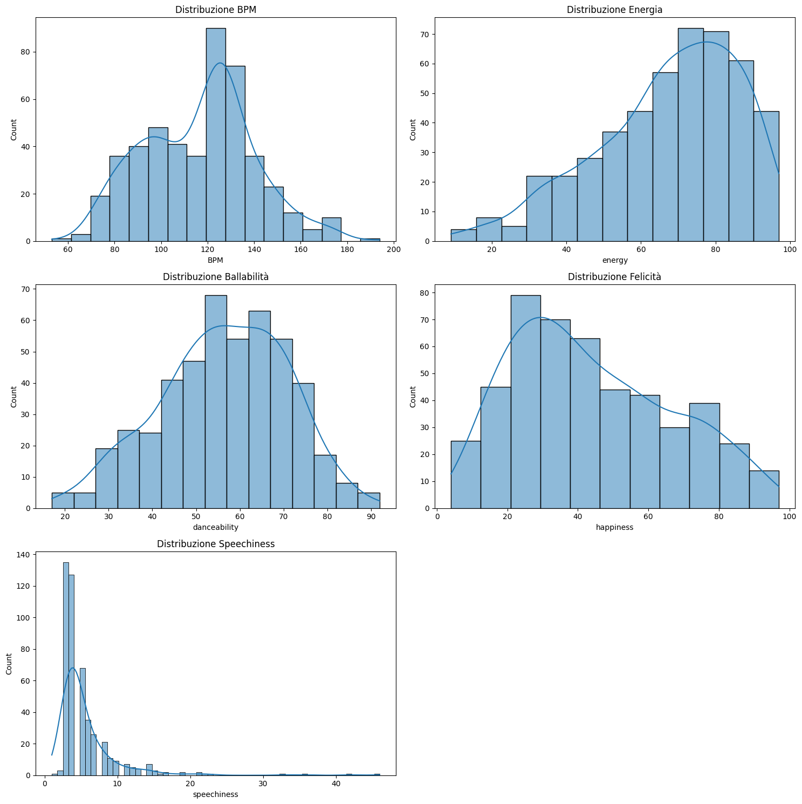
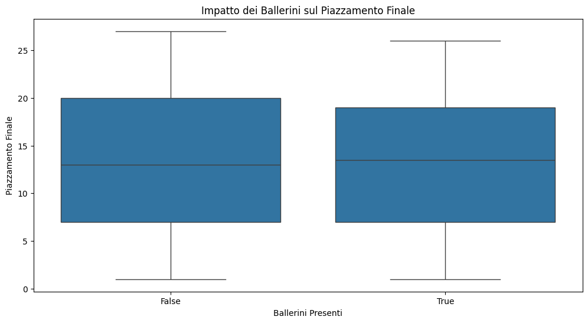
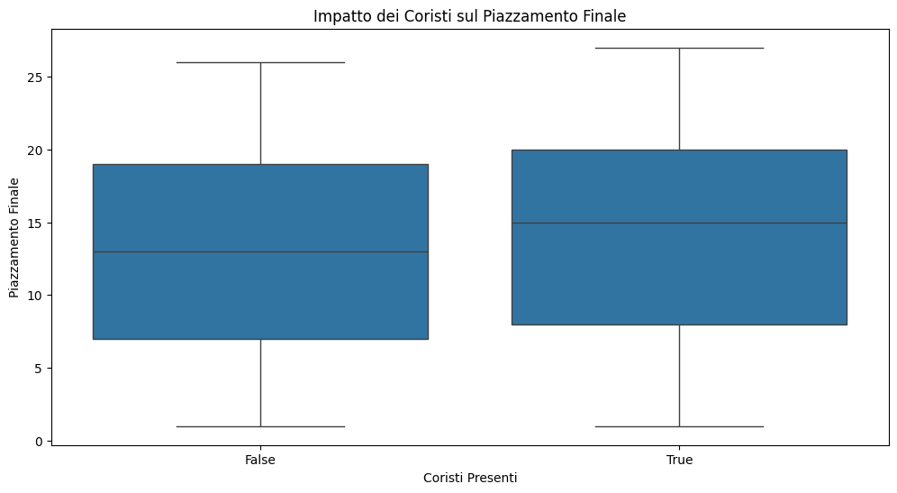
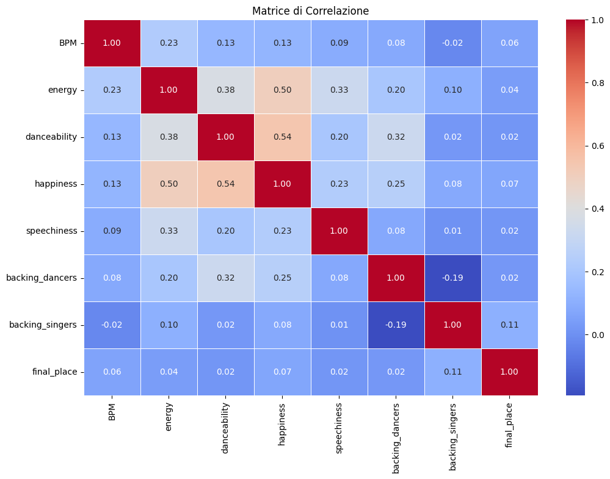
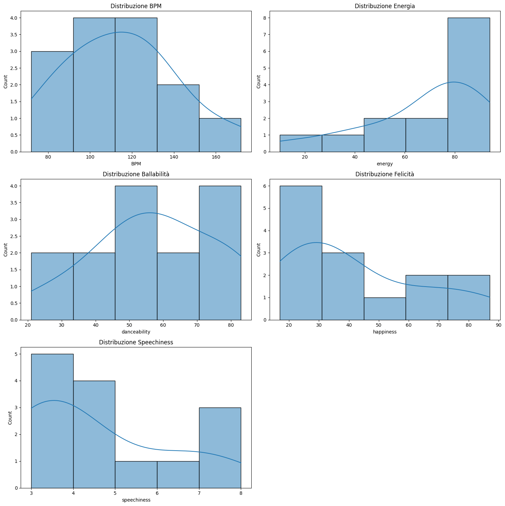

Presentazione del database di riferimento#
import pandas as pd
import matplotlib.pyplot as plt
import seaborn as sns
# Carica il file CSV
file_path = 'C:/Users/Utente/Desktop/Università/AVRC/song_data.csv'
pd.set_option('display.max_rows', None)
data = pd.read_csv(file_path, encoding='latin1')
# Visualizza le prime righe del DataFrame
print(data.to_markdown())
| | year | semi_final | semi_draw_position | final_draw_position | country | artist_name | song_name | language | style | direct_qualifier_10 | gender | main_singers | age | selection | key | BPM | energy | danceability | happiness | loudness | acousticness | instrumentalness | liveness | speechiness | release_date | key_change_10 | backing_dancers | backing_singers | backing_instruments | instrument_10 | qualified_10 | final_televote_points | final_jury_points | final_televote_votes | final_jury_votes | final_place | final_total_points | semi_place | semi_televote_points | semi_jury_points | semi_total_points | favourite_10 | race | host_10 |
|----:|-------:|-------------:|---------------------:|----------------------:|:-----------------------|:---------------------------------------------------|:----------------------------------------------|:-------------------------------------------|:------------|----------------------:|:---------|---------------:|:--------|:------------|:---------|------:|---------:|---------------:|------------:|:-----------|---------------:|-------------------:|-----------:|--------------:|:---------------|:----------------|------------------:|------------------:|----------------------:|----------------:|---------------:|------------------------:|--------------------:|-----------------------:|-------------------:|--------------:|---------------------:|-------------:|-----------------------:|-------------------:|--------------------:|---------------:|:--------|----------:|
| 0 | 2023 | 1 | 1 | 20 | Norway | Alessandra | Queen of Kings | English | Pop | 0 | Female | 1 | unknown | unknown | E Minor | 110 | 36 | 64 | 23 | 10 dB | 58 | 0 | 10 | 3 | unknown | unknown | 4 | 0 | 0 | 0 | 1 | 216 | 52 | 36 | 11 | 5 | 268 | 6 | 102 | nan | 102 | 0 | unknown | 0 |
| 1 | 2023 | 1 | 2 | nan | Malta | The Busker | Dance (Our Own Party) | English | Pop | nan | Male | 1 | unknown | unknown | F Minor | 103 | 78 | 70 | 82 | 6 dB | 2 | 0 | 18 | 4 | unknown | unknown | 0 | 0 | 2 | 0 | 0 | nan | nan | nan | nan | nan | nan | 15 | 3 | nan | 3 | 0 | unknown | 0 |
| 2 | 2023 | 1 | 3 | 5 | Serbia | Luke Black | Samo mi se spava | Serbian, English | Pop | 0 | Male | 1 | unknown | unknown | A Major | 103 | 70 | 56 | 11 | 10 dB | 4 | 2 | 32 | 5 | unknown | unknown | 4 | 0 | 0 | 0 | 1 | 16 | 14 | 4 | 6 | 24 | 30 | 10 | 37 | nan | 37 | 0 | unknown | 0 |
| 3 | 2023 | 1 | 4 | nan | Latvia | Sudden Lights | Aija | English | Rock | nan | Male | 1 | unknown | unknown | A Minor | 160 | 55 | 56 | 40 | 8 dB | 5 | 0 | 8 | 7 | unknown | unknown | 0 | 0 | 3 | 0 | 0 | nan | nan | nan | nan | nan | nan | 11 | 34 | nan | 34 | 0 | unknown | 0 |
| 4 | 2023 | 1 | 5 | 2 | Portugal | Mimicat | Ai cora��o | Portuguese | Pop | 0 | Female | 1 | unknown | unknown | Fs Minor | 145 | 63 | 66 | 77 | 8 dB | 31 | 0 | 16 | 5 | unknown | unknown | 4 | 0 | 0 | 0 | 1 | 16 | 43 | 3 | 9 | 23 | 59 | 9 | 74 | nan | 74 | 0 | unknown | 0 |
| 5 | 2023 | 1 | 6 | nan | Ireland | Wild Youth | We Are One | English | Rock | nan | Male | 1 | unknown | unknown | D Major | 112 | 66 | 47 | 12 | 7 dB | 6 | 0 | 9 | 3 | unknown | unknown | 0 | 0 | 3 | 0 | 0 | nan | nan | nan | nan | nan | nan | 12 | 10 | nan | 10 | 0 | unknown | 0 |
| 6 | 2023 | 1 | 7 | 25 | Croatia | Let 3 | Mama �C! | Croatian | Pop | 0 | Male | 1 | unknown | unknown | C Major | 135 | 78 | 60 | 63 | 7 dB | 16 | 0 | 21 | 9 | unknown | unknown | 0 | 4 | 0 | 0 | 0 | 112 | 11 | 20 | 2 | 13 | 123 | 8 | 76 | nan | 76 | 0 | unknown | 0 |
| 7 | 2023 | 1 | 8 | 3 | Switzerland | Remo Forrer | Watergun | English | Ballad | 0 | Male | 1 | unknown | unknown | Ab Minor | 130 | 87 | 68 | 39 | 5 dB | 48 | 0 | 18 | 7 | unknown | unknown | 4 | 0 | 0 | 0 | 1 | 31 | 61 | 10 | 15 | 20 | 92 | 7 | 97 | nan | 97 | 0 | unknown | 0 |
| 8 | 2023 | 1 | 9 | 23 | Israel | Noa Kirel | Unicorn | English | Pop | 0 | Female | 1 | unknown | unknown | Fs Minor | 130 | 87 | 68 | 28 | 5 dB | 2 | 0 | 32 | 10 | unknown | unknown | 5 | 0 | 0 | 0 | 1 | 185 | 177 | 30 | 25 | 3 | 362 | 3 | 127 | nan | 127 | 0 | unknown | 0 |
| 9 | 2023 | 1 | 10 | 18 | Moldova | Pasha Parfeni | Soarele si luna | Romanian | Traditional | 0 | Male | 1 | unknown | unknown | Ab Major | 125 | 86 | 62 | 34 | 5 dB | 36 | 0 | 18 | 14 | unknown | unknown | 0 | 2 | 3 | 0 | 1 | 76 | 20 | 17 | 4 | 18 | 96 | 5 | 109 | nan | 109 | 0 | unknown | 0 |
| 10 | 2023 | 1 | 11 | 9 | Sweden | Loreen | Tattoo | English | Pop | 0 | Female | 1 | unknown | unknown | Eb Minor | 150 | 78 | 55 | 30 | 6 dB | 24 | 0 | 12 | 8 | unknown | unknown | 0 | 0 | 0 | 0 | 1 | 243 | 340 | 36 | 36 | 1 | 583 | 2 | 135 | nan | 135 | 1 | unknown | 0 |
| 11 | 2023 | 1 | 12 | nan | Azerbaijan | TuralTuranX | Tell Me More | English | Pop | nan | Male | 2 | unknown | unknown | D Major | 96 | 75 | 71 | 42 | 8 dB | 2 | 0 | 29 | 4 | unknown | unknown | 0 | 0 | 0 | 1 | 0 | nan | nan | nan | nan | nan | nan | 14 | 4 | nan | 4 | 0 | unknown | 0 |
| 12 | 2023 | 1 | 13 | 14 | Czech Republic | Vesna | My Sister's Crown | English,�Ukrainian,�Czech,�Bulgarian | Pop | 0 | Female | 6 | unknown | unknown | E Minor | 150 | 92 | 55 | 51 | 6 dB | 5 | 0 | 37 | 16 | unknown | unknown | 0 | 0 | 0 | 0 | 1 | 35 | 94 | 12 | 18 | 10 | 129 | 4 | 110 | nan | 110 | 0 | unknown | 0 |
| 13 | 2023 | 1 | 14 | nan | Netherlands | Mia Nicolai�and�Dion Cooper | Burning Daylight | English | Ballad | nan | Mix | 2 | unknown | unknown | Eb Major | 71 | 43 | 28 | 29 | 9 dB | 58 | 0 | 11 | 4 | unknown | unknown | 0 | 0 | 0 | 0 | 0 | nan | nan | nan | nan | nan | nan | 13 | 7 | nan | 7 | 0 | unknown | 0 |
| 14 | 2023 | 1 | 15 | 13 | Finland | K��rij� | Cha Cha Cha | Finnish | Pop | 0 | Male | 1 | unknown | unknown | D Major | 155 | 79 | 72 | 74 | 6 dB | 0 | 0 | 11 | 4 | unknown | unknown | 4 | 0 | 0 | 0 | 1 | 376 | 150 | 37 | 22 | 2 | 526 | 1 | 177 | nan | 177 | 0 | unknown | 0 |
| 15 | 2023 | 2 | 1 | nan | Denmark | Reiley | Breaking My Heart | English | Pop | nan | Male | 1 | unknown | unknown | D Major | 194 | 75 | 59 | 57 | 5 dB | 5 | 0 | 10 | 36 | unknown | unknown | 0 | 0 | 0 | 0 | 0 | nan | nan | nan | nan | nan | nan | 14 | 6 | nan | 6 | 0 | unknown | 0 |
| 16 | 2023 | 2 | 2 | 17 | Armenia | Brunette | Future Lover | English,�Armenian | Ballad | 0 | Female | 1 | unknown | unknown | D Minor | 103 | 44 | 56 | 24 | 11 dB | 89 | 0 | 10 | 4 | unknown | unknown | 0 | 0 | 0 | 0 | 1 | 53 | 69 | 10 | 15 | 14 | 122 | 6 | 99 | nan | 99 | 0 | unknown | 0 |
| 17 | 2023 | 2 | 3 | nan | Romania | Theodor Andrei | D.G.T. (Off and On) | Romanian, English | Pop | nan | Male | 1 | unknown | unknown | A Minor | 110 | 75 | 68 | 84 | 6 dB | 22 | 0 | 25 | 3 | unknown | unknown | 0 | 0 | 0 | 1 | 0 | nan | nan | nan | nan | nan | nan | 15 | 0 | nan | 0 | 0 | unknown | 0 |
| 18 | 2023 | 2 | 4 | 12 | Estonia | Alika | Bridges | English | Ballad | 0 | Female | 1 | unknown | unknown | C Minor | 140 | 47 | 59 | 33 | 5 dB | 84 | 0 | 14 | 3 | unknown | unknown | 0 | 0 | 0 | 1 | 1 | 22 | 146 | 4 | 22 | 8 | 168 | 10 | 74 | nan | 74 | 0 | unknown | 0 |
| 19 | 2023 | 2 | 5 | 16 | Belgium | Gustaph | Because of You | English | Pop | 0 | Male | 1 | unknown | unknown | C Minor | 127 | 91 | 74 | 7 | 6 dB | 0 | 82 | 10 | 4 | unknown | unknown | 1 | 3 | 0 | 0 | 1 | 55 | 127 | 13 | 22 | 7 | 182 | 8 | 90 | nan | 90 | 0 | unknown | 0 |
| 20 | 2023 | 2 | 6 | 7 | Cyprus | Andrew Lambrou | Break a Broken Heart | English | Ballad | 0 | Male | 1 | unknown | unknown | Eb Minor | 130 | 74 | 43 | 43 | 4 dB | 6 | 0 | 19 | 4 | unknown | unknown | 0 | 0 | 0 | 0 | 1 | 58 | 68 | 11 | 17 | 12 | 126 | 7 | 94 | nan | 94 | 0 | unknown | 0 |
| 21 | 2023 | 2 | 7 | nan | Iceland | Dilj� | Power | English | Pop | nan | Female | 1 | unknown | unknown | F Minor | 160 | 73 | 41 | 27 | 5 dB | 1 | 0 | 20 | 5 | unknown | unknown | 0 | 0 | 0 | 0 | 0 | nan | nan | nan | nan | nan | nan | 11 | 44 | nan | 44 | 0 | unknown | 0 |
| 22 | 2023 | 2 | 8 | nan | Greece | Victor Vernicos | What They Say | English | Pop | nan | Male | 1 | unknown | unknown | C Major | 154 | 55 | 40 | 27 | 6 dB | 31 | 0 | 28 | 11 | unknown | unknown | 0 | 0 | 0 | 0 | 0 | nan | nan | nan | nan | nan | nan | 13 | 14 | nan | 14 | 0 | unknown | 0 |
| 23 | 2023 | 2 | 9 | 4 | Poland | Blanka | Solo | English | Pop | 0 | Female | 1 | unknown | unknown | B Minor | 99 | 64 | 90 | 72 | 7 dB | 18 | 0 | 12 | 4 | unknown | unknown | 4 | 0 | 0 | 0 | 1 | 81 | 12 | 17 | 5 | 19 | 93 | 3 | 124 | nan | 124 | 0 | unknown | 0 |
| 24 | 2023 | 2 | 10 | 24 | Slovenia | Joker Out | Carpe Diem | Slovene | Rock | 0 | Male | 1 | unknown | unknown | Cs Minor | 132 | 66 | 69 | 56 | 9 dB | 1 | 0 | 10 | 4 | unknown | unknown | 0 | 0 | 4 | 0 | 1 | 45 | 33 | 11 | 6 | 21 | 78 | 5 | 103 | nan | 103 | 0 | unknown | 0 |
| 25 | 2023 | 2 | 11 | nan | Georgia | Iru | Echo | English | Ballad | nan | Female | 1 | unknown | unknown | G Minor | 145 | 91 | 59 | 37 | 4 dB | 11 | 2 | 30 | 14 | unknown | unknown | 0 | 0 | 0 | 0 | 0 | nan | nan | nan | nan | nan | nan | 12 | 33 | nan | 33 | 0 | unknown | 0 |
| 26 | 2023 | 2 | 12 | nan | San Marino | Piqued Jacks | Like an Animal | English | Rock | nan | Male | 1 | unknown | unknown | C Major | 128 | 79 | 54 | 64 | 6 dB | 0 | 0 | 21 | 4 | unknown | unknown | 0 | 0 | 3 | 0 | 0 | nan | nan | nan | nan | nan | nan | 16 | 0 | nan | 0 | 0 | unknown | 0 |
| 27 | 2023 | 2 | 13 | 1 | Austria | Teya�and�Salena | Who the Hell Is Edgar? | English | Pop | 0 | Female | 2 | unknown | unknown | B Minor | 146 | 64 | 69 | 51 | 8 dB | 2 | 0 | 10 | 6 | unknown | unknown | 4 | 0 | 0 | 0 | 1 | 16 | 104 | 4 | 18 | 15 | 120 | 2 | 137 | nan | 137 | 0 | unknown | 0 |
| 28 | 2023 | 2 | 14 | 10 | Albania | Albina�and Familja Kelmendi | Duje | Albanian | Traditional | 0 | Female | 1 | unknown | unknown | D Minor | 110 | 80 | 64 | 43 | 6 dB | 5 | 0 | 13 | 19 | unknown | unknown | 0 | 5 | 0 | 0 | 1 | 59 | 17 | 10 | 4 | 22 | 76 | 9 | 83 | nan | 83 | 0 | unknown | 0 |
| 29 | 2023 | 2 | 15 | 22 | Lithuania | Monika Linkyte | Stay | English | Ballad | 0 | Female | 1 | unknown | unknown | B Major | 98 | 55 | 40 | 18 | 7 dB | 3 | 0 | 8 | 4 | unknown | unknown | 0 | 4 | 0 | 0 | 1 | 46 | 81 | 8 | 15 | 11 | 127 | 4 | 110 | nan | 110 | 0 | unknown | 0 |
| 30 | 2023 | 2 | 16 | 15 | Australia | Voyager | Promise | English | Rock | 0 | Male | 1 | unknown | unknown | C Major | 122 | 70 | 62 | 33 | 8 dB | 0 | 0 | 10 | 7 | unknown | unknown | 0 | 0 | 4 | 0 | 1 | 21 | 130 | 6 | 23 | 9 | 151 | 1 | 149 | nan | 149 | 0 | unknown | 0 |
| 31 | 2023 | nan | nan | 6 | France | La Zarra | �videmment | French | Ballad | 1 | Female | 1 | unknown | unknown | B Major | 120 | 75 | 73 | 23 | 5 dB | 12 | 0 | 8 | 7 | unknown | unknown | 0 | 0 | 0 | 0 | nan | 50 | 54 | 17 | 10 | 16 | 104 | nan | nan | nan | nan | 0 | unknown | 0 |
| 32 | 2023 | nan | nan | 8 | Spain | Blanca Paloma | Eaea | Spanish | Traditional | 1 | Female | 1 | unknown | unknown | F Minor | 116 | 73 | 61 | 26 | 4 dB | 7 | 0 | 39 | 4 | unknown | unknown | 5 | 0 | 0 | 0 | nan | 5 | 95 | 2 | 21 | 17 | 100 | nan | nan | nan | nan | 0 | unknown | 0 |
| 33 | 2023 | nan | nan | 11 | Italy | Marco Mengoni | Due vite | Italian | Ballad | 1 | Male | 1 | unknown | unknown | D Major | 117 | 54 | 64 | 13 | 6 dB | 40 | 0 | 9 | 3 | unknown | unknown | 2 | 0 | 0 | 0 | nan | 174 | 176 | 29 | 27 | 4 | 350 | nan | nan | nan | nan | 0 | unknown | 0 |
| 34 | 2023 | nan | nan | 19 | Ukraine | Tvorchi | Heart of Steel | English, Ukrainian | Pop | 1 | Male | 1 | unknown | unknown | Ab Minor | 78 | 52 | 53 | 34 | 8 dB | 1 | 0 | 9 | 5 | unknown | unknown | 2 | 0 | 1 | 0 | nan | 189 | 54 | 28 | 10 | 6 | 243 | nan | nan | nan | nan | 0 | unknown | 0 |
| 35 | 2023 | nan | nan | 21 | Germany | Lord of the Lost | Blood & Glitter | English | Rock | 1 | Male | 1 | unknown | unknown | A Minor | 139 | 80 | 64 | 47 | 4 dB | 1 | 0 | 5 | 8 | unknown | unknown | 0 | 0 | 4 | 1 | nan | 15 | 3 | 3 | 2 | 26 | 18 | nan | nan | nan | nan | 0 | unknown | 0 |
| 36 | 2023 | nan | nan | 26 | United Kingdom | Mae Muller | I Wrote a Song | English | Pop | 1 | Female | 1 | unknown | unknown | A Minor | 125 | 89 | 71 | 86 | 4 dB | 4 | 0 | 8 | 5 | unknown | unknown | 0 | 4 | 0 | 0 | nan | 9 | 15 | 2 | 5 | 25 | 24 | nan | nan | nan | nan | 0 | unknown | 1 |
| 37 | 2022 | 1 | 1 | nan | Albania | Ronela Hajati | Sekret | Albanian, English | Pop | nan | Female | 1 | unknown | unknown | F Minor | 100 | 70 | 76 | 45 | 6 dB | 5 | 0 | 52 | 5 | unknown | unknown | 5 | 0 | 0 | 0 | 0 | nan | nan | nan | nan | nan | nan | 12 | 46 | 12 | 58 | 0 | unknown | 0 |
| 38 | 2022 | 1 | 2 | nan | Latvia | Citi Zeni | Eat Your Salad | English | Pop | nan | Male | 1 | unknown | unknown | B Minor | 115 | 69 | 75 | 59 | 8 dB | 1 | 0 | 34 | 17 | unknown | unknown | 0 | 0 | 4 | 0 | 0 | nan | nan | nan | nan | nan | nan | 14 | 16 | 39 | 55 | 0 | unknown | 0 |
| 39 | 2022 | 1 | 3 | 14 | Lithuania | Monika Liu | Sentimentai | Lithuanian | Ballad | 0 | Female | 1 | unknown | unknown | C Major | 93 | 56 | 68 | 50 | 8 dB | 9 | 0 | 31 | 3 | unknown | unknown | 0 | 0 | 0 | 0 | 1 | 93 | 35 | 21 | 10 | 14 | 128 | 7 | 103 | 56 | 159 | 0 | unknown | 0 |
| 40 | 2022 | 1 | 4 | 5 | Switzerland | Marius Bear | Boys Do Cry | English | Ballad | 0 | Male | 1 | unknown | unknown | F Major | 116 | 18 | 42 | 39 | 11 dB | 87 | 0 | 11 | 4 | unknown | unknown | 0 | 0 | 0 | 0 | 1 | 0 | 78 | 0 | 21 | 17 | 78 | 9 | 11 | 107 | 118 | 0 | unknown | 0 |
| 41 | 2022 | 1 | 5 | nan | Slovenia | LPS | Disko | Slovene | Pop | nan | Male | 1 | unknown | unknown | E Minor | 120 | 61 | 68 | 60 | 6 dB | 0 | 0 | 5 | 3 | unknown | unknown | 0 | 0 | 4 | 0 | 0 | nan | nan | nan | nan | nan | nan | 17 | 8 | 7 | 15 | 0 | unknown | 0 |
| 42 | 2022 | 1 | 6 | 12 | Ukraine | Kalush Orchestra | Stefania | Ukrainian | Traditional | 0 | Male | 1 | unknown | unknown | D Major | 105 | 82 | 83 | 32 | 5 dB | 14 | 0 | 12 | 4 | unknown | unknown | 1 | 2 | 2 | 0 | 1 | 439 | 192 | 39 | 26 | 1 | 631 | 1 | 202 | 135 | 337 | 1 | unknown | 0 |
| 43 | 2022 | 1 | 7 | nan | Bulgaria | Intelligent Music Project | Intention | English | Rock | nan | Male | 1 | unknown | unknown | D Major | 80 | 84 | 52 | 72 | 8 dB | 3 | 2 | 24 | 3 | unknown | unknown | 0 | 0 | 5 | 0 | 0 | nan | nan | nan | nan | nan | nan | 16 | 18 | 11 | 29 | 0 | unknown | 0 |
| 44 | 2022 | 1 | 8 | 11 | Netherlands | S10 | De diepte | Dutch | Ballad | 0 | Female | 1 | unknown | unknown | D Minor | 87 | 48 | 32 | 15 | 6 dB | 39 | 0 | 14 | 3 | unknown | unknown | 0 | 0 | 0 | 0 | 1 | 42 | 129 | 12 | 25 | 11 | 171 | 2 | 79 | 142 | 221 | 0 | unknown | 0 |
| 45 | 2022 | 1 | 9 | 19 | Moldova | Zdob si Zdub�and�Advahov Brothers | Trenuletul | Romanian, English | Traditional | 0 | Male | 1 | unknown | unknown | C Major | 142 | 88 | 70 | 96 | 3 dB | 41 | 0 | 32 | 14 | unknown | unknown | 0 | 0 | 5 | 0 | 1 | 239 | 14 | 35 | 4 | 7 | 253 | 8 | 135 | 19 | 154 | 0 | unknown | 0 |
| 46 | 2022 | 1 | 10 | 3 | Portugal | Maro | Saudade, saudade | English,�Portuguese | Ballad | 0 | Female | 6 | unknown | unknown | Bb Minor | 83 | 34 | 64 | 38 | 11 dB | 68 | 0 | 11 | 4 | unknown | unknown | 0 | 0 | 0 | 0 | 1 | 36 | 171 | 9 | 29 | 9 | 207 | 4 | 87 | 121 | 208 | 0 | unknown | 0 |
| 47 | 2022 | 1 | 11 | nan | Croatia | Mia Dimsic | Guilty Pleasure | English,�Croatian | Ballad | nan | Female | 1 | unknown | unknown | F Major | 84 | 59 | 53 | 51 | 7 dB | 12 | 0 | 14 | 6 | unknown | unknown | 3 | 0 | 0 | 1 | 0 | nan | nan | nan | nan | nan | nan | 11 | 33 | 42 | 75 | 0 | unknown | 0 |
| 48 | 2022 | 1 | 12 | nan | Denmark | Reddi | The Show | English | Rock | nan | Female | 1 | unknown | unknown | C Major | 90 | 80 | 31 | 21 | 5 dB | 2 | 0 | 37 | 6 | unknown | unknown | 0 | 0 | 3 | 1 | 0 | nan | nan | nan | nan | nan | nan | 13 | 20 | 35 | 55 | 0 | unknown | 0 |
| 49 | 2022 | 1 | 13 | nan | Austria | Lumix�feat.�Pia Maria | Halo | English | Dance | nan | Female | 1 | unknown | unknown | Ab Major | 150 | 91 | 57 | 69 | 5 dB | 0 | 0 | 53 | 4 | unknown | unknown | 0 | 0 | 0 | 1 | 0 | nan | nan | nan | nan | nan | nan | 15 | 36 | 6 | 42 | 0 | unknown | 0 |
| 50 | 2022 | 1 | 14 | 18 | Iceland | Systur | Meo aekkandi sol | Icelandic | Traditional | 0 | Female | 3 | unknown | unknown | D Minor | 100 | 52 | 58 | 35 | 12 dB | 58 | 4 | 7 | 3 | unknown | unknown | 0 | 0 | 1 | 1 | 1 | 10 | 10 | 2 | 4 | 23 | 20 | 10 | 39 | 64 | 103 | 0 | unknown | 0 |
| 51 | 2022 | 1 | 15 | 17 | Greece | Amanda Georgiadi Tenfjord | Die Together | English | Ballad | 0 | Female | 1 | unknown | unknown | F Major | 150 | 37 | 48 | 20 | 8 dB | 12 | 0 | 13 | 7 | unknown | unknown | 0 | 0 | 0 | 0 | 1 | 57 | 158 | 9 | 26 | 8 | 215 | 3 | 60 | 151 | 211 | 0 | unknown | 0 |
| 52 | 2022 | 1 | 16 | 7 | Norway | Subwoolfer | Give That Wolf a Banana | English | Pop | 0 | Male | 2 | unknown | unknown | G Minor | 124 | 53 | 74 | 55 | 10 dB | 20 | 0 | 9 | 4 | unknown | unknown | 4 | 0 | 0 | 0 | 1 | 146 | 36 | 32 | 10 | 10 | 182 | 6 | 104 | 73 | 177 | 0 | unknown | 0 |
| 53 | 2022 | 1 | 17 | 8 | Armenia | Rosa Linn | Snap | English | Ballad | 0 | Female | 1 | unknown | unknown | C Major | 170 | 64 | 56 | 53 | 8 dB | 11 | 0 | 45 | 6 | unknown | unknown | 0 | 0 | 0 | 1 | 1 | 21 | 40 | 4 | 10 | 20 | 61 | 5 | 105 | 82 | 187 | 0 | unknown | 0 |
| 54 | 2022 | 2 | 1 | 4 | Finland | The Rasmus | Jezebel | English | Rock | 0 | Male | 1 | unknown | unknown | B Minor | 116 | 87 | 50 | 49 | 4 dB | 0 | 0 | 8 | 4 | unknown | unknown | 0 | 0 | 3 | 0 | 1 | 26 | 12 | 8 | 3 | 21 | 38 | 7 | 99 | 63 | 162 | 0 | unknown | 0 |
| 55 | 2022 | 2 | 2 | nan | Israel | Michael Ben David | I.M | English | Pop | nan | Male | 1 | unknown | unknown | Ab Minor | 120 | 82 | 70 | 45 | 7 dB | 1 | 0 | 13 | 6 | unknown | unknown | 4 | 0 | 0 | 0 | 0 | nan | nan | nan | nan | nan | nan | 13 | 27 | 34 | 61 | 0 | unknown | 0 |
| 56 | 2022 | 2 | 3 | 24 | Serbia | Konstrakta | In corpore sano | Serbian,�Latin | Traditional | 0 | Female | 1 | unknown | unknown | C Major | 136 | 71 | 92 | 63 | 7 dB | 1 | 0 | 17 | 8 | unknown | unknown | 5 | 0 | 0 | 0 | 1 | 225 | 87 | 34 | 15 | 5 | 312 | 3 | 174 | 63 | 237 | 0 | unknown | 0 |
| 57 | 2022 | 2 | 4 | 15 | Azerbaijan | Nadir Rustamli | Fade to Black | English | Ballad | 0 | Male | 1 | unknown | unknown | A Minor | 79 | 30 | 34 | 30 | 10 dB | 19 | 0 | 14 | 6 | unknown | unknown | 1 | 0 | 0 | 0 | 1 | 3 | 103 | 1 | 19 | 16 | 106 | 10 | 0 | 96 | 96 | 0 | unknown | 0 |
| 58 | 2022 | 2 | 5 | nan | Georgia | Circus Mircus | Lock Me In | English | Rock | nan | Male | 1 | unknown | unknown | D Major | 107 | 76 | 79 | 84 | 9 dB | 0 | 0 | 30 | 4 | unknown | unknown | 0 | 0 | 3 | 1 | 0 | nan | nan | nan | nan | nan | nan | 18 | 9 | 13 | 22 | 0 | unknown | 0 |
| 59 | 2022 | 2 | 6 | nan | Malta | Emma Muscat | I Am What I Am | English | Pop | nan | Female | 1 | unknown | unknown | G Major | 98 | 71 | 56 | 38 | 5 dB | 4 | 0 | 9 | 3 | unknown | unknown | 4 | 0 | 0 | 1 | 0 | nan | nan | nan | nan | nan | nan | 16 | 20 | 27 | 47 | 0 | unknown | 0 |
| 60 | 2022 | 2 | 7 | nan | San Marino | Achille Lauro | Stripper | Italian, English | Rock | nan | Male | 1 | unknown | unknown | A Major | 140 | 80 | 60 | 55 | 6 dB | 0 | 0 | 8 | 10 | unknown | unknown | 0 | 0 | 5 | 0 | 0 | nan | nan | nan | nan | nan | nan | 14 | 29 | 21 | 50 | 0 | unknown | 0 |
| 61 | 2022 | 2 | 8 | 21 | Australia | Sheldon Riley | Not the Same | English | Ballad | 0 | Male | 1 | unknown | unknown | Bb Minor | 128 | 43 | 36 | 38 | 10 dB | 66 | 0 | 14 | 4 | unknown | unknown | 0 | 0 | 0 | 0 | 1 | 2 | 123 | 1 | 23 | 15 | 125 | 2 | 74 | 169 | 243 | 0 | unknown | 0 |
| 62 | 2022 | 2 | 9 | nan | Cyprus | Andromache | Ela | English,�Greek | Pop | nan | Female | 1 | unknown | unknown | Eb Minor | 98 | 63 | 66 | 65 | 7 dB | 24 | 0 | 6 | 9 | unknown | unknown | 2 | 0 | 0 | 0 | 0 | nan | nan | nan | nan | nan | nan | 12 | 54 | 9 | 63 | 0 | unknown | 0 |
| 63 | 2022 | 2 | 10 | nan | Ireland | Brooke | That's Rich | English | Pop | nan | Female | 1 | unknown | unknown | A Major | 122 | 60 | 68 | 56 | 4 dB | 0 | 0 | 34 | 3 | unknown | unknown | 4 | 0 | 0 | 0 | 0 | nan | nan | nan | nan | nan | nan | 15 | 35 | 12 | 47 | 0 | unknown | 0 |
| 64 | 2022 | 2 | 11 | nan | North Macedonia | Andrea | Circles | English | Ballad | nan | Female | 1 | unknown | unknown | Cs Minor | 144 | 71 | 54 | 22 | 5 dB | 48 | 0 | 17 | 3 | unknown | unknown | 0 | 0 | 0 | 0 | 0 | nan | nan | nan | nan | nan | nan | 11 | 20 | 56 | 76 | 0 | unknown | 0 |
| 65 | 2022 | 2 | 12 | 25 | Estonia | Stefan | Hope | English | Pop | 0 | Male | 1 | unknown | unknown | Bb Minor | 123 | 78 | 52 | 55 | 5 dB | 19 | 0 | 10 | 4 | unknown | unknown | 0 | 0 | 0 | 1 | 1 | 98 | 43 | 19 | 8 | 13 | 141 | 5 | 96 | 113 | 209 | 0 | unknown | 0 |
| 66 | 2022 | 2 | 13 | 2 | Romania | WRS | Llamame | English,�Spanish | Pop | 0 | Male | 1 | unknown | unknown | F Minor | 120 | 76 | 76 | 66 | 6 dB | 6 | 0 | 15 | 13 | unknown | unknown | 4 | 0 | 0 | 0 | 1 | 53 | 12 | 12 | 3 | 18 | 65 | 9 | 100 | 18 | 118 | 0 | unknown | 0 |
| 67 | 2022 | 2 | 14 | 23 | Poland | Ochman | River | English | Ballad | 0 | Male | 1 | unknown | unknown | Ab Major | 140 | 67 | 51 | 33 | 5 dB | 56 | 0 | 12 | 4 | unknown | unknown | 4 | 0 | 0 | 0 | 1 | 105 | 46 | 22 | 9 | 12 | 151 | 6 | 114 | 84 | 198 | 0 | unknown | 0 |
| 68 | 2022 | 2 | 15 | nan | Montenegro | Vladana | Breathe | English, Italian | Ballad | nan | Female | 1 | unknown | unknown | G Minor | 77 | 46 | 43 | 20 | 7 dB | 55 | 0 | 10 | 3 | unknown | unknown | 0 | 0 | 0 | 0 | 0 | nan | nan | nan | nan | nan | nan | 17 | 22 | 11 | 33 | 0 | unknown | 0 |
| 69 | 2022 | 2 | 16 | 16 | Belgium | Jeremie Makiese | Miss You | English | Pop | 0 | Male | 1 | unknown | unknown | Fs Minor | 144 | 53 | 63 | 28 | 6 dB | 24 | 0 | 13 | 5 | unknown | unknown | 4 | 0 | 0 | 0 | 1 | 5 | 59 | 2 | 13 | 19 | 64 | 8 | 46 | 105 | 151 | 0 | unknown | 0 |
| 70 | 2022 | 2 | 17 | 20 | Sweden | Cornelia Jakobs | Hold Me Closer | English | Ballad | 0 | Female | 1 | unknown | unknown | Fs Major | 97 | 62 | 49 | 17 | 8 dB | 11 | 0 | 14 | 4 | unknown | unknown | 0 | 0 | 0 | 0 | 1 | 180 | 258 | 33 | 33 | 4 | 438 | 1 | 174 | 222 | 396 | 0 | unknown | 0 |
| 71 | 2022 | 2 | 18 | 1 | Czech Republic | We Are Domi | Lights Off | English | Dance | 0 | Female | 1 | unknown | unknown | A Minor | 126 | 79 | 59 | 52 | 6 dB | 15 | 0 | 21 | 11 | unknown | unknown | 0 | 0 | 2 | 0 | 1 | 5 | 33 | 1 | 11 | 22 | 38 | 4 | 125 | 102 | 227 | 0 | unknown | 0 |
| 72 | 2022 | nan | nan | 9 | Italy | Mahmood�and�Blanco | Brividi | Italian | Ballad | 1 | Male | 2 | unknown | unknown | G Major | 123 | 61 | 52 | 34 | 4 dB | 45 | 0 | 25 | 3 | unknown | unknown | 0 | 0 | 1 | 0 | nan | 110 | 158 | 23 | 26 | 6 | 268 | nan | nan | nan | nan | 0 | unknown | 1 |
| 73 | 2022 | nan | nan | 10 | Spain | Chanel | SloMo | Spanish, English | Pop | 1 | Female | 1 | unknown | unknown | Cs Minor | 105 | 81 | 73 | 59 | 3 dB | 13 | 0 | 9 | 6 | unknown | unknown | 5 | 0 | 0 | 0 | nan | 228 | 231 | 38 | 34 | 3 | 459 | nan | nan | nan | nan | 0 | unknown | 0 |
| 74 | 2022 | nan | nan | 13 | Germany | Malik Harris | Rockstars | English | Ballad | 1 | Male | 1 | unknown | unknown | G Major | 81 | 64 | 65 | 52 | 6 dB | 45 | 0 | 38 | 23 | unknown | unknown | 0 | 0 | 0 | 1 | nan | 6 | 0 | 3 | 0 | 25 | 6 | nan | nan | nan | nan | 0 | unknown | 0 |
| 75 | 2022 | nan | nan | 22 | United Kingdom | Sam Ryder | Space Man | English | Pop | 1 | Male | 1 | unknown | unknown | B Major | 80 | 83 | 47 | 33 | 2 dB | 18 | 0 | 10 | 5 | unknown | unknown | 0 | 0 | 2 | 1 | nan | 183 | 283 | 34 | 35 | 2 | 466 | nan | nan | nan | nan | 0 | unknown | 0 |
| 76 | 2022 | nan | nan | 6 | France | Alvan�and�Ahez | Fulenn | Breton | Traditional | 1 | Mix | 4 | unknown | unknown | Fs Major | 120 | 84 | 74 | 48 | 7 dB | 1 | 0 | 24 | 12 | unknown | unknown | 1 | 0 | 0 | 1 | nan | 8 | 9 | 6 | 3 | 24 | 17 | nan | nan | nan | nan | 0 | unknown | 0 |
| 77 | 2021 | 1 | 1 | 18 | Lithuania | The Roop | Discoteque | English | Dance | 0 | Male | 1 | unknown | unknown | F Major | 115 | 80 | 83 | 63 | 6 dB | 5 | 0 | 13 | 6 | unknown | unknown | 2 | 2 | 2 | 0 | 1 | 165 | 55 | 27 | 12 | 8 | 220 | 4 | 137 | 66 | 203 | 0 | unknown | 0 |
| 78 | 2021 | 1 | 2 | nan | Slovenia | Ana Soklic | Amen | English | Ballad | nan | Female | 1 | unknown | unknown | Ab Minor | 81 | 40 | 45 | 21 | 10 dB | 48 | 0 | 15 | 5 | unknown | unknown | 0 | 0 | 0 | 0 | 0 | nan | nan | nan | nan | nan | nan | 13 | 8 | 36 | 44 | 0 | unknown | 0 |
| 79 | 2021 | 1 | 3 | 5 | Russia | Manizha | Russian Woman | Russian, English | Traditional | 0 | Female | 1 | unknown | unknown | E Minor | 102 | 70 | 89 | 65 | 7 dB | 20 | 0 | 7 | 19 | unknown | unknown | 0 | 4 | 0 | 0 | 1 | 100 | 104 | 22 | 21 | 9 | 204 | 3 | 108 | 117 | 225 | 0 | unknown | 0 |
| 80 | 2021 | 1 | 4 | 25 | Sweden | Tusse | Voices | English | Pop | 0 | Male | 1 | unknown | unknown | Bb Minor | 90 | 76 | 50 | 40 | 5 dB | 0 | 0 | 13 | 4 | unknown | unknown | 4 | 0 | 0 | 0 | 1 | 63 | 46 | 18 | 10 | 14 | 109 | 7 | 51 | 91 | 142 | 0 | unknown | 0 |
| 81 | 2021 | 1 | 5 | nan | Australia | Montaigne | Technicolour | English | Pop | nan | Female | 1 | unknown | unknown | A Minor | 119 | 57 | 67 | 27 | 6 dB | 7 | 0 | 27 | 3 | unknown | unknown | 3 | 0 | 0 | 0 | 0 | nan | nan | nan | nan | nan | nan | 14 | 2 | 26 | 28 | 0 | unknown | 0 |
| 82 | 2021 | 1 | 6 | nan | North Macedonia | Vasil | Here I Stand | English | Ballad | nan | Male | 1 | unknown | unknown | G Major | 138 | 20 | 32 | 13 | 11 dB | 51 | 0 | 32 | 4 | unknown | unknown | 0 | 0 | 0 | 0 | 0 | nan | nan | nan | nan | nan | nan | 15 | 11 | 12 | 23 | 0 | unknown | 0 |
| 83 | 2021 | 1 | 7 | nan | Ireland | Lesley Roy | Maps | English | Pop | nan | Female | 1 | unknown | unknown | G Major | 143 | 83 | 54 | 55 | 7 dB | 2 | 0 | 36 | 4 | unknown | unknown | 0 | 0 | 0 | 0 | 0 | nan | nan | nan | nan | nan | nan | 16 | 4 | 16 | 20 | 0 | unknown | 0 |
| 84 | 2021 | 1 | 8 | 1 | Cyprus | Elena Tsagrinou | El Diablo | English | Pop | 0 | Female | 1 | unknown | unknown | A Minor | 114 | 66 | 66 | 62 | 8 dB | 0 | 0 | 84 | 13 | unknown | unknown | 4 | 0 | 0 | 0 | 1 | 44 | 50 | 7 | 11 | 16 | 94 | 6 | 78 | 92 | 170 | 0 | unknown | 0 |
| 85 | 2021 | 1 | 9 | 22 | Norway | Tix | Fallen Angel | English | Pop | 0 | Male | 1 | unknown | unknown | Cs Major | 93 | 65 | 54 | 28 | 5 dB | 7 | 0 | 11 | 3 | unknown | unknown | 4 | 0 | 0 | 0 | 1 | 60 | 15 | 16 | 5 | 18 | 75 | 10 | 77 | 38 | 115 | 0 | unknown | 0 |
| 86 | 2021 | 1 | 10 | nan | Croatia | Albina | TickTock | English,�Croatian | Pop | nan | Female | 1 | unknown | unknown | E Minor | 126 | 76 | 77 | 76 | 5 dB | 5 | 0 | 34 | 4 | unknown | unknown | 4 | 0 | 0 | 0 | 0 | nan | nan | nan | nan | nan | nan | 11 | 53 | 57 | 110 | 0 | unknown | 0 |
| 87 | 2021 | 1 | 11 | 4 | Belgium | Hooverphonic | The Wrong Place | English | Ballad | 0 | Female | 1 | unknown | unknown | F Major | 80 | 73 | 49 | 25 | 4 dB | 5 | 0 | 16 | 4 | unknown | unknown | 0 | 1 | 3 | 0 | 1 | 3 | 71 | 2 | 17 | 19 | 74 | 9 | 47 | 70 | 117 | 0 | unknown | 0 |
| 88 | 2021 | 1 | 12 | 3 | Israel | Eden Alene | Set Me Free | English | Pop | 0 | Female | 1 | unknown | unknown | Cs Minor | 107 | 66 | 75 | 47 | 7 dB | 28 | 0 | 10 | 8 | unknown | unknown | 4 | 0 | 0 | 0 | 1 | 20 | 73 | 4 | 17 | 17 | 93 | 5 | 93 | 99 | 192 | 0 | unknown | 0 |
| 89 | 2021 | 1 | 13 | nan | Romania | Roxen | Amnesia | English | Ballad | nan | Female | 1 | unknown | unknown | Bb Minor | 120 | 69 | 58 | 25 | 6 dB | 13 | 0 | 16 | 14 | unknown | unknown | 5 | 0 | 0 | 0 | 0 | nan | nan | nan | nan | nan | nan | 12 | 27 | 58 | 85 | 0 | unknown | 0 |
| 90 | 2021 | 1 | 14 | 21 | Azerbaijan | Efendi | Mata Hari | English | Pop | 0 | Female | 1 | unknown | unknown | E Minor | 100 | 68 | 71 | 46 | 6 dB | 1 | 0 | 26 | 4 | unknown | unknown | 4 | 0 | 0 | 0 | 1 | 33 | 32 | 12 | 9 | 20 | 65 | 8 | 91 | 47 | 138 | 0 | unknown | 0 |
| 91 | 2021 | 1 | 15 | 19 | Ukraine | Go_A | Shum | Ukrainian | Traditional | 0 | Female | 1 | unknown | unknown | E Major | 118 | 74 | 53 | 50 | 5 dB | 5 | 0 | 11 | 6 | unknown | unknown | 2 | 0 | 3 | 0 | 1 | 267 | 97 | 38 | 19 | 5 | 364 | 2 | 164 | 103 | 267 | 0 | unknown | 0 |
| 92 | 2021 | 1 | 16 | 6 | Malta | Destiny | Je me casse | English | Pop | 0 | Female | 1 | unknown | unknown | Ab Minor | 112 | 87 | 76 | 78 | 4 dB | 15 | 0 | 28 | 11 | unknown | unknown | 4 | 0 | 0 | 0 | 1 | 47 | 208 | 15 | 35 | 7 | 255 | 1 | 151 | 174 | 325 | 1 | unknown | 0 |
| 93 | 2021 | 2 | 1 | nan | San Marino | Senhit | Adrenalina | English | Dance | nan | Mix | 2 | unknown | unknown | Bb Minor | 104 | 89 | 67 | 53 | 6 dB | 0 | 0 | 39 | 8 | unknown | unknown | 4 | 0 | 0 | 0 | 1 | 13 | 37 | 3 | 7 | nan | nan | 9 | 42 | 76 | 118 | 0 | unknown | 0 |
| 94 | 2021 | 2 | 2 | nan | Estonia | Uku Suviste | The Lucky One | English | Ballad | nan | Male | 1 | unknown | unknown | Ab Minor | 176 | 64 | 40 | 41 | 9 dB | 4 | 0 | 9 | 7 | unknown | unknown | 0 | 0 | 0 | 0 | 0 | nan | nan | nan | nan | nan | nan | 13 | 29 | 29 | 58 | 0 | unknown | 0 |
| 95 | 2021 | 2 | 3 | nan | Czech Republic | Benny Cristo | Omaga | English | Ballad | nan | Male | 1 | unknown | unknown | Fs Major | 122 | 87 | 72 | 89 | 6 dB | 11 | 0 | 34 | 3 | unknown | unknown | 4 | 0 | 0 | 0 | 0 | nan | nan | nan | nan | nan | nan | 15 | 0 | 23 | 23 | 0 | unknown | 0 |
| 96 | 2021 | 2 | 4 | 10 | Greece | Stefania | Last Dance | English | Pop | 0 | Female | 1 | unknown | unknown | D Minor | 147 | 91 | 53 | 39 | 5 dB | 2 | 0 | 7 | 4 | unknown | unknown | 4 | 0 | 0 | 0 | 1 | 79 | 91 | 11 | 15 | 10 | 170 | 6 | 80 | 104 | 184 | 0 | unknown | 0 |
| 97 | 2021 | 2 | 5 | nan | Austria | Vincent Bueno | Amen | English | Ballad | nan | Male | 1 | unknown | unknown | Cs Major | 80 | 38 | 44 | 8 | 10 dB | 1 | 0 | 8 | 4 | unknown | unknown | 0 | 0 | 0 | 0 | 0 | nan | nan | nan | nan | nan | nan | 12 | 13 | 53 | 66 | 0 | unknown | 0 |
| 98 | 2021 | 2 | 6 | nan | Poland | Rafal | The Ride | English | Pop | nan | Male | 1 | unknown | unknown | B Minor | 132 | 77 | 69 | 93 | 7 dB | 40 | 0 | 25 | 3 | unknown | unknown | 4 | 0 | 0 | 0 | 0 | nan | nan | nan | nan | nan | nan | 14 | 17 | 18 | 35 | 0 | unknown | 0 |
| 99 | 2021 | 2 | 7 | 14 | Moldova | Natalia Gordienko | Sugar | English | Pop | 0 | Female | 1 | unknown | unknown | B Minor | 120 | 76 | 69 | 51 | 7 dB | 0 | 1 | 13 | 5 | unknown | unknown | 4 | 0 | 0 | 0 | 1 | 62 | 53 | 11 | 6 | 13 | 115 | 7 | 123 | 56 | 179 | 0 | unknown | 0 |
| 100 | 2021 | 2 | 8 | nan | Iceland | Dadi og Gagnamagnio | 10 Years | English | Pop | nan | Male | 1 | unknown | unknown | D Minor | 123 | 62 | 80 | 44 | 7 dB | 1 | 0 | 9 | 4 | unknown | unknown | 0 | 2 | 3 | 0 | 1 | 180 | 198 | 29 | 28 | nan | nan | 2 | 148 | 140 | 288 | 0 | unknown | 0 |
| 101 | 2021 | 2 | 9 | 8 | Serbia | Hurricane | Loco Loco | Serbian | Pop | 0 | Female | 3 | unknown | unknown | C Major | 105 | 92 | 65 | 60 | 4 dB | 17 | 0 | 16 | 12 | unknown | unknown | 0 | 0 | 0 | 0 | 1 | 82 | 20 | 12 | 3 | 15 | 102 | 8 | 68 | 56 | 124 | 0 | unknown | 0 |
| 102 | 2021 | 2 | 10 | nan | Georgia | Tornike Kipiani | You | English | Ballad | nan | Male | 1 | unknown | unknown | C Major | 134 | 37 | 50 | 12 | 8 dB | 24 | 4 | 19 | 2 | unknown | unknown | 0 | 0 | 0 | 0 | 0 | nan | nan | nan | nan | nan | nan | 16 | 15 | 1 | 16 | 0 | unknown | 0 |
| 103 | 2021 | 2 | 11 | 2 | Albania | Anxhela Peristeri | Karma | Albanian | Ballad | 0 | Female | 1 | unknown | unknown | G Minor | 150 | 63 | 52 | 19 | 10 dB | 0 | 0 | 13 | 4 | unknown | unknown | 0 | 0 | 0 | 0 | 1 | 35 | 22 | 5 | 4 | 21 | 57 | 10 | 38 | 74 | 112 | 0 | unknown | 0 |
| 104 | 2021 | 2 | 12 | 7 | Portugal | The Black Mamba | Love Is on My Side | English | Traditional | 0 | Male | 1 | unknown | unknown | E Major | 66 | 42 | 28 | 24 | 7 dB | 34 | 0 | 20 | 3 | unknown | unknown | 0 | 0 | 4 | 0 | 1 | 27 | 126 | 6 | 22 | 12 | 153 | 4 | 111 | 128 | 239 | 0 | unknown | 0 |
| 105 | 2021 | 2 | 13 | 17 | Bulgaria | Victoria | Growing Up Is Getting Old | English | Ballad | 0 | Female | 1 | unknown | unknown | G Major | 93 | 18 | 52 | 25 | 8 dB | 69 | 0 | 9 | 3 | unknown | unknown | 0 | 0 | 0 | 0 | 1 | 30 | 140 | 5 | 26 | 11 | 170 | 3 | 101 | 149 | 250 | 0 | unknown | 0 |
| 106 | 2021 | 2 | 14 | 16 | Finland | Blind Channel | Dark Side | English | Rock | 0 | Male | 2 | unknown | unknown | G Major | 98 | 96 | 57 | 44 | 4 dB | 0 | 0 | 27 | 11 | unknown | unknown | 0 | 1 | 3 | 0 | 1 | 218 | 83 | 37 | 19 | 6 | 301 | 5 | 150 | 84 | 234 | 0 | unknown | 0 |
| 107 | 2021 | 2 | 15 | nan | Latvia | Samanta Tina | The Moon Is Rising | English | Ballad | nan | Female | 1 | unknown | unknown | Bb Minor | 150 | 63 | 66 | 33 | 8 dB | 4 | 0 | 14 | 14 | unknown | unknown | 3 | 0 | 0 | 0 | 0 | nan | nan | nan | nan | nan | nan | 17 | 10 | 4 | 14 | 0 | unknown | 0 |
| 108 | 2021 | 2 | 16 | 11 | Switzerland | Gjon's Tears | Tout l'univers | French | Ballad | 0 | Male | 1 | unknown | unknown | A Minor | 123 | 37 | 52 | 19 | 9 dB | 83 | 0 | 15 | 3 | unknown | unknown | 0 | 0 | 0 | 0 | 1 | 165 | 267 | 34 | 34 | 3 | 432 | 1 | 135 | 156 | 291 | 0 | unknown | 0 |
| 109 | 2021 | 2 | 17 | nan | Denmark | Fyr og Flamme | Ove os pa hinanden | Danish | Pop | nan | Male | 2 | unknown | unknown | C Major | 124 | 87 | 68 | 96 | 6 dB | 1 | 0 | 34 | 3 | unknown | unknown | 0 | 3 | 0 | 1 | 0 | nan | nan | nan | nan | nan | nan | 11 | 80 | 9 | 89 | 0 | unknown | 0 |
| 110 | 2021 | nan | nan | 23 | Netherlands | Jeangu Macrooy | Birth of a New Age | English,�Sranan Tongo | Ballad | 1 | Male | 1 | unknown | unknown | C Minor | 95 | 72 | 72 | 54 | 5 dB | 48 | 0 | 23 | 6 | unknown | unknown | 1 | 2 | 0 | 0 | nan | 0 | 11 | 0 | 5 | 11 | 23 | nan | nan | nan | nan | 0 | unknown | 1 |
| 111 | 2021 | nan | nan | 13 | Spain | Blas Canto | Voy a quedarme | Spanish | Ballad | 1 | Male | 1 | unknown | unknown | Eb Major | 76 | 72 | 52 | 36 | 5 dB | 21 | 0 | 8 | 5 | unknown | unknown | 0 | 0 | 0 | 0 | nan | 0 | 6 | 0 | 2 | 24 | 6 | nan | nan | nan | nan | 0 | unknown | 0 |
| 112 | 2021 | nan | nan | 9 | United Kingdom | James Newman | Embers | English | Pop | 1 | Male | 1 | unknown | unknown | Fs Major | 126 | 82 | 68 | 72 | 5 dB | 0 | 0 | 11 | 6 | unknown | unknown | 0 | 0 | 4 | 0 | nan | 0 | 0 | 0 | 0 | 26 | 0 | nan | nan | nan | nan | 0 | unknown | 0 |
| 113 | 2021 | nan | nan | 15 | Germany | Jendrik | I Don't Feel Hate | English | Pop | 1 | Male | 1 | unknown | unknown | F Minor | 114 | 84 | 83 | 75 | 5 dB | 19 | 0 | 3 | 21 | unknown | unknown | 1 | 0 | 3 | 0 | nan | 0 | 3 | 0 | 2 | 25 | 3 | nan | nan | nan | nan | 0 | unknown | 0 |
| 114 | 2021 | nan | nan | 20 | France | Barbara Pravi | Voila | French | Ballad | 1 | Female | 1 | unknown | unknown | D Minor | 135 | 34 | 45 | 60 | 9 dB | 77 | 0 | 30 | 6 | unknown | unknown | 0 | 0 | 0 | 0 | nan | 251 | 248 | 38 | 33 | 2 | 499 | nan | nan | nan | nan | 0 | unknown | 0 |
| 115 | 2021 | nan | nan | 24 | Italy | Maneskin | Zitti e buoni | Italian | Rock | 1 | Male | 1 | unknown | unknown | E Minor | 103 | 94 | 63 | 64 | 3 dB | 0 | 0 | 42 | 7 | unknown | unknown | 0 | 0 | 3 | 0 | nan | 318 | 206 | 38 | 28 | 1 | 524 | nan | nan | nan | nan | 0 | unknown | 0 |
| 116 | 2019 | 1 | 1 | 11 | Cyprus | Tamta | Replay | English | Dance | 0 | Female | 1 | unknown | unknown | B Minor | 102 | 68 | 71 | 50 | 5 dB | 5 | 0 | 6 | 7 | unknown | unknown | 4 | 0 | 0 | 0 | 1 | 32 | 77 | 4 | 15 | 13 | 109 | 9 | 54 | 95 | 149 | 0 | unknown | 0 |
| 117 | 2019 | 1 | 2 | nan | Montenegro | D mol | Heaven | English | Pop | nan | Mix | 6 | unknown | unknown | D Major | 92 | 73 | 53 | 47 | 8 dB | 21 | 0 | 31 | 5 | unknown | unknown | 0 | 0 | 0 | 0 | 0 | nan | nan | nan | nan | nan | nan | 16 | 15 | 31 | 46 | 0 | unknown | 0 |
| 118 | 2019 | 1 | 3 | nan | Finland | Darude feat. Sebastian Rejman | Look Away | English | Dance | nan | Male | 1 | unknown | unknown | B Minor | 126 | 89 | 50 | 48 | 4 dB | 1 | 0 | 15 | 5 | unknown | unknown | 1 | 0 | 1 | 0 | 0 | nan | nan | nan | nan | nan | nan | 17 | 14 | 9 | 23 | 0 | unknown | 0 |
| 119 | 2019 | 1 | 4 | nan | Poland | Tulia | Fire of Love | Polish, English | Traditional | nan | Female | 4 | unknown | unknown | A Major | 96 | 78 | 59 | 78 | 4 dB | 2 | 21 | 64 | 3 | unknown | unknown | 0 | 0 | 0 | 0 | 0 | nan | nan | nan | nan | nan | nan | 11 | 60 | 60 | 120 | 0 | unknown | 0 |
| 120 | 2019 | 1 | 5 | 10 | Slovenia | Zala Kralj & Gasper santl | Sebi | Slovene | Ballad | 0 | Mix | 2 | unknown | unknown | G Minor | 108 | 65 | 78 | 74 | 7 dB | 18 | 2 | 16 | 4 | unknown | unknown | 0 | 0 | 0 | 1 | 1 | 59 | 46 | 13 | 9 | 15 | 105 | 6 | 93 | 74 | 167 | 0 | unknown | 0 |
| 121 | 2019 | 1 | 6 | 3 | Czech Republic | Lake Malawi | Friend of a Friend | English | Pop | 0 | Male | 1 | unknown | unknown | A Minor | 106 | 74 | 70 | 41 | 5 dB | 27 | 0 | 7 | 6 | unknown | unknown | 0 | 0 | 2 | 0 | 1 | 7 | 150 | 4 | 26 | 11 | 157 | 2 | 85 | 157 | 242 | 0 | unknown | 0 |
| 122 | 2019 | 1 | 7 | nan | Hungary | Joci Papai | Az en apam | Hungarian | Ballad | nan | Male | 1 | unknown | unknown | Eb Minor | 96 | 45 | 63 | 33 | 8 dB | 55 | 0 | 10 | 4 | unknown | unknown | 0 | 0 | 0 | 0 | 0 | nan | nan | nan | nan | nan | nan | 12 | 32 | 65 | 97 | 0 | unknown | 0 |
| 123 | 2019 | 1 | 8 | 19 | Belarus | ZENA | Like It | English | Dance | 0 | Female | 1 | unknown | unknown | G Minor | 105 | 80 | 71 | 35 | 8 dB | 29 | 0 | 20 | 5 | unknown | unknown | 2 | 2 | 0 | 0 | 1 | 13 | 18 | 2 | 5 | 24 | 31 | 10 | 44 | 78 | 122 | 0 | unknown | 0 |
| 124 | 2019 | 1 | 9 | 23 | Serbia | Nevena Bozovic | Kruna | Serbian | Ballad | 0 | Female | 1 | unknown | unknown | Ab Minor | 158 | 48 | 20 | 16 | 6 dB | 21 | 0 | 13 | 3 | unknown | unknown | 0 | 0 | 0 | 0 | 1 | 54 | 35 | 7 | 8 | 18 | 89 | 7 | 65 | 91 | 156 | 0 | unknown | 0 |
| 125 | 2019 | 1 | 10 | nan | Belgium | Eliot | Wake Up | English | Ballad | nan | Male | 1 | unknown | unknown | G Minor | 145 | 20 | 37 | 23 | 12 dB | 89 | 0 | 9 | 4 | unknown | unknown | 0 | 0 | 2 | 0 | 0 | nan | nan | nan | nan | nan | nan | 13 | 20 | 50 | 70 | 0 | unknown | 0 |
| 126 | 2019 | 1 | 11 | nan | Georgia | Oto Nemsadze | Keep on Going | Georgian | Traditional | nan | Male | 1 | unknown | unknown | B Minor | 120 | 70 | 32 | 30 | 5 dB | 49 | 0 | 26 | 4 | unknown | unknown | 0 | 5 | 0 | 0 | 0 | nan | nan | nan | nan | nan | nan | 14 | 33 | 29 | 62 | 0 | unknown | 0 |
| 127 | 2019 | 1 | 12 | 25 | Australia | Kate MillerHeidke | Zero Gravity | English | Opera | 0 | Female | 1 | unknown | unknown | Fs Major | 132 | 54 | 46 | 26 | 2 dB | 57 | 0 | 41 | 4 | unknown | unknown | 2 | 0 | 0 | 0 | 1 | 131 | 153 | 30 | 24 | 9 | 284 | 1 | 140 | 121 | 261 | 0 | unknown | 0 |
| 128 | 2019 | 1 | 13 | 17 | Iceland | Hatari | Hatrio mun sigra | Icelandic | Dance | 0 | Mix | 2 | unknown | unknown | E Minor | 110 | 67 | 57 | 48 | 10 dB | 0 | 0 | 9 | 8 | unknown | unknown | 4 | 0 | 0 | 0 | 1 | 186 | 46 | 34 | 9 | 10 | 232 | 3 | 151 | 70 | 221 | 0 | unknown | 0 |
| 129 | 2019 | 1 | 14 | 18 | Estonia | Victor Crone | Storm | English | Pop | 0 | Male | 1 | unknown | unknown | D Major | 128 | 59 | 62 | 29 | 5 dB | 5 | 0 | 8 | 3 | unknown | unknown | 0 | 0 | 0 | 1 | 1 | 48 | 28 | 10 | 7 | 20 | 76 | 4 | 133 | 65 | 198 | 0 | unknown | 0 |
| 130 | 2019 | 1 | 15 | nan | Portugal | Conan Osiris | TelemOveis | Portuguese | Traditional | nan | Male | 1 | unknown | unknown | G Major | 123 | 37 | 71 | 24 | 12 dB | 62 | 3 | 8 | 5 | unknown | unknown | 1 | 0 | 0 | 0 | 0 | nan | nan | nan | nan | nan | nan | 15 | 43 | 8 | 51 | 0 | unknown | 0 |
| 131 | 2019 | 1 | 16 | 13 | Greece | Katerine Duska | Better Love | English | Pop | 0 | Female | 1 | unknown | unknown | Ab Major | 88 | 69 | 37 | 35 | 5 dB | 1 | 0 | 9 | 6 | unknown | unknown | 2 | 3 | 0 | 0 | 1 | 24 | 50 | 3 | 8 | 21 | 74 | 5 | 54 | 131 | 185 | 0 | unknown | 0 |
| 132 | 2019 | 1 | 17 | 7 | San Marino | Serhat | Say Na Na Na | English | Dance | 0 | Male | 1 | unknown | unknown | Db Minor | 118 | 92 | 68 | 74 | 5 dB | 0 | 0 | 36 | 8 | unknown | unknown | 0 | 5 | 0 | 0 | 1 | 65 | 12 | 11 | 3 | 19 | 77 | 8 | 124 | 26 | 150 | 0 | unknown | 0 |
| 133 | 2019 | 2 | 1 | nan | Armenia | Srbuk | Walking Out | English | Pop | nan | Female | 1 | unknown | unknown | Db Major | 130 | 57 | 43 | 17 | 8 dB | 0 | 23 | 10 | 4 | unknown | unknown | 0 | 0 | 0 | 0 | 0 | nan | nan | nan | nan | nan | nan | 16 | 23 | 26 | 49 | 0 | unknown | 0 |
| 134 | 2019 | 2 | 2 | nan | Ireland | Sarah McTernan | 22 | English | Pop | nan | Female | 1 | unknown | unknown | C Major | 125 | 45 | 71 | 67 | 9 dB | 12 | 0 | 65 | 5 | unknown | unknown | 2 | 0 | 0 | 0 | 0 | nan | nan | nan | nan | nan | nan | 18 | 3 | 13 | 16 | 0 | unknown | 0 |
| 135 | 2019 | 2 | 3 | nan | Moldova | Anna Odobescu | Stay | English | Ballad | nan | Female | 1 | unknown | unknown | C Minor | 156 | 62 | 42 | 24 | 5 dB | 29 | 0 | 20 | 3 | unknown | unknown | 1 | 0 | 0 | 0 | 0 | nan | nan | nan | nan | nan | nan | 12 | 27 | 58 | 85 | 0 | unknown | 0 |
| 136 | 2019 | 2 | 4 | 24 | Switzerland | Luca Hanni | She Got Me | English | Dance | 0 | Male | 1 | unknown | unknown | B Minor | 97 | 75 | 66 | 48 | 6 dB | 6 | 0 | 8 | 5 | unknown | unknown | 4 | 0 | 0 | 0 | 1 | 212 | 152 | 38 | 28 | 4 | 364 | 4 | 137 | 95 | 232 | 0 | unknown | 0 |
| 137 | 2019 | 2 | 5 | nan | Latvia | Carousel | That Night | English | Pop | nan | Female | 1 | unknown | unknown | G Minor | 93 | 46 | 67 | 51 | 10 dB | 68 | 0 | 9 | 4 | unknown | unknown | 0 | 0 | 3 | 0 | 0 | nan | nan | nan | nan | nan | nan | 15 | 13 | 37 | 50 | 0 | unknown | 0 |
| 138 | 2019 | 2 | 6 | nan | Romania | Ester Peony | On a Sunday | English | Pop | nan | Female | 1 | unknown | unknown | C Minor | 72 | 49 | 35 | 33 | 6 dB | 13 | 0 | 11 | 6 | unknown | unknown | 2 | 2 | 1 | 0 | 0 | nan | nan | nan | nan | nan | nan | 13 | 24 | 47 | 71 | 0 | unknown | 0 |
| 139 | 2019 | 2 | 7 | 6 | Denmark | Leonora | Love Is Forever | English,�French | Pop | 0 | Female | 1 | unknown | unknown | Db Major | 136 | 42 | 73 | 79 | 5 dB | 58 | 0 | 7 | 3 | unknown | unknown | 2 | 2 | 0 | 0 | 1 | 51 | 69 | 13 | 16 | 12 | 120 | 10 | 41 | 53 | 94 | 0 | unknown | 0 |
| 140 | 2019 | 2 | 8 | 9 | Sweden | John Lundvik | Too Late for Love | English | Ballad | 0 | Male | 1 | unknown | unknown | C Major | 104 | 75 | 40 | 42 | 4 dB | 20 | 0 | 7 | 7 | unknown | unknown | 0 | 4 | 0 | 0 | 1 | 93 | 241 | 17 | 32 | 5 | 334 | 3 | 88 | 150 | 238 | 0 | unknown | 0 |
| 141 | 2019 | 2 | 9 | nan | Austria | PAENDA | Limits | English | Ballad | nan | Female | 1 | unknown | unknown | C Major | 131 | 36 | 46 | 18 | 12 dB | 81 | 0 | 11 | 6 | unknown | unknown | 0 | 0 | 0 | 0 | 0 | nan | nan | nan | nan | nan | nan | 17 | 0 | 21 | 21 | 0 | unknown | 0 |
| 142 | 2019 | 2 | 10 | nan | Croatia | Roko | The Dream | English,�Croatian | Ballad | nan | Male | 1 | unknown | unknown | F Minor | 114 | 60 | 61 | 24 | 10 dB | 49 | 61 | 34 | 3 | unknown | unknown | 2 | 0 | 0 | 0 | 0 | nan | nan | nan | nan | nan | nan | 14 | 38 | 26 | 64 | 0 | unknown | 0 |
| 143 | 2019 | 2 | 11 | 1 | Malta | Michela | Chameleon | English | Pop | 0 | Female | 1 | unknown | unknown | Bb Minor | 98 | 70 | 71 | 85 | 4 dB | 28 | 0 | 17 | 7 | unknown | unknown | 4 | 0 | 0 | 0 | 1 | 20 | 87 | 4 | 19 | 14 | 107 | 8 | 50 | 107 | 157 | 0 | unknown | 0 |
| 144 | 2019 | 2 | 12 | nan | Lithuania | Jurij Veklenko | Run with the Lions | English | Pop | nan | Male | 1 | unknown | unknown | C Major | 158 | 64 | 60 | 41 | 7 dB | 1 | 39 | 8 | 5 | unknown | unknown | 0 | 0 | 0 | 0 | 0 | nan | nan | nan | nan | nan | nan | 11 | 77 | 16 | 93 | 0 | unknown | 0 |
| 145 | 2019 | 2 | 13 | 5 | Russia | Sergey Lazarev | Scream | English | Ballad | 0 | Male | 1 | unknown | unknown | Bb Major | 92 | 52 | 33 | 26 | 7 dB | 9 | 0 | 8 | 4 | unknown | unknown | 0 | 0 | 0 | 0 | 1 | 244 | 126 | 30 | 24 | 3 | 370 | 6 | 124 | 93 | 217 | 0 | unknown | 0 |
| 146 | 2019 | 2 | 14 | 2 | Albania | Jonida Maliqi | Ktheju tokes | Albanian | Traditional | 0 | Female | 1 | unknown | unknown | Db Major | 117 | 70 | 57 | 58 | 6 dB | 2 | 0 | 21 | 5 | unknown | unknown | 0 | 3 | 0 | 0 | 1 | 47 | 43 | 6 | 10 | 17 | 90 | 9 | 58 | 38 | 96 | 0 | unknown | 0 |
| 147 | 2019 | 2 | 15 | 15 | Norway | KEiiNO | Spirit in the Sky | English | Dance | 0 | Mix | 3 | unknown | unknown | A Minor | 122 | 75 | 61 | 36 | 6 dB | 14 | 0 | 11 | 6 | unknown | unknown | 0 | 0 | 0 | 0 | 1 | 291 | 40 | 37 | 9 | 6 | 331 | 7 | 170 | 40 | 210 | 0 | unknown | 0 |
| 148 | 2019 | 2 | 16 | 12 | Netherlands | Duncan Laurence | Arcade | English | Ballad | 0 | Male | 1 | unknown | unknown | A Minor | 72 | 33 | 45 | 27 | 13 dB | 82 | 0 | 14 | 4 | unknown | unknown | 0 | 0 | 0 | 1 | 1 | 261 | 237 | 40 | 32 | 1 | 498 | 1 | 140 | 140 | 280 | 1 | unknown | 0 |
| 149 | 2019 | 2 | 17 | 8 | North Macedonia | Tamara Todevska | Proud | English | Ballad | 0 | Female | 1 | unknown | unknown | C Minor | 92 | 42 | 36 | 28 | 6 dB | 82 | 0 | 14 | 3 | unknown | unknown | 0 | 0 | 0 | 0 | 1 | 58 | 247 | 11 | 32 | 7 | 305 | 2 | 84 | 155 | 239 | 0 | unknown | 0 |
| 150 | 2019 | 2 | 18 | 20 | Azerbaijan | Chingiz | Truth | English | Pop | 0 | Male | 1 | unknown | unknown | Ab Minor | 101 | 62 | 63 | 73 | 7 dB | 5 | 0 | 10 | 4 | unknown | unknown | 0 | 0 | 0 | 0 | 1 | 100 | 202 | 26 | 33 | 8 | 302 | 5 | 121 | 103 | 224 | 0 | unknown | 0 |
| 151 | 2019 | nan | nan | 4 | Germany | S!sters | Sister | English | Ballad | 1 | Female | 2 | unknown | unknown | C Major | 142 | 45 | 56 | 22 | 9 dB | 39 | 0 | 7 | 4 | unknown | unknown | 0 | 0 | 0 | 0 | nan | 0 | 24 | 0 | 5 | 25 | 24 | nan | nan | nan | nan | 0 | unknown | 0 |
| 152 | 2019 | nan | nan | 14 | Israel | Kobi Marimi | Home | English | Ballad | 1 | Male | 1 | unknown | unknown | Ab Major | 110 | 42 | 55 | 23 | 7 dB | 70 | 0 | 14 | 4 | unknown | unknown | 0 | 5 | 0 | 0 | nan | 35 | 0 | 7 | 0 | 23 | 35 | nan | nan | nan | nan | 0 | unknown | 1 |
| 153 | 2019 | nan | nan | 16 | United Kingdom | Michael Rice | Bigger than Us | English | Ballad | 1 | Male | 1 | unknown | unknown | C Major | 82 | 55 | 52 | 57 | 8 dB | 1 | 0 | 9 | 3 | unknown | unknown | 0 | 5 | 0 | 0 | nan | 3 | 8 | 1 | 5 | 26 | 11 | nan | nan | nan | nan | 0 | unknown | 0 |
| 154 | 2019 | nan | nan | 21 | France | Bilal Hassani | Roi | French, English | Pop | 1 | Female | 1 | unknown | unknown | Fs Minor | 140 | 67 | 55 | 54 | 7 dB | 21 | 0 | 12 | 4 | unknown | unknown | 2 | 0 | 0 | 0 | nan | 38 | 67 | 12 | 18 | 16 | 105 | nan | nan | nan | nan | 0 | unknown | 0 |
| 155 | 2019 | nan | nan | 22 | Italy | Mahmood | Soldi | Italian | Pop | 1 | Male | 1 | unknown | unknown | Eb Minor | 95 | 59 | 73 | 35 | 10 dB | 4 | 0 | 31 | 5 | unknown | unknown | 3 | 0 | 0 | 0 | nan | 253 | 219 | 38 | 32 | 2 | 472 | nan | nan | nan | nan | 0 | unknown | 0 |
| 156 | 2019 | nan | nan | 26 | Spain | Miki | La Venda | Spanish | Pop | 1 | Male | 1 | unknown | unknown | C Minor | 148 | 81 | 62 | 80 | 5 dB | 8 | 0 | 33 | 6 | unknown | unknown | 5 | 0 | 0 | 0 | nan | 53 | 1 | 12 | 1 | 22 | 54 | nan | nan | nan | nan | 0 | unknown | 0 |
| 157 | 2018 | 1 | 1 | nan | Azerbaijan | Aisel | X My Heart | English | Pop | 0 | Female | 1 | unknown | unknown | Ab Major | 120 | 77 | 52 | 27 | 10 dB | 0 | 80 | 14 | 3 | unknown | unknown | 4 | 0 | 0 | 0 | 0 | nan | nan | nan | nan | nan | nan | 11 | 47 | 47 | 94 | 0 | unknown | 0 |
| 158 | 2018 | 1 | 2 | nan | Iceland | Ari Olafsson | Our Choice | English | Ballad | 0 | Male | 1 | unknown | unknown | B Major | 130 | 49 | 48 | 7 | 10 dB | 0 | 92 | 31 | 3 | unknown | unknown | 0 | 5 | 0 | 0 | 0 | nan | nan | nan | nan | nan | nan | 19 | 0 | 15 | 15 | 0 | unknown | 0 |
| 159 | 2018 | 1 | 3 | 12 | Albania | Eugent Bushpepa | Mall | Albanian | Rock | 0 | Male | 4 | unknown | unknown | E Major | 95 | 76 | 39 | 41 | 6 dB | 0 | 79 | 12 | 3 | unknown | unknown | 0 | 2 | 3 | 0 | 1 | 58 | 126 | 8 | 20 | 11 | 184 | 8 | 48 | 114 | 162 | 0 | unknown | 0 |
| 160 | 2018 | 1 | 4 | nan | Belgium | Sennek | A Matter of Time | English | Pop | nan | Female | 1 | unknown | unknown | C Minor | 88 | 59 | 66 | 59 | 6 dB | 12 | 0 | 20 | 3 | unknown | unknown | 0 | 0 | 0 | 0 | 0 | nan | nan | nan | nan | nan | nan | 12 | 20 | 71 | 91 | 0 | unknown | 0 |
| 161 | 2018 | 1 | 5 | 14 | Czech Republic | Mikolas Josef | Lie to Me | English | Pop | 0 | Male | 1 | unknown | unknown | Fs Minor | 106 | 70 | 83 | 64 | 6 dB | 0 | 0 | 36 | 12 | unknown | unknown | 2 | 0 | 0 | 0 | 1 | 215 | 66 | 35 | 16 | 6 | 281 | 3 | 134 | 98 | 232 | 0 | unknown | 0 |
| 162 | 2018 | 1 | 6 | 4 | Lithuania | Ieva Zasimauskaite | When We're Old | English | Ballad | 0 | Female | 1 | unknown | unknown | Bb Major | 90 | 19 | 34 | 4 | 15 dB | 87 | 85 | 16 | 4 | unknown | unknown | 0 | 0 | 0 | 0 | 1 | 91 | 90 | 11 | 17 | 12 | 181 | 9 | 62 | 57 | 119 | 0 | unknown | 0 |
| 163 | 2018 | 1 | 7 | 22 | Israel | Netta | Toy | English | Pop | 0 | Female | 1 | unknown | unknown | Eb Minor | 130 | 71 | 79 | 80 | 5 dB | 7 | 0 | 24 | 7 | unknown | unknown | 3 | 0 | 0 | 0 | 1 | 317 | 212 | 39 | 34 | 1 | 529 | 1 | 116 | 167 | 283 | 1 | unknown | 0 |
| 164 | 2018 | 1 | 8 | nan | Belarus | Alekseev | Forever | English | Ballad | nan | Male | 1 | unknown | unknown | A Minor | 117 | 59 | 38 | 41 | 5 dB | 60 | 0 | 20 | 4 | unknown | unknown | 1 | 0 | 0 | 0 | 0 | nan | nan | nan | nan | nan | nan | 16 | 45 | 20 | 65 | 0 | unknown | 0 |
| 165 | 2018 | 1 | 9 | 6 | Estonia | Elina Nechayeva | La forza | Italian | Opera | 0 | Female | 1 | unknown | unknown | D Minor | 94 | 60 | 23 | 26 | 8 dB | 50 | 0 | 27 | 4 | unknown | unknown | 0 | 0 | 0 | 0 | 1 | 102 | 143 | 19 | 26 | 8 | 245 | 5 | 120 | 81 | 201 | 0 | unknown | 0 |
| 166 | 2018 | 1 | 10 | 18 | Bulgaria | Equinox | Bones | English | Pop | 0 | Mix | 5 | unknown | unknown | Fs Minor | 88 | 57 | 51 | 43 | 9 dB | 2 | 39 | 11 | 4 | unknown | unknown | 0 | 0 | 0 | 0 | 1 | 66 | 100 | 15 | 18 | 14 | 166 | 7 | 70 | 107 | 177 | 0 | unknown | 0 |
| 167 | 2018 | 1 | 11 | nan | North Macedonia | Eye Cue | Lost and Found | English | Pop | nan | Female | 1 | unknown | unknown | Ab Major | 120 | 76 | 75 | 56 | 3 dB | 7 | 6 | 11 | 4 | unknown | unknown | 0 | 3 | 2 | 0 | 0 | nan | nan | nan | nan | nan | nan | 18 | 6 | 18 | 24 | 0 | unknown | 0 |
| 168 | 2018 | 1 | 12 | nan | Croatia | Franka | Crazy | English | Pop | nan | Female | 1 | unknown | unknown | A Minor | 98 | 41 | 67 | 37 | 8 dB | 36 | 0 | 63 | 3 | unknown | unknown | 0 | 0 | 0 | 0 | 0 | nan | nan | nan | nan | nan | nan | 17 | 17 | 46 | 63 | 0 | unknown | 0 |
| 169 | 2018 | 1 | 13 | 5 | Austria | Cesar Sampson | Nobody but You | English | Pop | 0 | Male | 1 | unknown | unknown | B Minor | 85 | 51 | 50 | 43 | 6 dB | 9 | 0 | 36 | 3 | unknown | unknown | 0 | 0 | 0 | 0 | 1 | 71 | 271 | 18 | 34 | 3 | 342 | 4 | 116 | 115 | 231 | 0 | unknown | 0 |
| 170 | 2018 | 1 | 14 | nan | Greece | Yianna Terzi | Oniro mou | Greek | Pop | nan | Female | 1 | unknown | unknown | Db Minor | 150 | 66 | 42 | 18 | 7 dB | 2 | 0 | 12 | 4 | unknown | unknown | 0 | 0 | 0 | 0 | 0 | nan | nan | nan | nan | nan | nan | 14 | 53 | 28 | 81 | 0 | unknown | 0 |
| 171 | 2018 | 1 | 15 | 17 | Finland | Saara Aalto | Monsters | English | Pop | 0 | Female | 1 | unknown | unknown | C Minor | 122 | 73 | 58 | 27 | 4 dB | 1 | 0 | 6 | 4 | unknown | unknown | 4 | 0 | 0 | 0 | 1 | 23 | 23 | 4 | 6 | 25 | 46 | 10 | 73 | 35 | 108 | 0 | unknown | 0 |
| 172 | 2018 | 1 | 16 | nan | Armenia | Sevak Khanagyan | Qami | Armenian | Pop | nan | Male | 1 | unknown | unknown | D Minor | 75 | 50 | 34 | 23 | 8 dB | 18 | 0 | 27 | 4 | unknown | unknown | 0 | 0 | 0 | 0 | 0 | nan | nan | nan | nan | nan | nan | 15 | 41 | 38 | 79 | 0 | unknown | 0 |
| 173 | 2018 | 1 | 17 | nan | Switzerland | ZiBBZ | Stones | English | Pop | nan | Female | 1 | unknown | unknown | A Minor | 84 | 81 | 49 | 56 | 6 dB | 4 | 0 | 18 | 5 | unknown | unknown | 0 | 0 | 1 | 0 | 0 | nan | nan | nan | nan | nan | nan | 13 | 27 | 59 | 86 | 0 | unknown | 0 |
| 174 | 2018 | 1 | 18 | 24 | Ireland | Ryan O'Shaughnessy | Together | English | Traditional | 0 | Male | 1 | unknown | unknown | F Major | 94 | 32 | 70 | 28 | 13 dB | 73 | 0 | 12 | 4 | unknown | unknown | 2 | 0 | 1 | 1 | 1 | 62 | 74 | 14 | 19 | 16 | 136 | 6 | 108 | 71 | 179 | 0 | unknown | 0 |
| 175 | 2018 | 1 | 19 | 25 | Cyprus | Eleni Foureira | Fuego | English | Pop | 0 | Female | 1 | unknown | unknown | B Minor | 101 | 74 | 59 | 52 | 5 dB | 6 | 0 | 58 | 10 | unknown | unknown | 4 | 0 | 0 | 0 | 1 | 253 | 183 | 42 | 27 | 2 | 436 | 2 | 173 | 89 | 262 | 0 | unknown | 0 |
| 176 | 2018 | 2 | 1 | 7 | Norway | Alexander Rybak | That's How You Write a Song | English | Pop | 0 | Male | 1 | unknown | unknown | Bb Minor | 104 | 61 | 74 | 96 | 10 dB | 1 | 0 | 6 | 5 | unknown | unknown | 4 | 0 | 0 | 1 | 1 | 84 | 60 | 18 | 12 | 15 | 144 | 1 | 133 | 133 | 266 | 0 | unknown | 0 |
| 177 | 2018 | 2 | 2 | nan | Romania | The Humans | Goodbye | English | Pop | nan | Female | 1 | unknown | unknown | E Major | 101 | 46 | 47 | 10 | 9 dB | 1 | 84 | 15 | 3 | unknown | unknown | 0 | 0 | 5 | 0 | 0 | nan | nan | nan | nan | nan | nan | 11 | 40 | 67 | 107 | 0 | unknown | 0 |
| 178 | 2018 | 2 | 3 | 10 | Serbia | Sanja Ilic�&�Balkanika | Nova deca | Serbian | Traditional | 0 | Mix | 2 | unknown | unknown | B Minor | 125 | 87 | 38 | 30 | 4 dB | 8 | 0 | 30 | 11 | unknown | unknown | 1 | 2 | 1 | 0 | 1 | 75 | 38 | 9 | 6 | 19 | 113 | 9 | 72 | 45 | 117 | 0 | unknown | 0 |
| 179 | 2018 | 2 | 4 | nan | San Marino | Jessika�feat.�Jenifer Brening | Who We Are | English | Pop | nan | Female | 1 | unknown | unknown | Ab Minor | 127 | 75 | 67 | 61 | 6 dB | 5 | 0 | 16 | 4 | unknown | unknown | 2 | 1 | 0 | 0 | 0 | nan | nan | nan | nan | nan | nan | 17 | 14 | 14 | 28 | 0 | unknown | 0 |
| 180 | 2018 | 2 | 5 | 15 | Denmark | Rasmussen | Higher Ground | English | Traditional | 0 | Male | 1 | unknown | unknown | B Minor | 82 | 85 | 47 | 42 | 5 dB | 2 | 0 | 13 | 4 | unknown | unknown | 4 | 0 | 0 | 0 | 1 | 188 | 38 | 32 | 8 | 9 | 226 | 5 | 164 | 40 | 204 | 0 | unknown | 0 |
| 181 | 2018 | 2 | 6 | nan | Russia | Julia Samoylova | I Won't Break | English | Pop | nan | Female | 1 | unknown | unknown | Ab Minor | 91 | 80 | 52 | 11 | 9 dB | 0 | 81 | 11 | 3 | unknown | unknown | 2 | 3 | 0 | 0 | 0 | nan | nan | nan | nan | nan | nan | 15 | 51 | 14 | 65 | 0 | unknown | 0 |
| 182 | 2018 | 2 | 7 | 19 | Moldova | DoReDoS | My Lucky Day | English | Pop | 0 | Mix | 3 | unknown | unknown | B Minor | 122 | 87 | 74 | 82 | 5 dB | 1 | 0 | 32 | 7 | unknown | unknown | 3 | 0 | 0 | 0 | 1 | 115 | 94 | 23 | 13 | 10 | 209 | 3 | 153 | 82 | 235 | 0 | unknown | 0 |
| 183 | 2018 | 2 | 8 | 23 | Netherlands | Waylon | Outlaw in 'Em | English | Rock | 0 | Male | 1 | unknown | unknown | B Minor | 87 | 88 | 58 | 73 | 6 dB | 6 | 0 | 34 | 5 | unknown | unknown | 0 | 0 | 4 | 1 | 1 | 32 | 89 | 7 | 18 | 18 | 121 | 7 | 47 | 127 | 174 | 0 | unknown | 0 |
| 184 | 2018 | 2 | 9 | 16 | Australia | Jessica Mauboy | We Got Love | English | Pop | 0 | Female | 1 | unknown | unknown | G Major | 114 | 82 | 61 | 30 | 4 dB | 0 | 0 | 23 | 7 | unknown | unknown | 0 | 0 | 0 | 0 | 1 | 9 | 90 | 3 | 17 | 20 | 99 | 4 | 82 | 130 | 212 | 0 | unknown | 0 |
| 185 | 2018 | 2 | 10 | nan | Georgia | EthnoJazz Band Iriao | For You | Georgian | Pop | nan | Male | 3 | unknown | unknown | A Minor | 121 | 56 | 27 | 21 | 6 dB | 55 | 0 | 21 | 4 | unknown | unknown | 0 | 0 | 2 | 0 | 0 | nan | nan | nan | nan | nan | nan | 18 | 13 | 11 | 24 | 0 | unknown | 0 |
| 186 | 2018 | 2 | 11 | nan | Poland | Gromee�feat.�Lukas Meijer | Light Me Up | English | Dance | nan | Male | 1 | unknown | unknown | Bb Major | 123 | 74 | 55 | 46 | 6 dB | 11 | 0 | 14 | 5 | unknown | unknown | 1 | 3 | 1 | 0 | 0 | nan | nan | nan | nan | nan | nan | 14 | 60 | 21 | 81 | 0 | unknown | 0 |
| 187 | 2018 | 2 | 12 | nan | Malta | Christabelle | Taboo | English | Pop | nan | Female | 1 | unknown | unknown | G Major | 122 | 62 | 64 | 15 | 6 dB | 20 | 0 | 63 | 4 | unknown | unknown | 1 | 0 | 0 | 0 | 0 | nan | nan | 0 | 0 | nan | nan | 13 | 8 | 93 | 101 | 0 | unknown | 0 |
| 188 | 2018 | 2 | 13 | 21 | Hungary | AWS | Viszlat nyar | Hungarian | Rock | 0 | Male | 1 | unknown | unknown | Eb Minor | 164 | 94 | 33 | 34 | 3 dB | 0 | 0 | 19 | 6 | unknown | unknown | 0 | 0 | 4 | 0 | 1 | 65 | 28 | 15 | 7 | 21 | 93 | 10 | 88 | 23 | 111 | 0 | unknown | 0 |
| 189 | 2018 | 2 | 14 | nan | Latvia | Laura Rizzotto | Funny Girl | English | Pop | nan | Female | 1 | unknown | unknown | C Major | 118 | 52 | 69 | 10 | 6 dB | 40 | 0 | 13 | 5 | unknown | unknown | 0 | 0 | 0 | 0 | 0 | nan | nan | nan | nan | nan | nan | 12 | 14 | 92 | 106 | 0 | unknown | 0 |
| 190 | 2018 | 2 | 15 | 20 | Sweden | Benjamin Ingrosso | Dance You Off | English | Pop | 0 | Male | 1 | unknown | unknown | Ab Major | 109 | 69 | 73 | 76 | 5 dB | 10 | 0 | 11 | 7 | unknown | unknown | 0 | 0 | 0 | 0 | 1 | 21 | 253 | 7 | 35 | 7 | 274 | 2 | 83 | 171 | 254 | 0 | unknown | 0 |
| 191 | 2018 | 2 | 16 | nan | Montenegro | Vanja Radovanovic | Inje | Montenegrin | Rock | nan | Male | 1 | unknown | unknown | Fs Minor | 79 | 45 | 49 | 34 | 6 dB | 39 | 0 | 55 | 3 | unknown | unknown | 4 | 0 | 1 | 0 | 0 | nan | nan | nan | nan | nan | nan | 16 | 17 | 23 | 40 | 0 | unknown | 0 |
| 192 | 2018 | 2 | 17 | 3 | Slovenia | Lea Sirk | Hvala, ne! | Slovene | Pop | 0 | Female | 1 | unknown | unknown | Db Major | 140 | 60 | 81 | 36 | 8 dB | 1 | 0 | 10 | 5 | unknown | unknown | 4 | 0 | 0 | 0 | 1 | 23 | 41 | 4 | 12 | 22 | 64 | 8 | 65 | 67 | 132 | 0 | unknown | 0 |
| 193 | 2018 | 2 | 18 | 1 | Ukraine | Melovin | Under the Ladder | English | Dance | 0 | Male | 1 | unknown | unknown | Bb Minor | 140 | 74 | 53 | 33 | 8 dB | 0 | 92 | 10 | 3 | unknown | unknown | 0 | 4 | 0 | 1 | 1 | 119 | 11 | 18 | 2 | 17 | 130 | 6 | 114 | 65 | 179 | 0 | unknown | 0 |
| 194 | 2018 | nan | nan | 8 | Portugal | Claudia Pascoal | O jardim | Portuguese | Pop | 1 | Female | 1 | unknown | unknown | Bb Major | 120 | 31 | 50 | 10 | 10 dB | 84 | 0 | 28 | 4 | unknown | unknown | 0 | 1 | 0 | 0 | nan | 18 | 21 | 2 | 5 | 26 | 39 | nan | nan | nan | nan | 0 | unknown | 1 |
| 195 | 2018 | nan | nan | 9 | United Kingdom | SuRie | Storm | English | Pop | 1 | Female | 1 | unknown | unknown | Bb Major | 116 | 72 | 65 | 38 | 7 dB | 2 | 0 | 22 | 4 | unknown | unknown | 0 | 0 | 0 | 0 | nan | 25 | 23 | 7 | 6 | 24 | 48 | nan | nan | nan | nan | 0 | unknown | 0 |
| 196 | 2018 | nan | nan | 11 | Germany | Michael Schulte | You Let Me Walk Alone | English | Pop | 1 | Male | 1 | unknown | unknown | B Major | 75 | 28 | 45 | 42 | 10 dB | 78 | 0 | 10 | 3 | unknown | unknown | 0 | 0 | 0 | 0 | nan | 136 | 204 | 29 | 30 | 4 | 340 | nan | nan | nan | nan | 0 | unknown | 0 |
| 197 | 2018 | nan | nan | 13 | France | Madame Monsieur | Mercy | French | Pop | 1 | Female | 1 | unknown | unknown | E Minor | 97 | 54 | 65 | 17 | 7 dB | 7 | 0 | 58 | 5 | unknown | unknown | 0 | 0 | 1 | 0 | nan | 59 | 114 | 13 | 21 | 13 | 173 | nan | nan | nan | nan | 0 | unknown | 0 |
| 198 | 2018 | nan | nan | 26 | Italy | Ermal Meta�&�Fabrizio Moro | Non mi avete fatto niente | Italian | Pop | 1 | Male | 2 | unknown | unknown | Fs Major | 90 | 88 | 57 | 76 | 5 dB | 34 | 0 | 16 | 5 | unknown | unknown | 0 | 0 | 0 | 0 | nan | 249 | 59 | 35 | 11 | 5 | 308 | nan | nan | nan | nan | 0 | unknown | 0 |
| 199 | 2018 | nan | nan | 2 | Spain | Amaia�&�Alfred | Tu canciOn | Spanish | Pop | 1 | Mix | 2 | unknown | unknown | C Major | 120 | 31 | 48 | 26 | 8 dB | 87 | 0 | 10 | 3 | unknown | unknown | 0 | 0 | 0 | 0 | nan | 18 | 43 | 3 | 10 | 23 | 61 | nan | nan | nan | nan | 0 | unknown | 0 |
| 200 | 2017 | 1 | 1 | 24 | Sweden | Robin Bengtsson | I Can't Go On | English | Pop | 0 | Male | 1 | unknown | unknown | E Minor | 109 | 67 | 74 | 46 | 5 dB | 3 | 0 | 14 | 5 | unknown | unknown | 4 | 0 | 0 | 0 | 1 | 126 | 218 | 35 | 33 | 5 | 344 | 3 | 103 | 124 | 227 | 0 | unknown | 0 |
| 201 | 2017 | 1 | 2 | nan | Georgia | Tamara Gachechiladze | Keep the Faith | English | Pop | nan | Female | 1 | unknown | unknown | G Minor | 132 | 67 | 27 | 19 | 6 dB | 15 | 0 | 10 | 6 | unknown | unknown | 0 | 0 | 0 | 0 | 0 | nan | nan | nan | nan | nan | nan | 11 | 37 | 62 | 99 | 0 | unknown | 0 |
| 202 | 2017 | 1 | 3 | 14 | Australia | Isaiah | Don't Come Easy | English | Pop | 0 | Male | 1 | unknown | unknown | B Minor | 79 | 63 | 33 | 55 | 4 dB | 26 | 0 | 27 | 5 | unknown | unknown | 0 | 0 | 0 | 0 | 1 | 2 | 171 | 1 | 29 | 9 | 173 | 6 | 21 | 139 | 160 | 0 | unknown | 0 |
| 203 | 2017 | 1 | 4 | nan | Albania | Lindita | World | English | Pop | nan | Female | 1 | unknown | unknown | C Major | 85 | 77 | 42 | 30 | 5 dB | 14 | 0 | 29 | 4 | unknown | unknown | 0 | 4 | 0 | 0 | 0 | nan | nan | nan | nan | nan | nan | 14 | 38 | 38 | 76 | 0 | unknown | 0 |
| 204 | 2017 | 1 | 5 | 23 | Belgium | Blanche | City Lights | English | Pop | 0 | Female | 1 | unknown | unknown | C Minor | 130 | 45 | 61 | 15 | 9 dB | 24 | 0 | 21 | 3 | unknown | unknown | 0 | 0 | 0 | 0 | 1 | 255 | 108 | 40 | 21 | 4 | 363 | 4 | 125 | 40 | 165 | 0 | unknown | 0 |
| 205 | 2017 | 1 | 6 | nan | Montenegro | Slavko Kalezic | Space | English | Pop | nan | Male | 1 | unknown | unknown | A Minor | 120 | 94 | 58 | 54 | 4 dB | 1 | 0 | 11 | 9 | unknown | unknown | 0 | 0 | 0 | 0 | 0 | nan | nan | nan | nan | nan | nan | 16 | 39 | 17 | 56 | 0 | unknown | 0 |
| 206 | 2017 | 1 | 7 | nan | Finland | Norma John | Blackbird | English | Ballad | nan | Female | 1 | unknown | unknown | D Major | 81 | 33 | 28 | 12 | 11 dB | 85 | 8 | 14 | 3 | unknown | unknown | 0 | 0 | 1 | 0 | 0 | nan | nan | nan | nan | nan | nan | 12 | 51 | 41 | 92 | 0 | unknown | 0 |
| 207 | 2017 | 1 | 8 | 12 | Azerbaijan | Dihaj | Skeletons | English | Pop | 0 | Female | 1 | unknown | unknown | Fs Minor | 91 | 65 | 47 | 30 | 7 dB | 4 | 0 | 10 | 4 | unknown | unknown | 1 | 4 | 0 | 0 | 1 | 42 | 78 | 6 | 14 | 14 | 120 | 8 | 63 | 87 | 150 | 0 | unknown | 0 |
| 208 | 2017 | 1 | 9 | 11 | Portugal | Salvador Sobral | Amar pelos dois | Portuguese | Ballad | 0 | Male | 1 | unknown | unknown | F Major | 88 | 10 | 21 | 17 | 18 dB | 85 | 0 | 26 | 3 | unknown | unknown | 0 | 0 | 0 | 0 | 1 | 376 | 382 | 41 | 39 | 1 | 758 | 1 | 197 | 173 | 370 | 0 | unknown | 0 |
| 209 | 2017 | 1 | 10 | 15 | Greece | Demy | This Is Love | English | Pop | 0 | Female | 1 | unknown | unknown | A Minor | 128 | 68 | 54 | 22 | 8 dB | 0 | 0 | 11 | 3 | unknown | unknown | 2 | 0 | 0 | 0 | 1 | 29 | 48 | 6 | 7 | 19 | 77 | 10 | 54 | 61 | 115 | 0 | unknown | 0 |
| 210 | 2017 | 1 | 11 | 2 | Poland | Kasia Mos | Flashlight | English | Pop | 0 | Female | 1 | unknown | unknown | D Major | 120 | 68 | 44 | 19 | 6 dB | 6 | 0 | 37 | 5 | unknown | unknown | 0 | 0 | 1 | 0 | 1 | 41 | 23 | 11 | 7 | 22 | 64 | 9 | 69 | 50 | 119 | 0 | unknown | 0 |
| 211 | 2017 | 1 | 12 | 7 | Moldova | Sunstroke Project | Hey, Mamma! | English | Dance | 0 | Male | 1 | unknown | unknown | Bb Minor | 110 | 81 | 83 | 64 | 6 dB | 24 | 1 | 7 | 11 | unknown | unknown | 0 | 3 | 2 | 0 | 1 | 264 | 110 | 38 | 19 | 3 | 374 | 2 | 180 | 111 | 291 | 0 | unknown | 0 |
| 212 | 2017 | 1 | 13 | nan | Iceland | Svala | Paper | English | Pop | nan | Female | 1 | unknown | unknown | nan | nan | nan | nan | nan | nan | nan | nan | nan | nan | unknown | unknown | 0 | 0 | 0 | 0 | 0 | nan | nan | nan | nan | nan | nan | 15 | 31 | 29 | 60 | 0 | unknown | 0 |
| 213 | 2017 | 1 | 14 | nan | Czech Republic | Martina Barta | My Turn | English | Pop | nan | Female | 1 | unknown | unknown | G Major | 86 | 42 | 36 | 16 | 6 dB | 44 | 0 | 31 | 4 | unknown | unknown | 0 | 0 | 0 | 0 | 0 | nan | nan | nan | nan | nan | nan | 13 | 2 | 81 | 83 | 0 | unknown | 0 |
| 214 | 2017 | 1 | 15 | 19 | Cyprus | Hovig | Gravity | English | Pop | 0 | Male | 1 | unknown | unknown | Bb Minor | 75 | 73 | 59 | 72 | 7 dB | 4 | 0 | 11 | 9 | unknown | unknown | 2 | 0 | 0 | 0 | 1 | 32 | 36 | 6 | 7 | 21 | 68 | 5 | 103 | 61 | 164 | 0 | unknown | 0 |
| 215 | 2017 | 1 | 16 | 5 | Armenia | Artsvik | Fly with Me | English | Pop | 0 | Female | 1 | unknown | unknown | E Minor | 90 | 80 | 58 | 33 | 5 dB | 79 | 6 | 8 | 15 | unknown | unknown | 2 | 0 | 0 | 0 | 1 | 21 | 58 | 5 | 16 | 18 | 79 | 7 | 65 | 87 | 152 | 0 | unknown | 0 |
| 216 | 2017 | 1 | 17 | nan | Slovenia | Omar Naber | On My Way | English | Ballad | nan | Male | 1 | unknown | unknown | D Major | 67 | 55 | 42 | 14 | 6 dB | 30 | 0 | 52 | 4 | unknown | unknown | 0 | 0 | 0 | 0 | 0 | nan | nan | nan | nan | nan | nan | 17 | 20 | 16 | 36 | 0 | unknown | 0 |
| 217 | 2017 | 1 | 18 | nan | Latvia | Triana Park | Line | English | Pop | nan | Female | 1 | unknown | unknown | Ab Minor | 126 | 64 | 71 | 36 | 7 dB | 1 | 0 | 19 | 4 | unknown | unknown | 0 | 0 | 3 | 0 | 0 | nan | nan | nan | nan | nan | nan | 18 | 20 | 1 | 21 | 0 | unknown | 0 |
| 218 | 2017 | 2 | 1 | nan | Serbia | Tijana Bogicevic | In Too Deep | English | Pop | nan | Female | 1 | unknown | unknown | nan | nan | nan | nan | nan | nan | nan | nan | nan | nan | unknown | unknown | 1 | 0 | 0 | 0 | 0 | nan | nan | nan | nan | nan | nan | 11 | 45 | 53 | 98 | 0 | unknown | 0 |
| 219 | 2017 | 2 | 2 | 4 | Austria | Nathan Trent | Running on Air | English | Pop | nan | Male | 1 | unknown | unknown | A Major | 90 | 54 | 71 | 54 | 5 dB | 11 | 0 | 23 | 3 | unknown | unknown | 0 | 4 | 0 | 0 | 1 | 0 | 93 | 0 | 24 | 16 | 93 | 7 | 32 | 115 | 147 | 0 | unknown | 0 |
| 220 | 2017 | 2 | 3 | nan | North Macedonia | Jana Burceska | Dance Alone | English | Pop | nan | Female | 1 | unknown | unknown | nan | nan | nan | nan | nan | nan | nan | nan | nan | nan | unknown | unknown | 0 | 0 | 0 | 0 | 0 | nan | nan | nan | nan | nan | nan | 15 | 40 | 29 | 69 | 0 | unknown | 0 |
| 221 | 2017 | 2 | 4 | nan | Malta | Claudia Faniello | Breathlessly | English | Ballad | nan | Female | 1 | unknown | unknown | Db Major | 76 | 48 | 52 | 19 | 6 dB | 66 | 0 | 9 | 3 | unknown | unknown | 0 | 0 | 0 | 0 | 0 | nan | nan | nan | nan | nan | nan | 16 | 0 | 55 | 55 | 0 | unknown | 0 |
| 222 | 2017 | 2 | 5 | 20 | Romania | Ilinca�ft.�Alex Florea | Yodel It! | English | Pop | 0 | Mix | 2 | unknown | unknown | Bb Major | 174 | 91 | 45 | 77 | 5 dB | 1 | 0 | 12 | 15 | unknown | unknown | 0 | 1 | 0 | 0 | 1 | 224 | 58 | 38 | 11 | 7 | 282 | 6 | 148 | 26 | 174 | 0 | unknown | 0 |
| 223 | 2017 | 2 | 6 | 6 | Netherlands | O'G3NE | Lights and Shadows | English | Pop | 0 | Female | 3 | unknown | unknown | Fs Major | 128 | 73 | 41 | 51 | 5 dB | 22 | 0 | 14 | 8 | unknown | unknown | 0 | 0 | 0 | 0 | 1 | 15 | 135 | 5 | 25 | 11 | 150 | 4 | 51 | 149 | 200 | 0 | unknown | 0 |
| 224 | 2017 | 2 | 7 | 8 | Hungary | Joci Papai | Origo | Hungarian | Traditional | 0 | Male | 1 | unknown | unknown | A Minor | 108 | 73 | 55 | 45 | 6 dB | 58 | 0 | 48 | 22 | unknown | unknown | 1 | 0 | 0 | 0 | 1 | 152 | 48 | 33 | 10 | 8 | 200 | 2 | 165 | 66 | 231 | 0 | unknown | 0 |
| 225 | 2017 | 2 | 8 | 10 | Denmark | Anja | Where I Am | English | Pop | 0 | Female | 1 | unknown | unknown | Bb Minor | 91 | 75 | 40 | 65 | 5 dB | 4 | 0 | 49 | 13 | unknown | unknown | 0 | 0 | 0 | 0 | 1 | 8 | 69 | 1 | 14 | 20 | 77 | 10 | 5 | 96 | 101 | 0 | unknown | 0 |
| 226 | 2017 | 2 | 9 | nan | Ireland | Brendan Murray | Dying to Try | English | Ballad | nan | Male | 1 | unknown | unknown | F Minor | 164 | 48 | 44 | 19 | 7 dB | 63 | 0 | 11 | 3 | unknown | unknown | 0 | 0 | 0 | 0 | 0 | nan | nan | nan | nan | nan | nan | 13 | 41 | 45 | 86 | 0 | unknown | 0 |
| 227 | 2017 | 2 | 10 | nan | San Marino | Valentina Monetta�and�Jimmie Wilson | Spirit of the Night | English | Pop | nan | Mix | 2 | unknown | unknown | G Minor | 140 | 94 | 71 | 57 | 4 dB | 8 | 0 | 12 | 1 | unknown | unknown | 3 | 0 | 0 | 0 | 0 | nan | nan | nan | nan | nan | nan | 18 | 1 | 0 | 1 | 0 | unknown | 0 |
| 228 | 2017 | 2 | 11 | 13 | Croatia | Jacques Houdek | My Friend | English,�Italian | Opera | 0 | Male | 1 | unknown | unknown | C Major | 138 | 65 | 42 | 30 | 6 dB | 21 | 0 | 17 | 5 | unknown | unknown | 0 | 3 | 2 | 0 | 1 | 103 | 25 | 21 | 6 | 13 | 128 | 8 | 104 | 37 | 141 | 0 | unknown | 0 |
| 229 | 2017 | 2 | 12 | 17 | Norway | JOWST | Grab the Moment | English | Pop | 0 | Male | 1 | unknown | unknown | E Minor | 104 | 61 | 69 | 32 | 7 dB | 12 | 0 | 9 | 9 | unknown | unknown | 0 | 0 | 3 | 0 | 1 | 29 | 129 | 8 | 24 | 10 | 158 | 5 | 52 | 137 | 189 | 0 | unknown | 0 |
| 230 | 2017 | 2 | 13 | nan | Switzerland | Timebelle | Apollo | English | Pop | nan | Female | 1 | unknown | unknown | Bb Major | 87 | 56 | 61 | 28 | 6 dB | 11 | 0 | 11 | 9 | unknown | unknown | 0 | 0 | 2 | 0 | 0 | nan | nan | nan | nan | nan | nan | 12 | 49 | 48 | 97 | 0 | unknown | 0 |
| 231 | 2017 | 2 | 14 | 3 | Belarus | Naviband | Story of My Life | Belarusian | Pop | 0 | Mix | 2 | unknown | unknown | E Major | 155 | 97 | 46 | 43 | 4 dB | 2 | 0 | 40 | 8 | unknown | unknown | 0 | 0 | 0 | 1 | 1 | 33 | 50 | 9 | 11 | 17 | 83 | 9 | 55 | 55 | 110 | 0 | unknown | 0 |
| 232 | 2017 | 2 | 15 | 25 | Bulgaria | Kristian Kostov | Beautiful Mess | English | Pop | 0 | Male | 1 | unknown | unknown | C Minor | 126 | 51 | 41 | 21 | 8 dB | 42 | 0 | 11 | 4 | unknown | unknown | 0 | 0 | 0 | 0 | 1 | 337 | 278 | 41 | 38 | 2 | 615 | 1 | 204 | 199 | 403 | 0 | unknown | 0 |
| 233 | 2017 | 2 | 16 | nan | Lithuania | Fusedmarc | Rain of Revolution | English | Pop | nan | Female | 1 | unknown | unknown | Db Major | 101 | 79 | 66 | 30 | 5 dB | 4 | 0 | 12 | 6 | unknown | unknown | 0 | 4 | 1 | 0 | 0 | nan | nan | nan | nan | nan | nan | 17 | 25 | 17 | 42 | 0 | unknown | 0 |
| 234 | 2017 | 2 | 17 | nan | Estonia | Koit Toome�and�Laura | Verona | English | Pop | nan | Mix | 2 | unknown | unknown | D Minor | 111 | 82 | 61 | 29 | 4 dB | 1 | 0 | 35 | 3 | unknown | unknown | 0 | 0 | 0 | 0 | 0 | nan | nan | nan | nan | nan | nan | 14 | 69 | 16 | 85 | 0 | unknown | 0 |
| 235 | 2017 | 2 | 18 | 1 | Israel | IMRI | I Feel Alive | English | Pop | 0 | Male | 1 | unknown | unknown | C Minor | 128 | 92 | 69 | 43 | 3 dB | 2 | 2 | 5 | 5 | unknown | unknown | 5 | 0 | 0 | 0 | 1 | 5 | 34 | 3 | 8 | 23 | 39 | 3 | 132 | 75 | 207 | 0 | unknown | 0 |
| 236 | 2017 | nan | nan | 9 | Italy | Francesco Gabbani | Occidentali's Karma | Italian | Pop | 1 | Male | 1 | unknown | unknown | Bb Major | 114 | 83 | 67 | 58 | 4 dB | 4 | 0 | 11 | 8 | unknown | unknown | 1 | 4 | 0 | 0 | nan | 208 | 126 | 36 | 20 | 6 | 334 | nan | nan | nan | nan | 1 | unknown | 0 |
| 237 | 2017 | nan | nan | 16 | Spain | Manel Navarro | Do It for Your Lover | Spanish, English | Pop | 1 | Male | 1 | unknown | unknown | G Major | 170 | 77 | 66 | 88 | 4 dB | 1 | 0 | 11 | 5 | unknown | unknown | 0 | 0 | 3 | 1 | nan | 5 | 0 | 1 | 0 | 26 | 5 | nan | nan | nan | nan | 0 | unknown | 0 |
| 238 | 2017 | nan | nan | 18 | United Kingdom | Lucie Jones | Never Give Up on You | English | Ballad | 1 | Female | 1 | unknown | unknown | F Major | 128 | 37 | 41 | 25 | 8 dB | 40 | 0 | 32 | 4 | unknown | unknown | 0 | 0 | 0 | 0 | nan | 12 | 99 | 4 | 21 | 15 | 111 | nan | nan | nan | nan | 0 | unknown | 0 |
| 239 | 2017 | nan | nan | 21 | Germany | Levina | Perfect Life | English | Pop | 1 | Female | 1 | unknown | unknown | Eb Major | 124 | 70 | 81 | 52 | 6 dB | 38 | 0 | 13 | 5 | unknown | unknown | 0 | 0 | 0 | 0 | nan | 3 | 3 | 1 | 1 | 25 | 6 | nan | nan | nan | nan | 0 | unknown | 0 |
| 240 | 2017 | nan | nan | 22 | Ukraine | O.Torvald | Time | English | Rock | 1 | Male | 1 | unknown | unknown | Db Minor | 102 | 90 | 57 | 31 | 5 dB | 0 | 0 | 12 | 8 | unknown | unknown | 0 | 1 | 4 | 1 | nan | 24 | 12 | 6 | 3 | 24 | 36 | nan | nan | nan | nan | 0 | unknown | 1 |
| 241 | 2017 | nan | nan | 26 | France | Alma | Requiem | French, English | Pop | 1 | Female | 1 | unknown | unknown | nan | nan | nan | nan | nan | nan | nan | nan | nan | nan | unknown | unknown | 0 | 0 | 0 | 0 | nan | 90 | 45 | 24 | 12 | 12 | 135 | nan | nan | nan | nan | 0 | unknown | 0 |
| 242 | 2016 | 1 | 1 | nan | Finland | Sandhja | Sing It Away | English | Pop | nan | Female | 1 | unknown | unknown | G Minor | 126 | 90 | 65 | 58 | 5 dB | 0 | 3 | 15 | 8 | unknown | unknown | 0 | 5 | 0 | 0 | 0 | nan | nan | nan | nan | nan | nan | 15 | 16 | 35 | 51 | 0 | unknown | 0 |
| 243 | 2016 | 1 | 2 | nan | Greece | Argo | Utopian Land | English,�Greek3 | Pop | nan | Mix | 4 | unknown | unknown | nan | nan | nan | nan | nan | nan | nan | nan | nan | nan | unknown | unknown | 0 | 0 | 2 | 0 | 0 | nan | nan | nan | nan | nan | nan | 16 | 22 | 22 | 44 | 0 | unknown | 0 |
| 244 | 2016 | 1 | 3 | nan | Moldova | Lidia Isac | Falling Stars | English | Pop | nan | Female | 1 | unknown | unknown | Ab Major | 126 | 82 | 63 | 30 | 7 dB | 5 | 0 | 2 | 4 | unknown | unknown | 1 | 0 | 0 | 0 | 0 | nan | nan | nan | nan | nan | nan | 17 | 9 | 24 | 33 | 0 | unknown | 0 |
| 245 | 2016 | 1 | 4 | 5 | Hungary | Freddie | Pioneer | English | Pop | 0 | Male | 1 | unknown | unknown | C Minor | 72 | 59 | 51 | 28 | 8 dB | 0 | 96 | 11 | 3 | unknown | unknown | 0 | 3 | 1 | 0 | 1 | 56 | 52 | 16 | 12 | 19 | 108 | 4 | 119 | 78 | 197 | 0 | unknown | 0 |
| 246 | 2016 | 1 | 5 | 17 | Croatia | Nina Kraljic | Lighthouse | English | Pop | 0 | Female | 1 | unknown | unknown | Bb Minor | 116 | 54 | 60 | 36 | 5 dB | 23 | 0 | 21 | 4 | unknown | unknown | 0 | 4 | 0 | 0 | 1 | 33 | 40 | 5 | 11 | 23 | 73 | 10 | 53 | 80 | 133 | 0 | unknown | 0 |
| 247 | 2016 | 1 | 6 | 3 | Netherlands | Douwe Bob | Slow Down | English | Pop | 0 | Male | 1 | unknown | unknown | B Minor | 124 | 79 | 60 | 62 | 5 dB | 5 | 0 | 6 | 3 | unknown | unknown | 0 | 0 | 5 | 1 | 1 | 39 | 114 | 8 | 22 | 11 | 153 | 5 | 95 | 102 | 197 | 0 | unknown | 0 |
| 248 | 2016 | 1 | 7 | 26 | Armenia | Iveta Mukuchyan | LoveWave | English | Pop | 0 | Female | 1 | unknown | unknown | F Minor | 120 | 72 | 53 | 31 | 8 dB | 8 | 0 | 11 | 5 | unknown | unknown | 0 | 0 | 0 | 0 | 1 | 134 | 115 | 21 | 21 | 7 | 249 | 2 | 116 | 127 | 243 | 0 | unknown | 0 |
| 249 | 2016 | 1 | 8 | nan | San Marino | Serhat | I Didn't Know | English | Pop | nan | Male | 1 | unknown | unknown | Fs Minor | 123 | 70 | 68 | 54 | 7 dB | 3 | 0 | 13 | 5 | unknown | unknown | 0 | 5 | 0 | 0 | 0 | nan | nan | nan | nan | nan | nan | 12 | 49 | 19 | 68 | 0 | unknown | 0 |
| 250 | 2016 | 1 | 9 | 18 | Russia | Sergey Lazarev | You Are the Only One | English | Pop | 0 | Male | 1 | unknown | unknown | B Minor | 128 | 89 | 63 | 28 | 5 dB | 4 | 0 | 9 | 6 | unknown | unknown | 0 | 0 | 0 | 0 | 1 | 361 | 130 | 41 | 20 | 3 | 491 | 1 | 194 | 148 | 342 | 1 | unknown | 0 |
| 251 | 2016 | 1 | 10 | 2 | Czech Republic | Gabriela Guncikova | I Stand | English | Pop | 0 | Female | 1 | unknown | unknown | G Minor | 103 | 59 | 17 | 17 | 6 dB | 0 | 0 | 31 | 4 | unknown | unknown | 0 | 0 | 0 | 0 | 1 | 0 | 41 | 0 | 11 | 25 | 41 | 9 | 41 | 120 | 161 | 0 | unknown | 0 |
| 252 | 2016 | 1 | 11 | 14 | Cyprus | Minus One | Alter Ego | English | Rock | 0 | Male | 1 | unknown | unknown | Bb Minor | 130 | 91 | 48 | 59 | 4 dB | 1 | 0 | 10 | 5 | unknown | unknown | 0 | 0 | 4 | 0 | 1 | 53 | 43 | 11 | 10 | 21 | 96 | 8 | 93 | 71 | 164 | 0 | unknown | 0 |
| 253 | 2016 | 1 | 12 | 24 | Austria | Zoe | Loin d'ici | French | Pop | 0 | Female | 1 | unknown | unknown | nan | nan | nan | nan | nan | nan | nan | nan | nan | nan | unknown | unknown | 0 | 0 | 0 | 0 | 1 | 120 | 31 | 27 | 7 | 13 | 151 | 7 | 133 | 37 | 170 | 0 | unknown | 0 |
| 254 | 2016 | 1 | 13 | nan | Estonia | Juri Pootsmann | Play | English | Pop | nan | Male | 1 | unknown | unknown | nan | nan | nan | nan | nan | nan | nan | nan | nan | nan | unknown | unknown | 0 | 0 | 0 | 0 | 0 | nan | nan | nan | nan | nan | nan | 18 | 15 | 9 | 24 | 0 | unknown | 0 |
| 255 | 2016 | 1 | 14 | 4 | Azerbaijan | Samra | Miracle | English | Pop | 0 | Female | 1 | unknown | unknown | F Minor | 96 | 76 | 58 | 34 | 3 dB | 5 | 0 | 14 | 4 | unknown | unknown | 0 | 4 | 0 | 0 | 1 | 73 | 44 | 13 | 11 | 17 | 117 | 6 | 93 | 92 | 185 | 0 | unknown | 0 |
| 256 | 2016 | 1 | 15 | nan | Montenegro | Highway | The Real Thing | English | Pop | nan | Male | 1 | unknown | unknown | nan | nan | nan | nan | nan | nan | nan | nan | nan | nan | unknown | unknown | 1 | 1 | 2 | 0 | 0 | nan | nan | nan | nan | nan | nan | 13 | 14 | 46 | 60 | 0 | unknown | 0 |
| 257 | 2016 | 1 | 16 | nan | Iceland | Greta SalOme | Hear Them Calling | English | Pop | nan | Female | 1 | unknown | unknown | D Minor | 134 | 54 | 54 | 29 | 11 dB | 4 | 0 | 25 | 8 | unknown | unknown | 0 | 0 | 0 | 0 | 0 | nan | nan | nan | nan | nan | nan | 14 | 24 | 27 | 51 | 0 | unknown | 0 |
| 258 | 2016 | 1 | 17 | nan | Bosnia and Herzegovina | Dalal�&�Deen�feat.�Ana Rucner�and�Jala | Ljubav je | Bosnian | Pop | nan | Mix | 3 | unknown | unknown | Eb Major | 84 | 73 | 30 | 48 | 6 dB | 34 | 0 | 9 | 12 | unknown | unknown | 0 | 0 | 1 | 0 | 0 | nan | nan | nan | nan | nan | nan | 11 | 78 | 26 | 104 | 0 | unknown | 0 |
| 259 | 2016 | 1 | 18 | 22 | Malta | Ira Losco | Walk on Water | English | Pop | 0 | Female | 1 | unknown | unknown | Eb Minor | 124 | 81 | 38 | 18 | 5 dB | 0 | 0 | 13 | 5 | unknown | unknown | 1 | 0 | 0 | 0 | 1 | 16 | 137 | 3 | 23 | 12 | 153 | 3 | 54 | 155 | 209 | 0 | unknown | 0 |
| 260 | 2016 | 2 | 1 | 20 | Latvia | Justs | Heartbeat | English | Pop | 0 | Male | 1 | unknown | unknown | Db Major | 115 | 55 | 68 | 52 | 7 dB | 3 | 0 | 9 | 7 | unknown | unknown | 0 | 0 | 0 | 0 | 1 | 63 | 69 | 13 | 14 | 15 | 132 | 8 | 68 | 64 | 132 | 0 | unknown | 0 |
| 261 | 2016 | 2 | 2 | 12 | Poland | Michal Szpak | Color of Your Life | English | Pop | 0 | Male | 1 | unknown | unknown | A Minor | 83 | 67 | 49 | 25 | 5 dB | 9 | 0 | 8 | 3 | unknown | unknown | 0 | 0 | 4 | 0 | 1 | 222 | 7 | 35 | 4 | 8 | 229 | 6 | 131 | 20 | 151 | 0 | unknown | 0 |
| 262 | 2016 | 2 | 3 | nan | Switzerland | Rykka | The Last of Our Kind | English | Pop | nan | Female | 1 | unknown | unknown | Db Minor | 81 | 67 | 57 | 45 | 5 dB | 16 | 0 | 43 | 4 | unknown | unknown | 0 | 0 | 0 | 0 | 0 | nan | nan | nan | nan | nan | nan | 18 | 3 | 25 | 28 | 0 | unknown | 0 |
| 263 | 2016 | 2 | 4 | 7 | Israel | Hovi Star | Made of Stars | English | Ballad | 0 | Male | 1 | unknown | unknown | G Minor | 70 | 41 | 43 | 36 | 7 dB | 62 | 0 | 12 | 3 | unknown | unknown | 2 | 0 | 0 | 0 | 1 | 11 | 124 | 3 | 25 | 14 | 135 | 7 | 20 | 127 | 147 | 0 | unknown | 0 |
| 264 | 2016 | 2 | 5 | nan | Belarus | Ivan | Help You Fly | English | Pop | nan | Male | 1 | unknown | unknown | D Minor | 93 | 76 | 49 | 29 | 6 dB | 0 | 0 | 15 | 3 | unknown | unknown | 0 | 0 | 0 | 0 | 0 | nan | nan | nan | nan | nan | nan | 12 | 52 | 32 | 84 | 0 | unknown | 0 |
| 265 | 2016 | 2 | 6 | 15 | Serbia | Sanja Vucic ZAA | Goodbye (Shelter) | English | Pop | 0 | Female | 1 | unknown | unknown | nan | nan | nan | nan | nan | nan | nan | nan | nan | nan | unknown | unknown | 1 | 4 | 0 | 0 | 1 | 80 | 35 | 8 | 7 | 18 | 115 | 10 | 50 | 55 | 105 | 0 | unknown | 0 |
| 266 | 2016 | 2 | 7 | nan | Ireland | Nicky Byrne | Sunlight | English | Pop | nan | Male | 1 | unknown | unknown | G Minor | 125 | 9 | 62 | 48 | 6 dB | 4 | 0 | 26 | 3 | unknown | unknown | 0 | 0 | 3 | 0 | 0 | nan | nan | nan | nan | nan | nan | 15 | 31 | 15 | 46 | 0 | unknown | 0 |
| 267 | 2016 | 2 | 8 | nan | North Macedonia | Kaliopi | Dona | Macedonian | Ballad | nan | Female | 1 | unknown | unknown | G Major | 132 | 51 | 52 | 17 | 7 dB | 17 | 0 | 11 | 5 | unknown | unknown | 0 | 4 | 1 | 0 | 0 | nan | nan | nan | nan | nan | nan | 11 | 54 | 34 | 88 | 0 | unknown | 0 |
| 268 | 2016 | 2 | 9 | 16 | Lithuania | Donny Montell | I've Been Waiting for This Night | English | Ballad | 0 | Male | 1 | unknown | unknown | A Major | 134 | 77 | 48 | 61 | 6 dB | 0 | 0 | 31 | 4 | unknown | unknown | 0 | 0 | 0 | 0 | 1 | 96 | 104 | 17 | 22 | 9 | 200 | 4 | 118 | 104 | 222 | 0 | unknown | 0 |
| 269 | 2016 | 2 | 10 | 13 | Australia | Dami Im | Sound of Silence | English | Pop | 0 | Female | 1 | unknown | unknown | E Minor | 136 | 82 | 52 | 32 | 4 dB | 34 | 0 | 10 | 7 | unknown | unknown | 0 | 0 | 0 | 0 | 1 | 191 | 320 | 37 | 38 | 2 | 511 | 1 | 142 | 188 | 330 | 0 | unknown | 0 |
| 270 | 2016 | 2 | 11 | nan | Slovenia | ManuElla | Blue and Red | English | Pop | nan | Female | 1 | unknown | unknown | G Major | 145 | 81 | 51 | 22 | 3 dB | 9 | 0 | 35 | 4 | unknown | unknown | 1 | 0 | 0 | 0 | 0 | nan | nan | nan | nan | nan | nan | 14 | 8 | 49 | 57 | 0 | unknown | 0 |
| 271 | 2016 | 2 | 12 | 8 | Bulgaria | Poli Genova | If Love Was a Crime | English,�Bulgarian | Dance | 0 | Female | 1 | unknown | unknown | C Major | 110 | 83 | 61 | 52 | 5 dB | 2 | 0 | 22 | 3 | unknown | unknown | 0 | 0 | 0 | 0 | 1 | 180 | 127 | 34 | 23 | 4 | 307 | 5 | 122 | 98 | 220 | 0 | unknown | 0 |
| 272 | 2016 | 2 | 13 | nan | Denmark | Lighthouse X | Soldiers of Love | English | Pop | nan | Male | 3 | unknown | unknown | Ab Major | 127 | 70 | 65 | 39 | 7 dB | 2 | 0 | 6 | 5 | unknown | unknown | 0 | 0 | 0 | 0 | 0 | nan | nan | nan | nan | nan | nan | 17 | 24 | 10 | 34 | 0 | unknown | 0 |
| 273 | 2016 | 2 | 14 | 21 | Ukraine | Jamala | 1944 | English,�Crimean Tatar | Pop | 0 | Female | 1 | unknown | unknown | Eb Major | 120 | 51 | 81 | 47 | 5 dB | 60 | 1 | 24 | 6 | unknown | unknown | 0 | 0 | 0 | 0 | 1 | 323 | 211 | 40 | 24 | 1 | 534 | 2 | 152 | 135 | 287 | 0 | unknown | 0 |
| 274 | 2016 | 2 | 15 | nan | Norway | Agnete | Icebreaker | English | Dance | nan | Female | 1 | unknown | unknown | Fs Minor | 125 | 72 | 43 | 18 | 6 dB | 1 | 0 | 11 | 4 | unknown | unknown | 1 | 0 | 0 | 0 | 0 | nan | nan | nan | nan | nan | nan | 13 | 34 | 29 | 63 | 0 | unknown | 0 |
| 275 | 2016 | 2 | 16 | 23 | Georgia | Nika Kocharov & Young Georgian Lolitaz | Midnight Gold | English | Rock | 0 | Male | 1 | unknown | unknown | nan | nan | nan | nan | nan | nan | nan | nan | nan | nan | unknown | unknown | 0 | 0 | 3 | 1 | 1 | 24 | 80 | 6 | 12 | 20 | 104 | 9 | 39 | 84 | 123 | 0 | unknown | 0 |
| 276 | 2016 | 2 | 17 | nan | Albania | Eneda Tarifa | Fairytale | English | Pop | nan | Female | 1 | unknown | unknown | nan | nan | nan | nan | nan | nan | nan | nan | nan | nan | unknown | unknown | 0 | 3 | 0 | 0 | 0 | nan | nan | nan | nan | nan | nan | 16 | 35 | 10 | 45 | 0 | unknown | 0 |
| 277 | 2016 | 2 | 18 | 1 | Belgium | Laura Tesoro | What's the Pressure | English | Pop | 0 | Female | 1 | unknown | unknown | B Major | 117 | 81 | 75 | 76 | 3 dB | 2 | 0 | 7 | 10 | unknown | unknown | 0 | 4 | 0 | 0 | 1 | 51 | 130 | 9 | 20 | 10 | 181 | 3 | 135 | 139 | 274 | 0 | unknown | 0 |
| 278 | 2016 | nan | nan | 6 | Italy | Francesca Michielin | No Degree of Separation | Italian, English | Pop | 1 | Female | 1 | unknown | unknown | C Major | 150 | 78 | 29 | 34 | 4 dB | 2 | 0 | 17 | 4 | unknown | unknown | 0 | 0 | 0 | 0 | nan | 34 | 90 | 8 | 14 | 16 | 124 | nan | nan | nan | nan | 0 | unknown | 0 |
| 279 | 2016 | nan | nan | 9 | Sweden | Frans | If I Were Sorry | English | Pop | 1 | Male | 1 | unknown | unknown | A Minor | 120 | 85 | 73 | 12 | 5 dB | 16 | 1 | 10 | 5 | unknown | unknown | 0 | 0 | 0 | 0 | nan | 139 | 122 | 29 | 17 | 5 | 261 | nan | nan | nan | nan | 0 | unknown | 1 |
| 280 | 2016 | nan | nan | 10 | Germany | JamieLee | Ghost | English | Pop | 1 | Female | 1 | unknown | unknown | Bb Minor | 170 | 60 | 47 | 21 | 7 dB | 33 | 0 | 7 | 4 | unknown | unknown | 0 | 0 | 0 | 0 | nan | 10 | 1 | 2 | 1 | 26 | 11 | nan | nan | nan | nan | 0 | unknown | 0 |
| 281 | 2016 | nan | nan | 11 | France | Amir | J'ai cherche | French, English | Pop | 1 | Male | 1 | unknown | unknown | nan | nan | nan | nan | nan | nan | nan | nan | nan | nan | unknown | unknown | 0 | 0 | 0 | 0 | nan | 109 | 148 | 26 | 26 | 6 | 257 | nan | nan | nan | nan | 0 | unknown | 0 |
| 282 | 2016 | nan | nan | 19 | Spain | Barei | Say Yay! | English | Pop | 1 | Female | 1 | unknown | unknown | F Minor | 125 | 79 | 63 | 53 | 6 dB | 2 | 0 | 10 | 3 | unknown | unknown | 0 | 4 | 0 | 0 | nan | 10 | 67 | 5 | 15 | 22 | 77 | nan | nan | nan | nan | 0 | unknown | 0 |
| 283 | 2016 | nan | nan | 25 | United Kingdom | Joe and Jake | You're Not Alone | English | Pop | 1 | Male | 2 | unknown | unknown | E Major | 128 | 87 | 53 | 34 | 5 dB | 0 | 0 | 17 | 5 | unknown | unknown | 0 | 0 | 2 | 1 | nan | 8 | 54 | 3 | 10 | 24 | 62 | nan | nan | nan | nan | 0 | unknown | 0 |
| 284 | 2015 | 1 | 1 | nan | Moldova | Eduard Romanyuta | I Want Your Love | English | Pop | nan | Male | 1 | unknown | unknown | Ab Major | 103 | 81 | 44 | 87 | 5 dB | 3 | 0 | 15 | 4 | unknown | unknown | 3 | 2 | 0 | 0 | 0 | nan | nan | nan | nan | nan | nan | 11 | nan | nan | 41 | 0 | unknown | 0 |
| 285 | 2015 | 1 | 2 | 6 | Armenia | Genealogy | Face the Shadow | English | Pop | 0 | Mix | 6 | unknown | unknown | nan | nan | nan | nan | nan | nan | nan | nan | nan | nan | unknown | unknown | 0 | 0 | 0 | 0 | 1 | 15 | 77 | 11 | 4 | 16 | 92 | 7 | nan | nan | 77 | 0 | unknown | 0 |
| 286 | 2015 | 1 | 3 | 13 | Belgium | Loic Nottet | Rhythm Inside | English | Pop | 0 | Male | 1 | unknown | unknown | G Major | 90 | 51 | 82 | 31 | 5 dB | 8 | 0 | 7 | 4 | unknown | unknown | 0 | 5 | 0 | 0 | 1 | 186 | 190 | 37 | 31 | 4 | 376 | 2 | nan | nan | 149 | 0 | unknown | 0 |
| 287 | 2015 | 1 | 4 | nan | Netherlands | Trijntje Oosterhuis | Walk Along | English | Pop | nan | Female | 1 | unknown | unknown | nan | nan | nan | nan | nan | nan | nan | nan | nan | nan | unknown | unknown | 0 | 4 | 0 | 0 | 0 | nan | nan | nan | nan | nan | nan | 14 | nan | nan | 33 | 0 | unknown | 0 |
| 288 | 2015 | 1 | 5 | nan | Finland | Pertti Kurikan Nimipaivat | Aina mun pitaa | Finnish | Rock | nan | Male | 1 | unknown | unknown | C Major | 97 | 85 | 39 | 80 | 6 dB | 0 | 0 | 36 | 5 | unknown | unknown | 0 | 0 | 3 | 0 | 0 | nan | nan | nan | nan | nan | nan | 16 | nan | nan | 13 | 0 | unknown | 0 |
| 289 | 2015 | 1 | 6 | 15 | Greece | Maria Elena Kyriakou | One Last Breath | English | Ballad | 0 | Female | 1 | unknown | unknown | D Minor | 69 | 60 | 22 | 31 | 7 dB | 18 | 0 | 41 | 4 | unknown | unknown | 0 | 0 | 1 | 0 | 1 | 29 | 24 | 4 | 5 | 19 | 53 | 6 | nan | nan | 81 | 0 | unknown | 0 |
| 290 | 2015 | 1 | 7 | 4 | Estonia | Elina Born�&�Stig Rasta | Goodbye to Yesterday | English | Pop | 0 | Mix | 2 | unknown | unknown | G Minor | 138 | 83 | 63 | 70 | 5 dB | 38 | 0 | 39 | 5 | unknown | unknown | 0 | 0 | 0 | 1 | 1 | 53 | 144 | 32 | 16 | 7 | 197 | 3 | nan | nan | 105 | 0 | unknown | 0 |
| 291 | 2015 | 1 | 8 | nan | North Macedonia | Daniel Kajmakoski | Autumn Leaves | English | Pop | nan | Male | 1 | unknown | unknown | C Major | 120 | 64 | 60 | 40 | 8 dB | 63 | 0 | 9 | 3 | unknown | unknown | 0 | 3 | 0 | 0 | 0 | nan | nan | nan | nan | nan | nan | 15 | nan | nan | 28 | 0 | unknown | 0 |
| 292 | 2015 | 1 | 9 | 8 | Serbia | Bojana Stamenov | Beauty Never Lies | English | Pop | 0 | Female | 1 | unknown | unknown | nan | nan | nan | nan | nan | nan | nan | nan | nan | nan | unknown | unknown | 0 | 4 | 0 | 0 | 1 | 12 | 86 | 16 | 4 | 10 | 98 | 9 | nan | nan | 63 | 0 | unknown | 0 |
| 293 | 2015 | 1 | 10 | 22 | Hungary | Boggie | Wars for Nothing | English | Pop | 0 | Female | 1 | unknown | unknown | D Major | 97 | 15 | 45 | 22 | 12 dB | 83 | 0 | 16 | 3 | unknown | unknown | 0 | 4 | 0 | 0 | 1 | 29 | 17 | 4 | 8 | 20 | 46 | 8 | nan | nan | 67 | 0 | unknown | 0 |
| 294 | 2015 | 1 | 11 | nan | Belarus | Uzari�&�Maimuna | Time | English | Pop | nan | Male | 1 | unknown | unknown | G Minor | 130 | 84 | 56 | 51 | 4 dB | 10 | 0 | 27 | 4 | unknown | unknown | 0 | 0 | 1 | 0 | 0 | nan | nan | nan | nan | nan | nan | 12 | nan | nan | 39 | 0 | unknown | 0 |
| 295 | 2015 | 1 | 12 | 25 | Russia | Polina Gagarina | A Million Voices | English | Pop | 0 | Female | 1 | unknown | unknown | G Major | 76 | 66 | 43 | 32 | 4 dB | 18 | 0 | 17 | 3 | unknown | unknown | 0 | 2 | 3 | 0 | 1 | 234 | 286 | 38 | 32 | 2 | 520 | 1 | nan | nan | 182 | 0 | unknown | 0 |
| 296 | 2015 | 1 | 13 | nan | Denmark | Anti Social Media | The Way You Are | English | Pop | nan | Male | 1 | unknown | unknown | C Major | 125 | 78 | 58 | 84 | 2 dB | 9 | 0 | 24 | 3 | unknown | unknown | 0 | 2 | 3 | 1 | 0 | nan | nan | nan | nan | nan | nan | 13 | nan | nan | 33 | 0 | unknown | 0 |
| 297 | 2015 | 1 | 14 | 26 | Albania | Elhaida Dani | I'm Alive | English | Pop | 0 | Female | 1 | unknown | unknown | nan | nan | nan | nan | nan | nan | nan | nan | nan | nan | unknown | unknown | 0 | 3 | 0 | 0 | 1 | 4 | 93 | 12 | 2 | 17 | 97 | 10 | nan | nan | 62 | 0 | unknown | 0 |
| 298 | 2015 | 1 | 15 | 20 | Romania | Voltaj | De la capat | Romanian, English | Pop | 0 | Male | 1 | unknown | unknown | E Major | 98 | 56 | 57 | 16 | 6 dB | 49 | 0 | 13 | 3 | unknown | unknown | 0 | 0 | 4 | 0 | 1 | 21 | 69 | 12 | 4 | 15 | 90 | 5 | nan | nan | 89 | 0 | unknown | 0 |
| 299 | 2015 | 1 | 16 | 23 | Georgia | Nina Sublatti | Warrior | English | Pop | 0 | Female | 1 | unknown | unknown | F Minor | 141 | 91 | 46 | 39 | 4 dB | 1 | 0 | 22 | 10 | unknown | unknown | 0 | 0 | 0 | 0 | 1 | 62 | 51 | 12 | 13 | 11 | 113 | 4 | nan | nan | 98 | 0 | unknown | 0 |
| 300 | 2015 | 2 | 1 | 7 | Lithuania | Monika Linkyte�&�Vaidas Baumila | This Time | English | Pop | 0 | Mix | 2 | unknown | unknown | Ab Major | 131 | 87 | 56 | 32 | 6 dB | 0 | 0 | 11 | 6 | unknown | unknown | 0 | 4 | 0 | 0 | 1 | 31 | 44 | 6 | 9 | 18 | 75 | 7 | nan | nan | 67 | 0 | unknown | 0 |
| 301 | 2015 | 2 | 2 | nan | Ireland | Molly Sterling | Playing with Numbers | English | Ballad | nan | Female | 1 | unknown | unknown | C Major | 79 | 49 | 56 | 24 | 6 dB | 27 | 0 | 30 | 3 | unknown | unknown | 0 | 2 | 3 | 1 | 0 | nan | nan | nan | nan | nan | nan | 12 | nan | nan | 35 | 0 | unknown | 0 |
| 302 | 2015 | 2 | 3 | nan | San Marino | Anita Simoncini�&�Michele Perniola | Chain of Lights | English | Pop | nan | Mix | 2 | unknown | unknown | nan | nan | nan | nan | nan | nan | nan | nan | nan | nan | unknown | unknown | 0 | 4 | 0 | 0 | 0 | nan | nan | nan | nan | nan | nan | 16 | nan | nan | 11 | 0 | unknown | 0 |
| 303 | 2015 | 2 | 4 | 16 | Montenegro | Knez | Adio | Montenegrin | Traditional | 0 | Male | 1 | unknown | unknown | Fs Minor | 95 | 56 | 34 | 29 | 8 dB | 63 | 0 | 6 | 3 | unknown | unknown | 0 | 5 | 0 | 0 | 1 | 44 | 34 | 5 | 9 | 13 | 78 | 9 | nan | nan | 57 | 0 | unknown | 0 |
| 304 | 2015 | 2 | 5 | nan | Malta | Amber | Warrior | English | Ballad | nan | Female | 1 | unknown | unknown | nan | nan | nan | nan | nan | nan | nan | nan | nan | nan | unknown | unknown | 0 | 0 | 0 | 0 | 0 | nan | nan | nan | nan | nan | nan | 11 | nan | nan | 43 | 0 | unknown | 0 |
| 305 | 2015 | 2 | 6 | 9 | Norway | Morland�&�Debrah Scarlett | A Monster Like Me | English | Ballad | 0 | Mix | 2 | unknown | unknown | Db Minor | 147 | 31 | 31 | 17 | 8 dB | 46 | 0 | 10 | 3 | unknown | unknown | 0 | 0 | 0 | 0 | 1 | 163 | 37 | 10 | 24 | 8 | 200 | 4 | nan | nan | 123 | 0 | unknown | 0 |
| 306 | 2015 | 2 | 7 | nan | Portugal | Leonor Andrade | Ha um mar que nos separa | Portuguese | Ballad | nan | Female | 1 | unknown | unknown | nan | nan | nan | nan | nan | nan | nan | nan | nan | nan | unknown | unknown | 0 | 4 | 0 | 0 | 0 | nan | nan | nan | nan | nan | nan | 14 | nan | nan | 19 | 0 | unknown | 0 |
| 307 | 2015 | 2 | 8 | nan | Czech Republic | Marta Jandova�&�Vaclav Noid Barta | Hope Never Dies | English | Ballad | nan | Mix | 2 | unknown | unknown | nan | nan | nan | nan | nan | nan | nan | nan | nan | nan | unknown | unknown | 0 | 0 | 0 | 0 | 0 | nan | nan | nan | nan | nan | nan | 13 | nan | nan | 33 | 0 | unknown | 0 |
| 308 | 2015 | 2 | 9 | 3 | Israel | Nadav Guedj | Golden Boy | English | Pop | nan | Male | 1 | unknown | unknown | Db Minor | 115 | 83 | 72 | 70 | 5 dB | 18 | 0 | 7 | 6 | unknown | unknown | 3 | 2 | 0 | 0 | 1 | 77 | 102 | 31 | 17 | 9 | 179 | 3 | nan | nan | 151 | 0 | unknown | 0 |
| 309 | 2015 | 2 | 10 | 19 | Latvia | Aminata | Love Injected | English | Pop | 0 | Female | 1 | unknown | unknown | G Minor | 144 | 29 | 45 | 16 | 10 dB | 12 | 2 | 12 | 5 | unknown | unknown | 0 | 3 | 0 | 0 | 1 | 249 | 88 | 22 | 35 | 6 | 337 | 2 | nan | nan | 155 | 0 | unknown | 0 |
| 310 | 2015 | 2 | 11 | 24 | Azerbaijan | Elnur Huseynov | Hour of the Wolf | English | Ballad | 0 | Male | 1 | unknown | unknown | D Major | 106 | 67 | 48 | 19 | 5 dB | 6 | 0 | 31 | 4 | unknown | unknown | 2 | 0 | 0 | 0 | 1 | 40 | 48 | 8 | 8 | 12 | 88 | 10 | nan | nan | 53 | 0 | unknown | 0 |
| 311 | 2015 | 2 | 12 | nan | Iceland | Maria Olafs | Unbroken | English | Pop | nan | Female | 1 | unknown | unknown | Ab Major | 97 | 61 | 27 | 46 | 7 dB | 10 | 0 | 30 | 5 | unknown | unknown | 0 | 5 | 0 | 0 | 0 | nan | nan | nan | nan | nan | nan | 15 | nan | nan | 14 | 0 | unknown | 0 |
| 312 | 2015 | 2 | 13 | 10 | Sweden | Mans Zelmerlow | Heroes | English | Pop | 0 | Male | 1 | unknown | unknown | G Major | 124 | 79 | 48 | 37 | 4 dB | 7 | 0 | 5 | 4 | unknown | unknown | 0 | 0 | 0 | 0 | 1 | 353 | 272 | 38 | 37 | 1 | 625 | 1 | nan | nan | 217 | 1 | unknown | 0 |
| 313 | 2015 | 2 | 14 | nan | Switzerland | Melanie Rene | Time to Shine | English | Pop | nan | Female | 1 | unknown | unknown | E Minor | 140 | 67 | 60 | 45 | 7 dB | 1 | 0 | 14 | 4 | unknown | unknown | 0 | 0 | 4 | 0 | 0 | nan | nan | nan | nan | nan | nan | 17 | nan | nan | 4 | 0 | unknown | 0 |
| 314 | 2015 | 2 | 15 | 11 | Cyprus | John Karayiannis | One Thing I Should Have Done | English | Ballad | 0 | Male | 1 | unknown | unknown | Eb Major | 90 | 38 | 35 | 46 | 8 dB | 55 | 0 | 37 | 3 | unknown | unknown | 0 | 0 | 0 | 0 | 1 | 63 | 8 | 1 | 15 | 22 | 71 | 6 | nan | nan | 87 | 0 | unknown | 0 |
| 315 | 2015 | 2 | 16 | 1 | Slovenia | Maraaya | Here for You | English | Pop | 0 | Female | 1 | unknown | unknown | E Minor | 158 | 76 | 29 | 54 | 5 dB | 1 | 0 | 38 | 17 | unknown | unknown | 1 | 0 | 1 | 0 | 1 | 36 | 27 | 6 | 10 | 14 | 63 | 5 | nan | nan | 92 | 0 | unknown | 0 |
| 316 | 2015 | 2 | 17 | 18 | Poland | Monika Kuszynska | In the Name of Love | English | Ballad | 0 | Female | 1 | unknown | unknown | Db Major | 82 | 64 | 34 | 13 | 7 dB | 15 | 0 | 18 | 4 | unknown | unknown | 0 | 3 | 1 | 0 | 1 | 2 | 47 | 10 | 1 | 23 | 49 | 8 | nan | nan | 57 | 0 | unknown | 0 |
| 317 | 2015 | nan | nan | 2 | France | Lisa Angell | N'oubliez pas | French | Ballad | 1 | Female | 1 | unknown | unknown | A Minor | 126 | 51 | 54 | 21 | 6 dB | 75 | 0 | 10 | 3 | unknown | unknown | 0 | 0 | 4 | 0 | nan | 24 | 3 | 1 | 8 | 25 | 27 | nan | nan | nan | nan | 0 | unknown | 0 |
| 318 | 2015 | nan | nan | 5 | United Kingdom | Electro Velvet | Still in Love with You | English | Pop | 1 | Mix | 2 | unknown | unknown | C Major | 117 | 81 | 75 | 74 | 4 dB | 3 | 0 | 8 | 6 | unknown | unknown | 0 | 4 | 0 | 0 | nan | 12 | 4 | 2 | 6 | 24 | 16 | nan | nan | nan | nan | 0 | unknown | 0 |
| 319 | 2015 | nan | nan | 14 | Austria | The Makemakes | I Am Yours | English | Ballad | 1 | Male | 1 | unknown | unknown | Db Major | 83 | 50 | 52 | 25 | 6 dB | 31 | 0 | 10 | 3 | unknown | unknown | 0 | 0 | 2 | 1 | nan | 40 | 0 | 0 | 12 | 26 | 40 | nan | nan | nan | nan | 0 | unknown | 1 |
| 320 | 2015 | nan | nan | 17 | Germany | Ann Sophie | Black Smoke | English | Pop | 1 | Female | 1 | unknown | unknown | Db Major | 172 | 86 | 61 | 81 | 4 dB | 0 | 0 | 15 | 9 | unknown | unknown | 0 | 4 | 0 | 0 | nan | 24 | 5 | 2 | 7 | 27 | 29 | nan | nan | nan | nan | 0 | unknown | 0 |
| 321 | 2015 | nan | nan | 21 | Spain | Edurne | Amanecer | Spanish | Ballad | 1 | Female | 1 | unknown | unknown | Eb Minor | 127 | 70 | 45 | 11 | 4 dB | 14 | 0 | 10 | 3 | unknown | unknown | 1 | 0 | 0 | 0 | nan | 6 | 26 | 8 | 3 | 21 | 32 | nan | nan | nan | nan | 0 | unknown | 0 |
| 322 | 2015 | nan | nan | 27 | Italy | Il Volo | Grande amore | Italian | Ballad | 1 | Male | 3 | unknown | unknown | Db Major | 142 | 60 | 46 | 15 | 6 dB | 6 | 0 | 15 | 3 | unknown | unknown | 0 | 0 | 0 | 0 | nan | 171 | 356 | 38 | 27 | 3 | 527 | nan | nan | nan | nan | 0 | unknown | 0 |
| 323 | 2014 | 1 | 1 | 7 | Armenia | Aram MP3 | Not Alone | English | Ballad | 0 | Male | 1 | unknown | unknown | C Minor | 70 | 63 | 45 | 20 | 7 dB | 28 | 95 | 20 | 3 | unknown | unknown | 0 | 0 | 0 | 0 | 1 | 113 | 187 | 26 | 19 | 4 | 300 | 4 | nan | nan | 121 | 1 | unknown | 0 |
| 324 | 2014 | 1 | 2 | nan | Latvia | Aarzemnieki | Cake to Bake | English | Pop | nan | Male | 2 | unknown | unknown | Fs Major | 99 | 69 | 59 | 81 | 7 dB | 63 | 0 | 13 | 7 | unknown | unknown | 0 | 0 | 2 | 1 | 0 | nan | nan | nan | nan | nan | nan | 13 | nan | nan | 33 | 0 | unknown | 0 |
| 325 | 2014 | 1 | 3 | nan | Estonia | Tanja | Amazing | English | Dance | nan | Female | 1 | unknown | unknown | F Minor | 128 | 63 | 64 | 14 | 7 dB | 1 | 43 | 12 | 4 | unknown | unknown | 1 | 0 | 0 | 0 | 0 | nan | nan | nan | nan | nan | nan | 12 | nan | nan | 36 | 0 | unknown | 0 |
| 326 | 2014 | 1 | 4 | 13 | Sweden | Sanna Nielsen | Undo | English | Ballad | 0 | Female | 1 | unknown | unknown | Fs Major | 122 | 49 | 58 | 26 | 4 dB | 40 | 0 | 8 | 4 | unknown | unknown | 0 | 0 | 0 | 0 | 1 | 199 | 173 | 32 | 25 | 3 | 372 | 2 | nan | nan | 131 | 0 | unknown | 0 |
| 327 | 2014 | 1 | 5 | 4 | Iceland | Pollaponk | No Prejudice | English | Rock | 0 | Male | 3 | unknown | unknown | G Major | 108 | 93 | 71 | 76 | 5 dB | 11 | 0 | 26 | 9 | unknown | unknown | 0 | 2 | 1 | 1 | 1 | 59 | 38 | 9 | 9 | 15 | 97 | 8 | nan | nan | 61 | 0 | unknown | 0 |
| 328 | 2014 | 1 | 6 | nan | Albania | Hersi | One Night's Anger | English | Ballad | nan | Female | 1 | unknown | unknown | nan | nan | nan | nan | nan | nan | nan | nan | nan | nan | unknown | unknown | 0 | 2 | 2 | 0 | 0 | nan | nan | nan | nan | nan | nan | 15 | nan | nan | 22 | 0 | unknown | 0 |
| 329 | 2014 | 1 | 7 | 15 | Russia | Tolmachevy Sisters | Shine | English | Pop | 0 | Female | 2 | unknown | unknown | E Minor | 120 | 87 | 63 | 71 | 5 dB | 22 | 0 | 10 | 3 | unknown | unknown | 0 | 0 | 0 | 0 | 1 | 62 | 132 | 18 | 11 | 7 | 194 | 6 | nan | nan | 63 | 0 | unknown | 0 |
| 330 | 2014 | 1 | 8 | 3 | Azerbaijan | Dilara Kazimova | Start a Fire | English | Ballad | 0 | Female | 1 | unknown | unknown | B Minor | 85 | 32 | 30 | 31 | 7 dB | 83 | 0 | 18 | 3 | unknown | unknown | 1 | 0 | 0 | 0 | 1 | 101 | 14 | 3 | 22 | 22 | 115 | 9 | nan | nan | 57 | 0 | unknown | 0 |
| 331 | 2014 | 1 | 9 | 1 | Ukraine | Mariya Yaremchuk | TickTock | English | Pop | 0 | Female | 1 | unknown | unknown | Fs Minor | 125 | 90 | 70 | 73 | 4 dB | 1 | 0 | 6 | 4 | unknown | unknown | 1 | 0 | 0 | 0 | 1 | 72 | 112 | 19 | 14 | 6 | 184 | 5 | nan | nan | 118 | 0 | unknown | 0 |
| 332 | 2014 | 1 | 10 | nan | Belgium | Axel Hirsoux | Mother | English | Ballad | nan | Male | 1 | unknown | unknown | E Minor | 87 | 33 | 31 | 25 | 8 dB | 86 | 0 | 10 | 3 | unknown | unknown | 1 | 0 | 0 | 0 | 0 | nan | nan | nan | nan | nan | nan | 14 | nan | nan | 28 | 0 | unknown | 0 |
| 333 | 2014 | 1 | 11 | nan | Moldova | Cristina Scarlat | Wild Soul | English | Ballad | nan | Female | 1 | unknown | unknown | nan | nan | nan | nan | nan | nan | nan | nan | nan | nan | unknown | unknown | 4 | 0 | 0 | 0 | 0 | nan | nan | nan | nan | nan | nan | 16 | nan | nan | 13 | 0 | unknown | 0 |
| 334 | 2014 | 1 | 12 | 25 | San Marino | Valentina Monetta | Maybe | English | Ballad | 0 | Female | 2 | unknown | unknown | nan | nan | nan | nan | nan | nan | nan | nan | nan | nan | unknown | unknown | 0 | 0 | 1 | 0 | 1 | 16 | 15 | 7 | 3 | 24 | 31 | 10 | nan | nan | 40 | 0 | unknown | 0 |
| 335 | 2014 | 1 | 13 | nan | Portugal | Suzy | Quero ser tua | Portuguese | Pop | nan | Female | 1 | unknown | unknown | nan | nan | nan | nan | nan | nan | nan | nan | nan | nan | unknown | unknown | 2 | 2 | 1 | 0 | 0 | nan | nan | nan | nan | nan | nan | 11 | nan | nan | 39 | 0 | unknown | 0 |
| 336 | 2014 | 1 | 14 | 24 | Netherlands | The Common Linnets | Calm After the Storm | English | Traditional | 0 | Mix | 2 | unknown | unknown | Fs Major | 116 | 37 | 71 | 43 | 11 dB | 52 | 23 | 11 | 3 | unknown | unknown | 0 | 0 | 3 | 1 | 1 | nan | nan | nan | nan | 2 | 0 | 1 | nan | nan | 150 | 0 | unknown | 0 |
| 337 | 2014 | 1 | 15 | 8 | Montenegro | Sergej cetkovic | Moj svijet | Montenegrin | Ballad | 0 | Male | 1 | unknown | unknown | C Minor | 53 | 58 | 19 | 23 | 5 dB | 32 | 0 | 11 | 4 | unknown | unknown | 1 | 3 | 0 | 0 | 1 | 48 | 27 | 3 | 9 | 19 | 75 | 7 | nan | nan | 63 | 0 | unknown | 0 |
| 338 | 2014 | 1 | 16 | 21 | Hungary | Andras KallaySaunders | Running | English | Pop | 0 | Male | 1 | unknown | unknown | nan | nan | nan | nan | nan | nan | nan | nan | nan | nan | unknown | unknown | 2 | 0 | 0 | 0 | 1 | 138 | 83 | 21 | 21 | 5 | 221 | 3 | nan | nan | 127 | 0 | unknown | 0 |
| 339 | 2014 | 2 | 1 | 22 | Malta | Firelight | Coming Home | English | Traditional | 0 | Mix | 2 | unknown | unknown | nan | nan | nan | nan | nan | nan | nan | nan | nan | nan | unknown | unknown | 0 | 0 | 4 | 1 | 1 | 119 | 12 | 4 | 22 | 23 | 131 | 9 | nan | nan | 63 | 0 | unknown | 0 |
| 340 | 2014 | 2 | 2 | nan | Israel | Mei Finegold | Same Heart | English,�Hebrew | Pop | nan | Female | 1 | unknown | unknown | nan | nan | nan | nan | nan | nan | nan | nan | nan | nan | unknown | unknown | 2 | 0 | 0 | 0 | 0 | nan | nan | nan | nan | nan | nan | 14 | nan | nan | 19 | 0 | unknown | 0 |
| 341 | 2014 | 2 | 3 | 5 | Norway | Carl Espen | Silent Storm | English | Ballad | 0 | Male | 1 | unknown | unknown | A Major | 75 | 20 | 35 | 24 | 11 dB | 86 | 0 | 10 | 4 | unknown | unknown | 0 | 0 | 1 | 0 | 1 | 102 | 39 | 13 | 18 | 8 | 141 | 6 | nan | nan | 77 | 0 | unknown | 0 |
| 342 | 2014 | 2 | 4 | nan | Georgia | The Shin�and�Mariko | Three Minutes to Earth | English | Traditional | nan | Mix | 2 | unknown | unknown | nan | nan | nan | nan | nan | nan | nan | nan | nan | nan | unknown | unknown | 1 | 0 | 1 | 1 | 0 | nan | nan | nan | nan | nan | nan | 15 | nan | nan | 15 | 0 | unknown | 0 |
| 343 | 2014 | 2 | 5 | 9 | Poland | Donatan�&�Cleo | My Slowianie � We Are Slavic | Polish, English | Traditional | 0 | Female | 1 | unknown | unknown | G Major | 156 | 85 | 68 | 68 | 5 dB | 26 | 0 | 38 | 10 | unknown | unknown | 5 | 0 | 0 | 0 | 1 | 23 | 162 | 23 | 6 | 14 | 185 | 8 | nan | nan | 70 | 0 | unknown | 0 |
| 344 | 2014 | 2 | 6 | 11 | Austria | Conchita Wurst | Rise Like a Phoenix | English | Ballad | 0 | Male | 1 | unknown | unknown | D Minor | 82 | 45 | 43 | 21 | 9 dB | 8 | 0 | 13 | 3 | unknown | unknown | 0 | 0 | 0 | 0 | 1 | 214 | 306 | 34 | 26 | 1 | 520 | 1 | nan | nan | 169 | 0 | unknown | 0 |
| 345 | 2014 | 2 | 7 | nan | Lithuania | Vilija | Attention | English | Pop | nan | Female | 1 | unknown | unknown | nan | nan | nan | nan | nan | nan | nan | nan | nan | nan | unknown | unknown | 1 | 3 | 0 | 0 | 0 | nan | nan | nan | nan | nan | nan | 11 | nan | nan | 36 | 0 | unknown | 0 |
| 346 | 2014 | 2 | 8 | 18 | Finland | Softengine | Something Better | English | Rock | 0 | Male | 1 | unknown | unknown | C Major | 146 | 88 | 56 | 37 | 6 dB | 0 | 0 | 25 | 6 | unknown | unknown | 0 | 0 | 4 | 1 | 1 | 114 | 36 | 7 | 19 | 11 | 150 | 3 | nan | nan | 97 | 0 | unknown | 0 |
| 347 | 2014 | 2 | 9 | nan | Ireland | CanLinn�feat.�Kasey Smith | Heartbeat | English | Pop | nan | Female | 1 | unknown | unknown | C Major | 120 | 84 | 68 | 74 | 4 dB | 29 | 0 | 19 | 3 | unknown | unknown | 2 | 2 | 1 | 0 | 0 | nan | nan | nan | nan | nan | nan | 12 | nan | nan | 35 | 0 | unknown | 0 |
| 348 | 2014 | 2 | 10 | 2 | Belarus | Teo | Cheesecake | English | Pop | 0 | Male | 1 | unknown | unknown | Db Minor | 95 | 80 | 80 | 89 | 4 dB | 18 | 0 | 7 | 7 | unknown | unknown | 0 | 4 | 0 | 0 | 1 | 50 | 56 | 10 | 9 | 16 | 106 | 5 | nan | nan | 87 | 0 | unknown | 0 |
| 349 | 2014 | 2 | 11 | nan | North Macedonia | Tijana | To the Sky | English | Pop | nan | Female | 1 | unknown | unknown | Db Minor | 128 | 88 | 55 | 74 | 5 dB | 0 | 0 | 10 | 5 | unknown | unknown | 1 | 3 | 0 | 0 | 0 | nan | nan | nan | nan | nan | nan | 13 | nan | nan | 33 | 0 | unknown | 0 |
| 350 | 2014 | 2 | 12 | 20 | Switzerland | Sebalter | Hunter of Stars | English | Pop | 0 | Male | 1 | unknown | unknown | E Minor | 88 | 89 | 57 | 92 | 4 dB | 14 | 0 | 10 | 7 | unknown | unknown | 0 | 0 | 5 | 1 | 1 | 26 | 114 | 29 | 5 | 13 | 140 | 4 | nan | nan | 92 | 0 | unknown | 0 |
| 351 | 2014 | 2 | 13 | 10 | Greece | Freaky Fortune�feat.�RiskyKidd | Rise Up | English | Dance | 0 | Male | 2 | unknown | unknown | C Minor | 128 | 82 | 67 | 65 | 6 dB | 4 | 0 | 39 | 6 | unknown | unknown | 0 | 0 | 1 | 0 | 1 | 45 | 41 | 11 | 11 | 20 | 86 | 7 | nan | nan | 74 | 0 | unknown | 0 |
| 352 | 2014 | 2 | 14 | 17 | Slovenia | Tinkara Kovac | Round and Round | English,�Slovene | Pop | 0 | Female | 1 | unknown | unknown | Ab Major | 120 | 63 | 54 | 25 | 6 dB | 2 | 0 | 22 | 3 | unknown | unknown | 0 | 3 | 0 | 1 | 1 | 21 | 15 | 2 | 7 | 25 | 36 | 10 | nan | nan | 52 | 0 | unknown | 0 |
| 353 | 2014 | 2 | 15 | 6 | Romania | Paula Seling�&�Ovi | Miracle | English | Dance | 0 | Mix | 2 | unknown | unknown | A Major | 135 | 87 | 55 | 35 | 4 dB | 2 | 0 | 18 | 4 | unknown | unknown | 0 | 0 | 0 | 0 | 1 | 51 | 103 | 16 | 9 | 12 | 154 | 2 | nan | nan | 125 | 0 | unknown | 0 |
| 354 | 2014 | nan | nan | 12 | Germany | Elaiza | Is It Right | English | Traditional | 1 | Female | 1 | unknown | unknown | nan | nan | nan | nan | nan | nan | nan | nan | nan | nan | unknown | unknown | 0 | 0 | 2 | 0 | nan | 56 | 27 | 6 | 12 | 18 | 83 | nan | nan | nan | nan | 0 | unknown | 0 |
| 355 | 2014 | nan | nan | 14 | France | TWIN TWIN | Moustache | French | Dance | 1 | Male | 1 | unknown | unknown | Eb Minor | 128 | 89 | 66 | 79 | 5 dB | 0 | 0 | 9 | 4 | unknown | unknown | 2 | 1 | 2 | 0 | nan | 5 | 1 | 1 | 2 | 26 | 6 | nan | nan | nan | nan | 0 | unknown | 0 |
| 356 | 2014 | nan | nan | 16 | Italy | Emma | La mia citta | Italian | Rock | 1 | Female | 1 | unknown | unknown | nan | nan | nan | nan | nan | nan | nan | nan | nan | nan | unknown | unknown | 0 | 0 | 4 | 0 | nan | 37 | 22 | 4 | 5 | 21 | 59 | nan | nan | nan | nan | 0 | unknown | 0 |
| 357 | 2014 | nan | nan | 19 | Spain | Ruth Lorenzo | Dancing in the Rain | English,�Spanish | Ballad | 1 | Female | 1 | unknown | unknown | C Major | 130 | 67 | 60 | 42 | 7 dB | 68 | 0 | 10 | 4 | unknown | unknown | 0 | 0 | 0 | 0 | nan | 83 | 29 | 7 | 21 | 10 | 112 | nan | nan | nan | nan | 0 | unknown | 0 |
| 358 | 2014 | nan | nan | 23 | Denmark | Basim | Cliche Love Song | English | Pop | 1 | Male | 1 | unknown | unknown | Ab Major | 112 | 84 | 78 | 71 | 4 dB | 5 | 0 | 5 | 6 | unknown | unknown | 2 | 3 | 0 | 0 | nan | 85 | 42 | 12 | 16 | 9 | 127 | nan | nan | nan | nan | 0 | unknown | 1 |
| 359 | 2014 | nan | nan | 26 | United Kingdom | Molly | Children of the Universe | English | Pop | 1 | Female | 1 | unknown | unknown | nan | nan | nan | nan | nan | nan | nan | nan | nan | nan | unknown | unknown | 0 | 4 | 1 | 0 | nan | 49 | 24 | 5 | 12 | 17 | 73 | nan | nan | nan | nan | 0 | unknown | 0 |
| 360 | 2013 | 1 | 1 | nan | Austria | Natalia Kelly | Shine | English | Pop | nan | Female | 1 | unknown | unknown | B Minor | 122 | 92 | 62 | 62 | 5 dB | 0 | 0 | 7 | 7 | unknown | unknown | 0 | 5 | 0 | 0 | 0 | nan | nan | nan | nan | nan | nan | 14 | nan | nan | 27 | 0 | unknown | 0 |
| 361 | 2013 | 1 | 2 | 7 | Estonia | Birgit | Et uus saaks alguse | Estonian | Ballad | nan | Female | 1 | unknown | unknown | F Major | 78 | 59 | 47 | 32 | 5 dB | 77 | 0 | 7 | 3 | unknown | unknown | 0 | 3 | 0 | 0 | 1 | nan | nan | nan | nan | 20 | 0 | 10 | nan | nan | 52 | 0 | unknown | 0 |
| 362 | 2013 | 1 | 3 | nan | Slovenia | Hannah | Straight Into Love | English | Dance | nan | Female | 1 | unknown | unknown | D Major | 128 | 80 | 55 | 11 | 5 dB | 0 | 0 | 8 | 5 | unknown | unknown | 3 | 0 | 0 | 0 | 0 | nan | nan | nan | nan | nan | nan | 16 | nan | nan | 8 | 0 | unknown | 0 |
| 363 | 2013 | 1 | 4 | nan | Croatia | Klapa s Mora | Mizerja | Croatian | Traditional | nan | Male | 6 | unknown | unknown | Fs Major | 100 | 52 | 29 | 29 | 8 dB | 29 | 0 | 16 | 4 | unknown | unknown | 0 | 0 | 0 | 0 | 0 | nan | nan | nan | nan | nan | nan | 13 | nan | nan | 38 | 0 | unknown | 0 |
| 364 | 2013 | 1 | 5 | 18 | Denmark | Emmelie de Forest | Only Teardrops | English | Pop | 0 | Female | 1 | unknown | unknown | C Major | 128 | 86 | 62 | 23 | 10 dB | 0 | 89 | 36 | 3 | unknown | unknown | 0 | 3 | 2 | 0 | 1 | nan | nan | nan | nan | 1 | 0 | 1 | nan | nan | 167 | 1 | unknown | 0 |
| 365 | 2013 | 1 | 6 | 10 | Russia | Dina Garipova | What If | English | Ballad | 0 | Female | 1 | unknown | unknown | nan | nan | nan | nan | nan | nan | nan | nan | nan | nan | unknown | unknown | 0 | 4 | 0 | 0 | 1 | nan | nan | nan | nan | 5 | 0 | 2 | nan | nan | 156 | 0 | unknown | 0 |
| 366 | 2013 | 1 | 7 | 22 | Ukraine | Zlata Ognevich | Gravity | English | Pop | 0 | Female | 1 | unknown | unknown | C Major | 176 | 78 | 32 | 46 | 4 dB | 52 | 0 | 29 | 8 | unknown | unknown | 1 | 4 | 0 | 0 | 1 | nan | nan | nan | nan | 3 | 0 | 3 | nan | nan | 140 | 0 | unknown | 0 |
| 367 | 2013 | 1 | 8 | 13 | Netherlands | Anouk | Birds | English | Ballad | 0 | Female | 1 | unknown | unknown | B Major | 85 | 41 | 17 | 9 | 8 dB | 61 | 0 | 11 | 3 | unknown | unknown | 0 | 3 | 0 | 0 | 1 | nan | nan | nan | nan | 9 | 0 | 6 | nan | nan | 75 | 0 | unknown | 0 |
| 368 | 2013 | 1 | 9 | nan | Montenegro | Who See | Igranka | Montenegrin | Dance | nan | Mix | 3 | unknown | unknown | nan | nan | nan | nan | nan | nan | nan | nan | nan | nan | unknown | unknown | 0 | 0 | 0 | 0 | 0 | nan | nan | nan | nan | nan | nan | 12 | nan | nan | 41 | 0 | unknown | 0 |
| 369 | 2013 | 1 | 10 | 2 | Lithuania | Andrius Pojavis | Something | English | Dance | 0 | Male | 1 | unknown | unknown | F Major | 130 | 74 | 53 | 52 | 5 dB | 3 | 0 | 10 | 3 | unknown | unknown | 0 | 4 | 0 | 0 | 1 | nan | nan | nan | nan | 22 | 0 | 9 | nan | nan | 53 | 0 | unknown | 0 |
| 370 | 2013 | 1 | 11 | 8 | Belarus | Alyona Lanskaya | Solayoh | English | Dance | 0 | Female | 1 | unknown | unknown | B Minor | 95 | 91 | 81 | 60 | 5 dB | 2 | 0 | 28 | 5 | unknown | unknown | 2 | 3 | 0 | 0 | 1 | nan | nan | nan | nan | 16 | 0 | 7 | nan | nan | 64 | 0 | unknown | 0 |
| 371 | 2013 | 1 | 12 | 3 | Moldova | Aliona Moon | O mie | Romanian | Ballad | 0 | Female | 1 | unknown | unknown | D Minor | 128 | 72 | 62 | 31 | 3 dB | 56 | 0 | 18 | 3 | unknown | unknown | 3 | 0 | 1 | 0 | 1 | nan | nan | nan | nan | 11 | 0 | 4 | nan | nan | 95 | 0 | unknown | 0 |
| 372 | 2013 | 1 | 13 | 26 | Ireland | Ryan Dolan | Only Love Survives | English | Pop | 0 | Male | 1 | unknown | unknown | C Minor | 128 | 83 | 54 | 35 | 5 dB | 0 | 0 | 19 | 7 | unknown | unknown | 0 | 2 | 3 | 0 | 1 | nan | nan | nan | nan | 26 | 0 | 8 | nan | nan | 54 | 0 | unknown | 0 |
| 373 | 2013 | 1 | 14 | nan | Cyprus | Despina Olympiou | An me thimasai | Greek | Ballad | nan | Female | 1 | unknown | unknown | D Minor | 105 | 72 | 63 | 54 | 7 dB | 34 | 0 | 12 | 3 | unknown | unknown | 0 | 0 | 0 | 0 | 0 | nan | nan | nan | nan | nan | nan | 15 | nan | nan | 11 | 0 | unknown | 0 |
| 374 | 2013 | 1 | 15 | 6 | Belgium | Roberto Bellarosa | Love Kills | English | Pop | 0 | Male | 1 | unknown | unknown | Fs Major | 132 | 68 | 46 | 35 | 7 dB | 1 | 0 | 17 | 3 | unknown | unknown | 2 | 3 | 0 | 0 | 1 | nan | nan | nan | nan | 12 | 0 | 5 | nan | nan | 75 | 0 | unknown | 0 |
| 375 | 2013 | 1 | 16 | nan | Serbia | Moje 3 | Ljubav je svuda | Serbian | Dance | nan | Female | 3 | unknown | unknown | nan | nan | nan | nan | nan | nan | nan | nan | nan | nan | unknown | unknown | 0 | 3 | 0 | 0 | 0 | nan | nan | nan | nan | nan | nan | 11 | nan | nan | 46 | 0 | unknown | 0 |
| 376 | 2013 | 2 | 1 | nan | Latvia | PeR | Here We Go | English | Dance | nan | Male | 2 | unknown | unknown | nan | nan | nan | nan | nan | nan | nan | nan | nan | nan | unknown | unknown | 0 | 0 | 2 | 0 | 0 | nan | nan | nan | nan | nan | nan | 17 | nan | nan | 13 | 0 | unknown | 0 |
| 377 | 2013 | 2 | 2 | nan | San Marino | Valentina Monetta | Crisalide (Vola) | Italian | Ballad | nan | Female | 1 | unknown | unknown | Eb Minor | 152 | 83 | 35 | 60 | 5 dB | 45 | 0 | 15 | 7 | unknown | unknown | 2 | 0 | 0 | 0 | 0 | nan | nan | nan | nan | nan | nan | 11 | nan | nan | 47 | 0 | unknown | 0 |
| 378 | 2013 | 2 | 3 | nan | North Macedonia | Esma�&�Lozano | Pred da se razdeni | Macedonian,�Romani | Traditional | nan | Mix | 2 | unknown | unknown | Bb Major | 125 | 91 | 56 | 28 | 4 dB | 0 | 0 | 33 | 4 | unknown | unknown | 0 | 2 | 0 | 0 | 0 | nan | nan | nan | nan | nan | nan | 16 | nan | nan | 28 | 0 | unknown | 0 |
| 379 | 2013 | 2 | 4 | 20 | Azerbaijan | Farid Mammadov | Hold Me | English | Ballad | 0 | Male | 1 | unknown | unknown | Bb Minor | 90 | 78 | 51 | 36 | 4 dB | 1 | 0 | 18 | 3 | unknown | unknown | 2 | 0 | 0 | 0 | 1 | nan | nan | nan | nan | 2 | 0 | 1 | nan | nan | 139 | 0 | unknown | 0 |
| 380 | 2013 | 2 | 5 | 4 | Finland | Krista Siegfrids | Marry Me | English | Pop | 0 | Female | 1 | unknown | unknown | Fs Minor | 145 | 74 | 80 | 84 | 8 dB | 0 | 0 | 7 | 14 | unknown | unknown | 3 | 2 | 0 | 0 | 1 | nan | nan | nan | nan | 24 | 0 | 9 | nan | nan | 64 | 0 | unknown | 0 |
| 381 | 2013 | 2 | 6 | 9 | Malta | Gianluca | Tomorrow | English | Pop | 0 | Male | 1 | unknown | unknown | A Major | 100 | 64 | 72 | 83 | 7 dB | 73 | 0 | 9 | 3 | unknown | unknown | 0 | 3 | 0 | 0 | 1 | nan | nan | nan | nan | 8 | 0 | 4 | nan | nan | 118 | 0 | unknown | 0 |
| 382 | 2013 | 2 | 7 | nan | Bulgaria | Elitsa Todorova & Stoyan Yankoulov | Samo shampioni | Bulgarian | Traditional | nan | Mix | 2 | unknown | unknown | A Minor | 130 | 93 | 64 | 74 | 5 dB | 1 | 0 | 9 | 9 | unknown | unknown | 0 | 3 | 0 | 1 | 0 | nan | nan | nan | nan | nan | nan | 12 | nan | nan | 45 | 0 | unknown | 0 |
| 383 | 2013 | 2 | 8 | 19 | Iceland | Eythor Ingi | Eg a lif | Icelandic | Traditional | 0 | Male | 1 | unknown | unknown | A Major | 75 | 34 | 49 | 39 | 9 dB | 50 | 0 | 12 | 3 | unknown | unknown | 0 | 0 | 0 | 0 | 1 | nan | nan | nan | nan | 17 | 0 | 6 | nan | nan | 72 | 0 | unknown | 0 |
| 384 | 2013 | 2 | 9 | 21 | Greece | Koza Mostra�feat.�Agathon Iakovidis | Alcohol Is Free | Greek1 | Traditional | 0 | Male | 4 | unknown | unknown | D Minor | 172 | 94 | 57 | 73 | 4 dB | 1 | 0 | 3 | 4 | unknown | unknown | 0 | 0 | 2 | 1 | 1 | nan | nan | nan | nan | 6 | 0 | 2 | nan | nan | 121 | 0 | unknown | 0 |
| 385 | 2013 | 2 | 10 | nan | Israel | Moran Mazor | Rak Bishvilo | Hebrew | Ballad | nan | Female | 1 | unknown | unknown | Bb Minor | 105 | 79 | 60 | 32 | 4 dB | 47 | 0 | 52 | 5 | unknown | unknown | 0 | 2 | 1 | 0 | 0 | nan | nan | nan | nan | nan | nan | 14 | nan | nan | 40 | 0 | unknown | 0 |
| 386 | 2013 | 2 | 11 | 12 | Armenia | Dorians | Lonely Planet | English | Rock | 0 | Male | 1 | unknown | unknown | nan | nan | nan | nan | nan | nan | nan | nan | nan | nan | unknown | unknown | 0 | 0 | 4 | 0 | 1 | nan | nan | nan | nan | 18 | 0 | 7 | nan | nan | 69 | 0 | unknown | 0 |
| 387 | 2013 | 2 | 12 | 17 | Hungary | ByeAlex | Kedvesem (Zoohacker Remix) | Hungarian | Pop | 0 | Male | 1 | unknown | unknown | C Major | 82 | 21 | 66 | 44 | 10 dB | 77 | 0 | 11 | 4 | unknown | unknown | 0 | 1 | 1 | 0 | 1 | nan | nan | nan | nan | 10 | 0 | 8 | nan | nan | 66 | 0 | unknown | 0 |
| 388 | 2013 | 2 | 13 | 24 | Norway | Margaret Berger | I Feed You My Love | English | Dance | 0 | Female | 1 | unknown | unknown | B Minor | 96 | 95 | 34 | 40 | 4 dB | 0 | 0 | 24 | 42 | unknown | unknown | 0 | 3 | 1 | 0 | 1 | nan | nan | nan | nan | 4 | 0 | 3 | nan | nan | 120 | 0 | unknown | 0 |
| 389 | 2013 | 2 | 14 | nan | Albania | Adrian Lulgjuraj�&�Bledar Sejko | Identitet | Albanian | Rock | nan | Male | 2 | unknown | unknown | nan | nan | nan | nan | nan | nan | nan | nan | nan | nan | unknown | unknown | 0 | 0 | 3 | 1 | 0 | nan | nan | nan | nan | nan | nan | 15 | nan | nan | 31 | 0 | unknown | 0 |
| 390 | 2013 | 2 | 15 | 25 | Georgia | Nodi Tatishvili�&�Sophie Gelovani | Waterfall | English | Ballad | 0 | Mix | 2 | unknown | unknown | F Major | 138 | 32 | 34 | 19 | 9 dB | 69 | 0 | 17 | 3 | unknown | unknown | 0 | 3 | 0 | 0 | 1 | nan | nan | nan | nan | 15 | 0 | 10 | nan | nan | 63 | 0 | unknown | 0 |
| 391 | 2013 | 2 | 16 | nan | Switzerland | Takasa | You and Me | English | Pop | nan | Mix | 2 | unknown | unknown | Ab Minor | 134 | 76 | 58 | 69 | 8 dB | 0 | 88 | 5 | 4 | unknown | unknown | 0 | 0 | 4 | 0 | 0 | nan | nan | nan | nan | nan | nan | 13 | nan | nan | 41 | 0 | unknown | 0 |
| 392 | 2013 | 2 | 17 | 14 | Romania | Cezar | It's My Life | English | Dance | 0 | Male | 1 | unknown | unknown | B Minor | 135 | 91 | 50 | 54 | 5 dB | 20 | 0 | 13 | 9 | unknown | unknown | 3 | 0 | 0 | 0 | 1 | nan | nan | nan | nan | 13 | 0 | 5 | nan | nan | 83 | 0 | unknown | 0 |
| 393 | 2013 | nan | nan | 1 | France | Amandine Bourgeois | L'enfer et moi | French | Rock | 1 | Female | 1 | unknown | unknown | Db Minor | 90 | 62 | 55 | 34 | 5 dB | 1 | 0 | 33 | 3 | unknown | unknown | 0 | 3 | 0 | 0 | nan | nan | nan | nan | nan | 23 | 0 | nan | nan | nan | nan | 0 | unknown | 0 |
| 394 | 2013 | nan | nan | 5 | Spain | ESDM | Contigo hasta el final | Spanish | Rock | 1 | Female | 1 | unknown | unknown | nan | nan | nan | nan | nan | nan | nan | nan | nan | nan | unknown | unknown | 0 | 0 | 5 | 0 | nan | nan | nan | nan | nan | 25 | 0 | nan | nan | nan | nan | 0 | unknown | 0 |
| 395 | 2013 | nan | nan | 11 | Germany | Cascada | Glorious | English | Dance | 1 | Female | 1 | unknown | unknown | nan | nan | nan | nan | nan | nan | nan | nan | nan | nan | unknown | unknown | 2 | 0 | 0 | 0 | nan | nan | nan | nan | nan | 21 | 0 | nan | nan | nan | nan | 0 | unknown | 0 |
| 396 | 2013 | nan | nan | 15 | United Kingdom | Bonnie Tyler | Believe in Me | English | Rock | 1 | Female | 1 | unknown | unknown | Ab Major | 129 | 64 | 60 | 21 | 6 dB | 33 | 0 | 9 | 3 | unknown | unknown | 0 | 0 | 5 | 0 | nan | nan | nan | nan | nan | 19 | 0 | nan | nan | nan | nan | 0 | unknown | 0 |
| 397 | 2013 | nan | nan | 16 | Sweden | Robin Stjernberg | You | English | Dance | 1 | Male | 1 | unknown | unknown | nan | nan | nan | nan | nan | nan | nan | nan | nan | nan | unknown | unknown | 3 | 2 | 0 | 0 | nan | nan | nan | nan | nan | 14 | 0 | nan | nan | nan | nan | 0 | unknown | 1 |
| 398 | 2013 | nan | nan | 23 | Italy | Marco Mengoni | L'essenziale | Italian | Ballad | 1 | Male | 1 | unknown | unknown | Fs Major | 126 | 63 | 56 | 15 | 4 dB | 20 | 0 | 11 | 4 | unknown | unknown | 0 | 0 | 0 | 0 | nan | nan | nan | nan | nan | 7 | 0 | nan | nan | nan | nan | 0 | unknown | 0 |
| 399 | 2012 | 1 | 1 | nan | Montenegro | Rambo Amadeus | Euro Neuro | English | Traditional | nan | Male | 1 | unknown | unknown | nan | nan | nan | nan | nan | nan | nan | nan | nan | nan | unknown | unknown | 0 | 3 | 2 | 0 | 0 | nan | nan | nan | nan | nan | nan | 15 | nan | nan | 20 | 0 | unknown | 0 |
| 400 | 2012 | 1 | 2 | 7 | Iceland | Greta Salome�and�Jonsi | Never Forget | English | Ballad | 0 | Mix | 2 | unknown | unknown | C Minor | 101 | 73 | 34 | 48 | 4 dB | 14 | 0 | 5 | 3 | unknown | unknown | 0 | 4 | 0 | 1 | 1 | 39 | 53 | nan | nan | 20 | 92 | 8 | nan | nan | 75 | 0 | unknown | 0 |
| 401 | 2012 | 1 | 3 | 16 | Greece | Eleftheria Eleftheriou | Aphrodisiac | English | Dance | 0 | Female | 1 | unknown | unknown | B Minor | 110 | 86 | 63 | 87 | 5 dB | 0 | 0 | 30 | 3 | unknown | unknown | 4 | 1 | 0 | 0 | 1 | 89 | 60 | nan | nan | 17 | 149 | 4 | nan | nan | 116 | 0 | unknown | 0 |
| 402 | 2012 | 1 | 4 | nan | Latvia | Anmary | Beautiful Song | English | Pop | nan | Female | 1 | unknown | unknown | Ab Minor | 120 | 82 | 73 | 92 | 6 dB | 6 | 0 | 31 | 5 | unknown | unknown | 0 | 4 | 0 | 0 | 0 | nan | nan | nan | nan | nan | nan | 16 | nan | nan | 17 | 0 | unknown | 0 |
| 403 | 2012 | 1 | 5 | 3 | Albania | Rona Nishliu | Suus3 | Albanian | Ballad | 0 | Female | 1 | unknown | unknown | Bb Minor | 74 | 33 | 28 | 9 | 5 dB | 80 | 0 | 11 | 3 | unknown | unknown | 0 | 0 | 0 | 0 | 1 | 106 | 157 | nan | nan | 5 | 263 | 2 | nan | nan | 146 | 0 | unknown | 0 |
| 404 | 2012 | 1 | 6 | 14 | Romania | Mandinga | Zaleilah | Spanish, English | Dance | 0 | Female | 1 | unknown | unknown | D Minor | 127 | 82 | 70 | 79 | 6 dB | 5 | 1 | 34 | 5 | unknown | unknown | 0 | 0 | 5 | 0 | 1 | 117 | 53 | nan | nan | 12 | 170 | 3 | nan | nan | 120 | 0 | unknown | 0 |
| 405 | 2012 | 1 | 7 | nan | Switzerland | Sinplus | Unbreakable | English | Rock | nan | Male | 1 | unknown | unknown | D Major | 144 | 94 | 49 | 50 | 3 dB | 1 | 0 | 8 | 4 | unknown | unknown | 0 | 0 | 3 | 0 | 0 | nan | nan | nan | nan | nan | nan | 11 | nan | nan | 45 | 0 | unknown | 0 |
| 406 | 2012 | 1 | 8 | nan | Belgium | Iris | Would You? | English | Ballad | nan | Female | 1 | unknown | unknown | nan | nan | nan | nan | nan | nan | nan | nan | nan | nan | unknown | unknown | 0 | 3 | 0 | 0 | 0 | nan | nan | nan | nan | nan | nan | 17 | nan | nan | 16 | 0 | unknown | 0 |
| 407 | 2012 | 1 | 9 | nan | Finland | Pernilla Karlsson | Nar jag blundar | Swedish | Ballad | nan | Female | 1 | unknown | unknown | nan | nan | nan | nan | nan | nan | nan | nan | nan | nan | unknown | unknown | 0 | 0 | 1 | 0 | 0 | nan | nan | nan | nan | nan | nan | 12 | nan | nan | 41 | 0 | unknown | 0 |
| 408 | 2012 | 1 | 10 | nan | Israel | Izabo | Time | English,�Hebrew | Pop | nan | Male | 1 | unknown | unknown | B Major | 130 | 85 | 46 | 73 | 3 dB | 1 | 0 | 7 | 4 | unknown | unknown | 0 | 2 | 3 | 1 | 0 | nan | nan | nan | nan | nan | nan | 13 | nan | nan | 33 | 0 | unknown | 0 |
| 409 | 2012 | 1 | 11 | nan | San Marino | Valentina Monetta | The Social Network Song (Oh Oh � Uh Oh Oh) | English | Dance | nan | Female | 1 | unknown | unknown | Ab Minor | 106 | 91 | 69 | 89 | 6 dB | 8 | 33 | 6 | 4 | unknown | unknown | 0 | 4 | 1 | 0 | 0 | nan | nan | nan | nan | nan | nan | 14 | nan | nan | 31 | 0 | unknown | 0 |
| 410 | 2012 | 1 | 12 | 8 | Cyprus | Ivi Adamou | La La Love | English | Dance | 0 | Female | 1 | unknown | unknown | nan | nan | nan | nan | nan | nan | nan | nan | nan | nan | unknown | unknown | 4 | 1 | 0 | 0 | 1 | 63 | 85 | nan | nan | 16 | 148 | 7 | nan | nan | 91 | 0 | unknown | 0 |
| 411 | 2012 | 1 | 13 | 15 | Denmark | Soluna Samay | Should've Known Better | English | Rock | 0 | Female | 1 | unknown | unknown | D Major | 94 | 48 | 83 | 75 | 7 dB | 56 | 0 | 35 | 5 | unknown | unknown | 0 | 1 | 4 | 0 | 1 | 18 | 51 | nan | nan | 23 | 69 | 9 | nan | nan | 63 | 0 | unknown | 0 |
| 412 | 2012 | 1 | 14 | 6 | Russia | Buranovskiye Babushki | Party for Everybody | Udmurt, English | Dance | 0 | Female | 6 | unknown | unknown | C Minor | 126 | 85 | 65 | 62 | 5 dB | 19 | 0 | 35 | 13 | unknown | unknown | 0 | 0 | 0 | 0 | 1 | 332 | 94 | nan | nan | 2 | 426 | 1 | nan | nan | 152 | 0 | unknown | 0 |
| 413 | 2012 | 1 | 15 | 2 | Hungary | Compact Disco | Sound of Our Hearts | English | Pop | nan | Male | 1 | unknown | unknown | B Minor | 80 | 82 | 41 | 25 | 4 dB | 1 | 0 | 18 | 4 | unknown | unknown | 0 | 1 | 4 | 0 | 1 | 20 | 30 | nan | nan | 24 | 50 | 10 | nan | nan | 52 | 0 | unknown | 0 |
| 414 | 2012 | 1 | 16 | nan | Austria | Trackshittaz | Woki mit deim Popo | German5 | Dance | 0 | Male | 2 | unknown | unknown | C Major | 121 | 85 | 87 | 89 | 2 dB | 4 | 0 | 42 | 4 | unknown | unknown | 3 | 0 | 0 | 0 | 0 | nan | nan | nan | nan | nan | nan | 18 | nan | nan | 8 | 0 | unknown | 0 |
| 415 | 2012 | 1 | 17 | 26 | Moldova | Pasha Parfeny | Lautar | English6 | Pop | 0 | Male | 1 | unknown | unknown | G Minor | 107 | 86 | 66 | 60 | 4 dB | 11 | 0 | 21 | 6 | unknown | unknown | 3 | 2 | 0 | 0 | 1 | 75 | 104 | nan | nan | 11 | 179 | 5 | nan | nan | 100 | 0 | unknown | 0 |
| 416 | 2012 | 1 | 18 | 23 | Ireland | Jedward | Waterline | English | Dance | 0 | Male | 2 | unknown | unknown | Bb Major | 144 | 73 | 66 | 86 | 6 dB | 0 | 0 | 7 | 4 | unknown | unknown | 0 | 4 | 0 | 0 | 1 | 89 | 14 | nan | nan | 19 | 103 | 6 | nan | nan | 92 | 0 | unknown | 0 |
| 417 | 2012 | 2 | 1 | 24 | Serbia | zeljko Joksimovic | Nije ljubav stvar� | Serbian | Ballad | 0 | Male | 1 | unknown | unknown | nan | nan | nan | nan | nan | nan | nan | nan | nan | nan | unknown | unknown | 0 | 0 | 5 | 0 | 1 | 211 | 173 | nan | nan | 3 | 384 | 2 | nan | nan | 159 | 0 | unknown | 0 |
| 418 | 2012 | 2 | 2 | 22 | North Macedonia | Kaliopi | Crno i belo | Macedonian | Rock | 0 | Female | 1 | unknown | unknown | D Minor | 130 | 52 | 73 | 21 | 10 dB | 36 | 0 | 8 | 33 | unknown | unknown | 0 | 0 | 5 | 0 | 1 | nan | nan | nan | nan | 13 | 0 | 9 | nan | nan | 53 | 0 | unknown | 0 |
| 419 | 2012 | 2 | 3 | nan | Netherlands | Joan Franka | You and Me | English | Pop | nan | Female | 1 | unknown | unknown | Fs Major | 98 | 64 | 66 | 70 | 6 dB | 20 | 0 | 14 | 2 | unknown | unknown | 0 | 0 | 1 | 0 | 0 | nan | nan | nan | nan | nan | nan | 15 | nan | nan | 35 | 0 | unknown | 0 |
| 420 | 2012 | 2 | 4 | 21 | Malta | Kurt Calleja | This Is the Night | English | Dance | 0 | Male | 1 | unknown | unknown | C Major | 122 | 87 | 65 | 64 | 4 dB | 0 | 0 | 7 | 4 | unknown | unknown | 1 | 0 | 4 | 0 | 1 | 10 | 70 | nan | nan | 21 | 80 | 7 | nan | nan | 70 | 0 | unknown | 0 |
| 421 | 2012 | 2 | 5 | nan | Belarus | Litesound | We Are the Heroes | English | Dance | nan | Male | 1 | unknown | unknown | Db Minor | 120 | 89 | 52 | 52 | 4 dB | 1 | 0 | 8 | 4 | unknown | unknown | 0 | 0 | 4 | 0 | 0 | nan | nan | nan | nan | nan | nan | 16 | nan | nan | 35 | 0 | unknown | 0 |
| 422 | 2012 | 2 | 6 | nan | Portugal | Filipa Sousa | Vida minha | Portuguese | Ballad | nan | Female | 1 | unknown | unknown | A Minor | 86 | 21 | 37 | 21 | 11 dB | 87 | 0 | 12 | 3 | unknown | unknown | 0 | 5 | 0 | 0 | 0 | nan | nan | nan | nan | nan | nan | 13 | nan | nan | 39 | 0 | unknown | 0 |
| 423 | 2012 | 2 | 7 | 25 | Ukraine | Gaitana | Be My Guest | English | Dance | 0 | Female | 1 | unknown | unknown | nan | nan | nan | nan | nan | nan | nan | nan | nan | nan | unknown | unknown | 0 | 0 | 4 | 0 | 1 | 37 | 125 | nan | nan | 15 | 162 | 8 | nan | nan | 64 | 0 | unknown | 0 |
| 424 | 2012 | 2 | 8 | nan | Bulgaria | Sofi Marinova | Love Unlimited | Bulgarian | Dance | nan | Female | 1 | unknown | unknown | B Minor | 130 | 66 | 75 | 86 | 9 dB | 14 | 0 | 36 | 14 | unknown | unknown | 0 | 0 | 0 | 0 | 0 | nan | nan | nan | nan | nan | nan | 11 | nan | nan | 45 | 0 | unknown | 0 |
| 425 | 2012 | 2 | 9 | nan | Slovenia | Eva Boto | Verjamem | Slovene | Ballad | nan | Female | 1 | unknown | unknown | F Minor | 132 | 54 | 36 | 12 | 6 dB | 31 | 0 | 11 | 3 | unknown | unknown | 0 | 5 | 0 | 0 | 0 | nan | nan | nan | nan | nan | nan | 17 | nan | nan | 31 | 0 | unknown | 0 |
| 426 | 2012 | 2 | 10 | nan | Croatia | Nina Badric | Nebo | Croatian | Ballad | nan | Female | 1 | unknown | unknown | G Minor | 113 | 65 | 52 | 31 | 6 dB | 46 | 0 | 8 | 5 | unknown | unknown | 2 | 3 | 0 | 0 | 0 | nan | nan | nan | nan | nan | nan | 12 | nan | nan | 42 | 0 | unknown | 0 |
| 427 | 2012 | 2 | 11 | 17 | Sweden | Loreen | Euphoria | English | Dance | 0 | Female | 1 | unknown | unknown | B Minor | 132 | 78 | 56 | 39 | 5 dB | 14 | 0 | 28 | 4 | unknown | unknown | 1 | 0 | 0 | 0 | 1 | 343 | 296 | nan | nan | 1 | 639 | 1 | nan | nan | 181 | 1 | unknown | 0 |
| 428 | 2012 | 2 | 12 | nan | Georgia | Anri Jokhadze | I'm a Joker | English,�Georgian | Pop | nan | Male | 1 | unknown | unknown | nan | nan | nan | nan | nan | nan | nan | nan | nan | nan | unknown | unknown | 1 | 4 | 0 | 1 | 0 | nan | nan | nan | nan | nan | nan | 14 | nan | nan | 36 | 0 | unknown | 0 |
| 429 | 2012 | 2 | 13 | 18 | Turkey | Can Bonomo | Love Me Back | English | Traditional | 0 | Male | 1 | unknown | unknown | E Major | 102 | 96 | 70 | 64 | 5 dB | 18 | 0 | 73 | 7 | unknown | unknown | 5 | 0 | 0 | 0 | 1 | 176 | 50 | nan | nan | 7 | 226 | 5 | nan | nan | 80 | 0 | unknown | 0 |
| 430 | 2012 | 2 | 14 | 11 | Estonia | Ott Lepland | Kuula | Estonian | Ballad | nan | Male | 1 | unknown | unknown | F Major | 129 | 31 | 37 | 14 | 8 dB | 45 | 0 | 9 | 3 | unknown | unknown | 0 | 1 | 0 | 0 | 1 | 78 | 152 | nan | nan | 6 | 230 | 4 | nan | nan | 100 | 0 | unknown | 0 |
| 431 | 2012 | 2 | 15 | nan | Slovakia | Max Jason Mai | Don't Close Your Eyes | English | Rock | 0 | Male | 1 | unknown | unknown | nan | nan | nan | nan | nan | nan | nan | nan | nan | nan | unknown | unknown | 0 | 0 | 4 | 0 | 0 | nan | nan | nan | nan | nan | nan | 18 | nan | nan | 22 | 0 | unknown | 0 |
| 432 | 2012 | 2 | 16 | 12 | Norway | Tooji | Stay | English | Dance | 0 | Male | 1 | unknown | unknown | F Minor | 127 | 90 | 61 | 59 | 3 dB | 0 | 0 | 8 | 11 | unknown | unknown | 4 | 1 | 0 | 0 | 1 | 16 | 24 | nan | nan | 26 | 40 | 10 | nan | nan | 45 | 0 | unknown | 0 |
| 433 | 2012 | 2 | 17 | 5 | Bosnia and Herzegovina | Maya Sar | Korake ti znam | Bosnian | Ballad | 0 | Female | 1 | unknown | unknown | A Major | 122 | 35 | 38 | 44 | 8 dB | 71 | 0 | 24 | 3 | unknown | unknown | 0 | 0 | 0 | 1 | 1 | nan | nan | nan | nan | 18 | 0 | 6 | nan | nan | 77 | 0 | unknown | 0 |
| 434 | 2012 | 2 | 18 | 4 | Lithuania | Donny Montell | Love Is Blind | English | Ballad | 0 | Male | 1 | unknown | unknown | Eb Minor | 124 | 31 | 76 | 8 | 10 dB | 32 | 77 | 11 | 6 | unknown | unknown | 0 | 0 | 0 | 0 | 1 | 68 | 82 | nan | nan | 14 | 150 | 3 | nan | nan | 104 | 0 | unknown | 0 |
| 435 | 2012 | nan | nan | 1 | United Kingdom | Engelbert Humperdinck | Love Will Set You Free | English | Ballad | 1 | Male | 1 | unknown | unknown | D Minor | 120 | 32 | 46 | 24 | 8 dB | 86 | 0 | 14 | 3 | unknown | unknown | 2 | 0 | 1 | 0 | nan | 36 | 11 | nan | nan | 25 | 47 | nan | nan | nan | nan | 0 | unknown | 0 |
| 436 | 2012 | nan | nan | 9 | France | Anggun | Echo (You and I) | French, English | Pop | 1 | Female | 1 | unknown | unknown | Bb Major | 137 | 79 | 58 | 70 | 5 dB | 0 | 0 | 10 | 3 | unknown | unknown | 3 | 2 | 0 | 0 | nan | 0 | 85 | nan | nan | 22 | 85 | nan | nan | nan | nan | 0 | unknown | 0 |
| 437 | 2012 | nan | nan | 10 | Italy | Nina Zilli | L'amore e femmina (Out of Love) | English,�Italian | Pop | 1 | Female | 1 | unknown | unknown | nan | nan | nan | nan | nan | nan | nan | nan | nan | nan | unknown | unknown | 0 | 3 | 0 | 0 | nan | 56 | 157 | nan | nan | 9 | 213 | nan | nan | nan | nan | 0 | unknown | 0 |
| 438 | 2012 | nan | nan | 13 | Azerbaijan | Sabina Babayeva | When the Music Dies | English | Ballad | 1 | Female | 1 | unknown | unknown | Db Minor | 92 | 9 | 22 | 30 | 4 dB | 61 | 0 | 43 | 3 | unknown | unknown | 3 | 1 | 0 | 0 | nan | 151 | 118 | nan | nan | 4 | 269 | nan | nan | nan | nan | 0 | unknown | 1 |
| 439 | 2012 | nan | nan | 19 | Spain | Pastora Soler | Quedate conmigo (Stay With Me) | Spanish | Ballad | 1 | Female | 1 | unknown | unknown | Ab Major | 84 | 66 | 49 | 20 | 5 dB | 36 | 0 | 52 | 3 | unknown | unknown | 0 | 5 | 0 | 0 | nan | 45 | 154 | nan | nan | 10 | 199 | nan | nan | nan | nan | 0 | unknown | 0 |
| 440 | 2012 | nan | nan | 20 | Germany | Roman Lob | Standing Still | English | Pop | 1 | Male | 1 | unknown | unknown | Bb Major | 108 | 87 | 59 | 4 | 8 dB | 6 | 79 | 11 | 4 | unknown | unknown | 0 | 0 | 4 | 1 | nan | 125 | 98 | nan | nan | 8 | 223 | nan | nan | nan | nan | 0 | unknown | 0 |
| 441 | 2011 | 1 | 1 | nan | Poland | Magdalena Tul | Jestem | Polish | Pop | nan | Female | 1 | unknown | unknown | F Minor | 129 | 93 | 73 | 55 | 5 dB | 0 | 0 | 32 | 12 | unknown | unknown | 2 | 3 | 0 | 0 | 0 | nan | nan | nan | nan | nan | nan | 19 | nan | nan | 18 | 0 | unknown | 0 |
| 442 | 2011 | 1 | 2 | nan | Norway | Stella Mwangi | Haba Haba | English,�Swahili | Pop | nan | Female | 1 | unknown | unknown | Ab Major | 124 | 91 | 73 | 97 | 5 dB | 3 | 0 | 17 | 3 | unknown | unknown | 0 | 5 | 0 | 0 | 0 | nan | nan | nan | nan | nan | nan | 17 | nan | nan | 30 | 0 | unknown | 0 |
| 443 | 2011 | 1 | 3 | nan | Albania | Aurela Ga�e | Feel the Passion | English | Rock | nan | Female | 1 | unknown | unknown | Ab Minor | 75 | 26 | 44 | 12 | 10 dB | 84 | 0 | 11 | 4 | unknown | unknown | 0 | 3 | 2 | 0 | 0 | nan | nan | nan | nan | nan | nan | 14 | nan | nan | 47 | 0 | unknown | 0 |
| 444 | 2011 | 1 | 4 | nan | Armenia | Emmy | Boom Boom | English | Pop | nan | Female | 1 | unknown | unknown | nan | nan | nan | nan | nan | nan | nan | nan | nan | nan | unknown | unknown | 0 | 5 | 0 | 0 | 0 | nan | nan | nan | nan | nan | nan | 12 | nan | nan | 54 | 0 | unknown | 0 |
| 445 | 2011 | 1 | 5 | nan | Turkey | Yuksek Sadakat | Live It Up | English | Rock | nan | Male | 1 | unknown | unknown | nan | nan | nan | nan | nan | nan | nan | nan | nan | nan | unknown | unknown | 1 | 0 | 4 | 0 | 0 | nan | nan | nan | nan | nan | nan | 13 | nan | nan | 47 | 0 | unknown | 0 |
| 446 | 2011 | 1 | 6 | 24 | Serbia | Nina | Caroban | Serbian | Pop | 0 | Female | 1 | unknown | unknown | nan | nan | nan | nan | nan | nan | nan | nan | nan | nan | unknown | unknown | 0 | 3 | 0 | 0 | 1 | 89 | 111 | nan | nan | 14 | 200 | 8 | nan | nan | 67 | 0 | unknown | 0 |
| 447 | 2011 | 1 | 7 | 10 | Russia | Alexey Vorobyov | Get You | English, Russian | Pop | 0 | Male | 1 | unknown | unknown | nan | nan | nan | nan | nan | nan | nan | nan | nan | nan | unknown | unknown | 3 | 0 | 0 | 0 | 1 | 138 | 25 | nan | nan | 16 | 163 | 9 | nan | nan | 64 | 0 | unknown | 0 |
| 448 | 2011 | 1 | 8 | 13 | Switzerland | Anna Rossinelli | In Love for a While | English | Pop | 0 | Female | 1 | unknown | unknown | A Major | 128 | 40 | 76 | 65 | 6 dB | 25 | 0 | 10 | 4 | unknown | unknown | 0 | 0 | 2 | 0 | 1 | 2 | 53 | nan | nan | 25 | 55 | 10 | nan | nan | 55 | 0 | unknown | 0 |
| 449 | 2011 | 1 | 9 | 25 | Georgia | Eldrine | One More Day | English | Rock | 0 | Female | 1 | unknown | unknown | Ab Minor | 116 | 86 | 63 | 40 | 5 dB | 0 | 0 | 25 | 4 | unknown | unknown | 0 | 0 | 5 | 0 | 1 | 138 | 79 | nan | nan | 9 | 217 | 6 | nan | nan | 74 | 0 | unknown | 0 |
| 450 | 2011 | 1 | 10 | 1 | Finland | Paradise Oskar | Da Da Dam | English | Pop | 0 | Male | 1 | unknown | unknown | D Major | 73 | 51 | 53 | 18 | 8 dB | 17 | 0 | 9 | 3 | unknown | unknown | 0 | 0 | 0 | 1 | 1 | 47 | 75 | nan | nan | 21 | 122 | 3 | nan | nan | 103 | 0 | unknown | 0 |
| 451 | 2011 | 1 | 11 | nan | Malta | Glen Vella | One Life | English | Pop | nan | Male | 1 | unknown | unknown | A Minor | 137 | 90 | 70 | 35 | 3 dB | 7 | 0 | 8 | 9 | unknown | unknown | 2 | 3 | 0 | 0 | 0 | nan | nan | nan | nan | nan | nan | 11 | nan | nan | 54 | 0 | unknown | 0 |
| 452 | 2011 | 1 | 12 | nan | San Marino | Senit | Stand By | English | Ballad | nan | Female | 1 | unknown | unknown | nan | nan | nan | nan | nan | nan | nan | nan | nan | nan | unknown | unknown | 0 | 3 | 2 | 0 | 0 | nan | nan | nan | nan | nan | nan | 16 | nan | nan | 34 | 0 | unknown | 0 |
| 453 | 2011 | 1 | 13 | nan | Croatia | Daria | Celebrate | English | Dance | nan | Female | 1 | unknown | unknown | Fs Major | 128 | 87 | 77 | 38 | 7 dB | 0 | 84 | 8 | 4 | unknown | unknown | 0 | 4 | 1 | 0 | 0 | nan | nan | nan | nan | nan | nan | 15 | nan | nan | 41 | 0 | unknown | 0 |
| 454 | 2011 | 1 | 14 | 21 | Iceland | Sjonni's Friends | Coming Home | English | Pop | 0 | Male | 6 | unknown | unknown | D Major | 92 | 72 | 63 | 81 | 6 dB | 33 | 0 | 18 | 4 | unknown | unknown | 0 | 0 | 0 | 1 | 1 | 60 | 72 | nan | nan | 20 | 132 | 4 | nan | nan | 100 | 0 | unknown | 0 |
| 455 | 2011 | 1 | 15 | 5 | Hungary | Kati Wolf | What About My Dreams? | English,�Hungarian | Dance | 0 | Female | 1 | unknown | unknown | nan | nan | nan | nan | nan | nan | nan | nan | nan | nan | unknown | unknown | 3 | 2 | 0 | 0 | 1 | 64 | 60 | nan | nan | 22 | 124 | 7 | nan | nan | 72 | 0 | unknown | 0 |
| 456 | 2011 | 1 | 16 | nan | Portugal | Homens da Luta | A luta e alegria | Portuguese | Pop | nan | Mix | 6 | unknown | unknown | nan | nan | nan | nan | nan | nan | nan | nan | nan | nan | unknown | unknown | 0 | 0 | 0 | 1 | 0 | nan | nan | nan | nan | nan | nan | 18 | nan | nan | 22 | 0 | unknown | 0 |
| 457 | 2011 | 1 | 17 | 4 | Lithuania | Evelina Sasenko | C'est ma vie | English | Ballad | 0 | Female | 1 | unknown | unknown | E Major | 163 | 28 | 25 | 9 | 9 dB | 51 | 0 | 17 | 3 | unknown | unknown | 0 | 0 | 0 | 1 | 1 | 55 | 66 | nan | nan | 19 | 121 | 5 | nan | nan | 81 | 0 | unknown | 0 |
| 458 | 2011 | 1 | 18 | 19 | Azerbaijan | Ell & Nikki | Running Scared | English | Ballad | 0 | Mix | 2 | unknown | unknown | C Major | 172 | 70 | 32 | 24 | 4 dB | 2 | 0 | 36 | 3 | unknown | unknown | 0 | 4 | 0 | 0 | 1 | 223 | 182 | nan | nan | 1 | 405 | 2 | nan | nan | 122 | 0 | unknown | 0 |
| 459 | 2011 | 1 | 19 | 9 | Greece | Loukas Giorkas�feat.�Stereo Mike | Watch My Dance | English,�Greek | Pop | 0 | Male | 2 | unknown | unknown | nan | nan | nan | nan | nan | nan | nan | nan | nan | nan | unknown | unknown | 3 | 1 | 0 | 0 | 1 | 176 | 84 | nan | nan | 7 | 260 | 1 | nan | nan | 133 | 0 | unknown | 0 |
| 460 | 2011 | 2 | 1 | 2 | Bosnia and Herzegovina | Dino Merlin | Love in Rewind | English | Pop | 0 | Male | 1 | unknown | unknown | Fs Minor | 84 | 65 | 53 | 39 | 8 dB | 45 | 0 | 4 | 3 | unknown | unknown | 0 | 0 | 5 | 0 | 1 | nan | nan | nan | nan | 6 | 0 | 5 | nan | nan | 109 | 0 | unknown | 0 |
| 461 | 2011 | 2 | 2 | 18 | Austria | Nadine Beiler | The Secret Is Love | English | Ballad | 0 | Female | 1 | unknown | unknown | G Major | 123 | 47 | 51 | 10 | 5 dB | 21 | 0 | 10 | 4 | unknown | unknown | 0 | 5 | 0 | 0 | 1 | 25 | 145 | nan | nan | 18 | 170 | 7 | nan | nan | 69 | 0 | unknown | 0 |
| 462 | 2011 | 2 | 3 | nan | Netherlands | 3JS | Never Alone | English | Ballad | nan | Male | 1 | unknown | unknown | C Major | 97 | 83 | 48 | 57 | 6 dB | 1 | 0 | 32 | 3 | unknown | unknown | 0 | 3 | 2 | 0 | 0 | nan | nan | nan | nan | nan | nan | 19 | nan | nan | 13 | 0 | unknown | 0 |
| 463 | 2011 | 2 | 4 | nan | Belgium | Witloof Bay | With Love Baby | English | Pop | nan | Mix | 6 | unknown | unknown | C Minor | 88 | 62 | 88 | 67 | 9 dB | 17 | 0 | 22 | 15 | unknown | unknown | 0 | 0 | 0 | 0 | 0 | nan | nan | nan | nan | nan | nan | 11 | nan | nan | 53 | 0 | unknown | 0 |
| 464 | 2011 | 2 | 5 | nan | Slovakia | TWiiNS | I'm Still Alive | English | Ballad | nan | Female | 2 | unknown | unknown | A Major | 87 | 76 | 50 | 34 | 3 dB | 41 | 0 | 7 | 3 | unknown | unknown | 0 | 2 | 2 | 0 | 0 | nan | nan | nan | nan | nan | nan | 13 | nan | nan | 48 | 0 | unknown | 0 |
| 465 | 2011 | 2 | 6 | 23 | Ukraine | Mika Newton | Angel | English | Ballad | 0 | Female | 1 | unknown | unknown | F Minor | 162 | 54 | 44 | 22 | 9 dB | 14 | 0 | 20 | 3 | unknown | unknown | 1 | 1 | 0 | 0 | 1 | 168 | 117 | nan | nan | 4 | 285 | 6 | nan | nan | 81 | 0 | unknown | 0 |
| 466 | 2011 | 2 | 7 | 15 | Moldova | Zdob si Zdub | So Lucky | English | Rock | 0 | Male | 1 | unknown | unknown | E Minor | 148 | 89 | 74 | 81 | 4 dB | 1 | 0 | 10 | 6 | unknown | unknown | 1 | 0 | 4 | 0 | 1 | 98 | 82 | nan | nan | 12 | 180 | 10 | nan | nan | 54 | 0 | unknown | 0 |
| 467 | 2011 | 2 | 8 | 7 | Sweden | Eric Saade | Popular | English | Dance | nan | Male | 1 | unknown | unknown | A Major | 125 | 96 | 54 | 49 | 5 dB | 0 | 0 | 5 | 10 | unknown | unknown | 3 | 2 | 0 | 0 | 1 | 221 | 106 | nan | nan | 3 | 327 | 1 | nan | nan | 155 | 0 | unknown | 0 |
| 468 | 2011 | 2 | 9 | nan | Cyprus | Christos Mylordos | San aggelos s'agapisa | Greek | Pop | nan | Male | 4 | unknown | unknown | nan | nan | nan | nan | nan | nan | nan | nan | nan | nan | unknown | unknown | 0 | 1 | 1 | 0 | 0 | nan | nan | nan | nan | nan | nan | 18 | nan | nan | 16 | 0 | unknown | 0 |
| 469 | 2011 | 2 | 10 | nan | Bulgaria | Poli Genova | Na inat | Bulgarian | Rock | nan | Female | 1 | unknown | unknown | nan | nan | nan | nan | nan | nan | nan | nan | nan | nan | unknown | unknown | 0 | 0 | 5 | 0 | 0 | nan | nan | nan | nan | nan | nan | 12 | nan | nan | 48 | 0 | unknown | 0 |
| 470 | 2011 | 2 | 11 | nan | North Macedonia | Vlatko Ilievski | Rusinka | Macedonian, English | Pop | nan | Male | 1 | unknown | unknown | nan | nan | nan | nan | nan | nan | nan | nan | nan | nan | unknown | unknown | 5 | 0 | 0 | 1 | 0 | nan | nan | nan | nan | nan | nan | 16 | nan | nan | 36 | 0 | unknown | 0 |
| 471 | 2011 | 2 | 12 | nan | Israel | Dana International | Ding Dong | Hebrew, English | Pop | nan | Female | 1 | unknown | unknown | nan | nan | nan | nan | nan | nan | nan | nan | nan | nan | unknown | unknown | 0 | 5 | 0 | 0 | 0 | nan | nan | nan | nan | nan | nan | 15 | nan | nan | 38 | 0 | unknown | 0 |
| 472 | 2011 | 2 | 13 | 20 | Slovenia | Maja Keuc | No One | English | Ballad | 0 | Female | 1 | unknown | unknown | F Minor | 88 | 81 | 28 | 31 | 3 dB | 8 | 0 | 11 | 4 | unknown | unknown | 0 | 4 | 0 | 0 | 1 | 39 | 160 | nan | nan | 13 | 199 | 3 | nan | nan | 112 | 0 | unknown | 0 |
| 473 | 2011 | 2 | 14 | 17 | Romania | Hotel FM | Change | English | Pop | 0 | Male | 1 | unknown | unknown | nan | nan | nan | nan | nan | nan | nan | nan | nan | nan | unknown | unknown | 0 | 0 | 4 | 0 | 1 | 79 | 86 | nan | nan | 17 | 165 | 4 | nan | nan | 111 | 0 | unknown | 0 |
| 474 | 2011 | 2 | 15 | 8 | Estonia | Getter Jaani | Rockefeller Street | English | Pop | 0 | Female | 1 | unknown | unknown | Eb Minor | 130 | 89 | 81 | 75 | 4 dB | 12 | 0 | 10 | 5 | unknown | unknown | 3 | 2 | 0 | 0 | 1 | 32 | 74 | nan | nan | 24 | 106 | 9 | nan | nan | 60 | 0 | unknown | 0 |
| 475 | 2011 | 2 | 16 | nan | Belarus | Anastasia Vinnikova | I Love Belarus | English | Pop | nan | Female | 1 | unknown | unknown | nan | nan | nan | nan | nan | nan | nan | nan | nan | nan | unknown | unknown | 0 | 4 | 1 | 0 | 0 | nan | nan | nan | nan | nan | nan | 14 | nan | nan | 45 | 0 | unknown | 0 |
| 476 | 2011 | 2 | 17 | nan | Latvia | Musiqq | Angel in Disguise | English | Pop | nan | Male | 2 | unknown | unknown | Bb Major | 125 | 79 | 63 | 61 | 4 dB | 1 | 0 | 9 | 5 | unknown | unknown | 0 | 4 | 0 | 1 | 0 | nan | nan | nan | nan | nan | nan | 17 | nan | nan | 25 | 0 | unknown | 0 |
| 477 | 2011 | 2 | 18 | 3 | Denmark | A Friend in London | New Tomorrow | English | Rock | 0 | Male | 1 | unknown | unknown | G Major | 147 | 67 | 50 | 41 | 6 dB | 16 | 0 | 10 | 3 | unknown | unknown | 0 | 2 | 3 | 1 | 1 | 61 | 168 | nan | nan | 5 | 229 | 2 | nan | nan | 135 | 0 | unknown | 0 |
| 478 | 2011 | 2 | 19 | 6 | Ireland | Jedward | Lipstick | English | Pop | 0 | Male | 2 | unknown | unknown | F Minor | 138 | 48 | 73 | 15 | 10 dB | 0 | 89 | 36 | 5 | unknown | unknown | 0 | 4 | 0 | 0 | 1 | 101 | 119 | nan | nan | 8 | 220 | 8 | nan | nan | 68 | 0 | unknown | 0 |
| 479 | 2011 | nan | nan | 11 | France | Amaury Vassili | Sognu | Corsican | Ballad | 1 | Male | 1 | unknown | unknown | Bb Minor | 128 | 77 | 29 | 23 | 4 dB | 80 | 20 | 15 | 5 | unknown | unknown | 0 | 0 | 0 | 0 | nan | 76 | 90 | nan | nan | 15 | 166 | nan | nan | nan | nan | 1 | unknown | 0 |
| 480 | 2011 | nan | nan | 12 | Italy | Raphael Gualazzi | Madness of Love | Italian, English | Ballad | 1 | Male | 1 | unknown | unknown | C Major | 144 | 41 | 53 | 37 | 7 dB | 72 | 0 | 22 | 4 | unknown | unknown | 0 | 0 | 5 | 1 | nan | 99 | 251 | nan | nan | 2 | 350 | nan | nan | nan | nan | 0 | unknown | 0 |
| 481 | 2011 | nan | nan | 14 | United Kingdom | Blue | I Can | English | Pop | 1 | Male | 4 | unknown | unknown | nan | nan | nan | nan | nan | nan | nan | nan | nan | nan | unknown | unknown | 0 | 2 | 0 | 0 | nan | 166 | 57 | nan | nan | 11 | 223 | nan | nan | nan | nan | 0 | unknown | 0 |
| 482 | 2011 | nan | nan | 16 | Germany | Lena | Taken by a Stranger | English | Pop | 1 | Female | 1 | unknown | unknown | F Minor | 160 | 38 | 75 | 37 | 12 dB | 5 | 81 | 11 | 8 | unknown | unknown | 3 | 2 | 0 | 0 | nan | 113 | 104 | nan | nan | 10 | 217 | nan | nan | nan | nan | 0 | unknown | 1 |
| 483 | 2011 | nan | nan | 22 | Spain | Lucia Perez | Que me quiten lo bailao | Spanish | Pop | 1 | Female | 1 | unknown | unknown | D Major | 99 | 86 | 68 | 86 | 3 dB | 27 | 0 | 6 | 8 | unknown | unknown | 0 | 5 | 0 | 0 | nan | 73 | 38 | nan | nan | 23 | 111 | nan | nan | nan | nan | 0 | unknown | 0 |
| 484 | 2010 | 1 | 1 | 4 | Moldova | SunStroke Project�and�Olia Tira | Run Away | English | Pop | nan | Mix | 2 | unknown | unknown | Eb Minor | 130 | 93 | 66 | 36 | 3 dB | 1 | 0 | 18 | 8 | unknown | unknown | 3 | 0 | 1 | 1 | 1 | 28 | 33 | nan | nan | 22 | 61 | nan | nan | nan | nan | 0 | unknown | 0 |
| 485 | 2010 | 1 | 2 | 20 | Russia | Peter Nalitch and Friends | Lost and Forgotten | English | Ballad | 0 | Male | 1 | unknown | unknown | C Major | 98 | 47 | 36 | 21 | 4 dB | 16 | 0 | 10 | 3 | unknown | unknown | 0 | 0 | 5 | 0 | 1 | 107 | 63 | nan | nan | 11 | 170 | 7 | nan | nan | 74 | 0 | unknown | 0 |
| 486 | 2010 | 1 | 3 | nan | Estonia | Malcolm Lincoln | Siren | English | Pop | 0 | Male | 1 | unknown | unknown | nan | nan | nan | nan | nan | nan | nan | nan | nan | nan | unknown | unknown | 0 | 4 | 1 | 0 | 0 | nan | nan | nan | nan | nan | nan | 14 | nan | nan | 39 | 0 | unknown | 0 |
| 487 | 2010 | 1 | 4 | nan | Slovakia | Kristina | Horehronie | Slovak | Traditional | nan | Female | 1 | unknown | unknown | nan | nan | nan | nan | nan | nan | nan | nan | nan | nan | unknown | unknown | 4 | 1 | 0 | 0 | 0 | nan | nan | nan | nan | nan | nan | 16 | nan | nan | 24 | 0 | unknown | 0 |
| 488 | 2010 | 1 | 5 | nan | Finland | Kuunkuiskaajat | Tyolki ellaa | Finnish | Traditional | nan | Female | 2 | unknown | unknown | A Minor | 115 | 84 | 46 | 55 | 5 dB | 69 | 0 | 9 | 8 | unknown | unknown | 0 | 2 | 1 | 1 | 0 | nan | nan | nan | nan | nan | nan | 11 | nan | nan | 49 | 0 | unknown | 0 |
| 489 | 2010 | 1 | 6 | nan | Latvia | Aisha | What For? | English | Ballad | nan | Female | 1 | unknown | unknown | G Minor | 78 | 62 | 64 | 45 | 4 dB | 6 | 0 | 19 | 3 | unknown | unknown | 0 | 4 | 0 | 0 | 0 | nan | nan | nan | nan | nan | nan | 17 | nan | nan | 11 | 0 | unknown | 0 |
| 490 | 2010 | 1 | 7 | 8 | Serbia | Milan Stankovic | Ovo je Balkan | Serbian | Pop | 0 | Male | 1 | unknown | unknown | nan | nan | nan | nan | nan | nan | nan | nan | nan | nan | unknown | unknown | 2 | 2 | 0 | 0 | 1 | 110 | 37 | nan | nan | 13 | 147 | 5 | nan | nan | 79 | 0 | unknown | 0 |
| 491 | 2010 | 1 | 8 | 6 | Bosnia and Herzegovina | Vukasin Brajic | Thunder and Lightning | English | Rock | 0 | Male | 1 | unknown | unknown | nan | nan | nan | nan | nan | nan | nan | nan | nan | nan | unknown | unknown | 0 | 5 | 0 | 1 | 1 | nan | nan | nan | nan | 17 | 0 | 8 | nan | nan | 59 | 0 | unknown | 0 |
| 492 | 2010 | 1 | 9 | nan | Poland | Marcin Mrozinski | Legenda | English,�Polish | Ballad | nan | Male | 1 | unknown | unknown | nan | nan | nan | nan | nan | nan | nan | nan | nan | nan | unknown | unknown | 2 | 3 | 0 | 0 | 0 | nan | nan | nan | nan | nan | nan | 13 | nan | nan | 44 | 0 | unknown | 0 |
| 493 | 2010 | 1 | 10 | 7 | Belgium | Tom Dice | Me and My Guitar | English | Pop | 0 | Male | 1 | unknown | unknown | A Major | 129 | 34 | 47 | 42 | 8 dB | 62 | 0 | 14 | 3 | unknown | unknown | 0 | 0 | 0 | 1 | 1 | 76 | 185 | nan | nan | 6 | 261 | 1 | nan | nan | 167 | 0 | unknown | 0 |
| 494 | 2010 | 1 | 11 | nan | Malta | Thea Garrett | My Dream | English | Ballad | nan | Female | 1 | unknown | unknown | Fs Major | 138 | 67 | 44 | 31 | 5 dB | 14 | 0 | 12 | 3 | unknown | unknown | 1 | 3 | 0 | 0 | 0 | nan | nan | nan | nan | nan | nan | 12 | nan | nan | 45 | 0 | unknown | 0 |
| 495 | 2010 | 1 | 12 | 15 | Albania | Juliana Pasha | It's All About You | English | Pop | 0 | Female | 1 | unknown | unknown | nan | nan | nan | nan | nan | nan | nan | nan | nan | nan | unknown | unknown | 0 | 3 | 1 | 0 | 1 | 35 | 97 | nan | nan | 16 | 132 | 6 | nan | nan | 76 | 0 | unknown | 0 |
| 496 | 2010 | 1 | 13 | 11 | Greece | Giorgos Alkaios�and�Friends | OPA | Greek1 | Pop | 0 | Male | 1 | unknown | unknown | C Major | 135 | 94 | 73 | 74 | 4 dB | 0 | 1 | 7 | 4 | unknown | unknown | 0 | 4 | 0 | 0 | 1 | 152 | 110 | nan | nan | 8 | 262 | 2 | nan | nan | 133 | 0 | unknown | 0 |
| 497 | 2010 | 1 | 14 | 23 | Portugal | Filipa Azevedo | Ha dias assim | Portuguese | Ballad | 0 | Female | 1 | unknown | unknown | nan | nan | nan | nan | nan | nan | nan | nan | nan | nan | unknown | unknown | 0 | 3 | 1 | 0 | 1 | 24 | 69 | nan | nan | 18 | 93 | 4 | nan | nan | 89 | 0 | unknown | 0 |
| 498 | 2010 | 1 | 15 | nan | North Macedonia | Gjoko Taneski | Jas ja imam silata | Macedonian | Pop | nan | Male | 1 | unknown | unknown | nan | nan | nan | nan | nan | nan | nan | nan | nan | nan | unknown | unknown | 2 | 2 | 1 | 0 | 0 | nan | nan | nan | nan | nan | nan | 15 | nan | nan | 37 | 0 | unknown | 0 |
| 499 | 2010 | 1 | 16 | 9 | Belarus | 3+2�feat�Robert Wells | Butterflies | English | Ballad | 0 | Mix | 5 | unknown | unknown | nan | nan | nan | nan | nan | nan | nan | nan | nan | nan | unknown | unknown | 0 | 0 | 1 | 0 | 1 | 18 | 22 | nan | nan | 24 | 40 | 9 | nan | nan | 59 | 0 | unknown | 0 |
| 500 | 2010 | 1 | 17 | 16 | Iceland | Hera Bjork | Je ne sais quoi | English | Dance | 0 | Female | 1 | unknown | unknown | Eb Minor | 132 | 88 | 53 | 28 | 4 dB | 3 | 0 | 17 | 7 | unknown | unknown | 0 | 5 | 0 | 0 | 1 | 40 | 57 | nan | nan | 19 | 97 | 3 | nan | nan | 123 | 0 | unknown | 0 |
| 501 | 2010 | 2 | 1 | nan | Lithuania | InCulto | Eastern European Funk | English | Dance | nan | Male | 5 | unknown | unknown | A Major | 134 | 76 | 83 | 93 | 7 dB | 3 | 0 | 18 | 5 | unknown | unknown | 0 | 0 | 0 | 0 | 0 | nan | nan | nan | nan | nan | nan | 12 | nan | nan | 44 | 0 | unknown | 0 |
| 502 | 2010 | 2 | 2 | 21 | Armenia | Eva Rivas | Apricot Stone | English | Pop | 0 | Female | 1 | unknown | unknown | B Minor | 101 | 67 | 61 | 38 | 9 dB | 25 | 0 | 16 | 10 | unknown | unknown | 1 | 3 | 1 | 0 | 1 | 166 | 116 | nan | nan | 7 | 282 | 6 | nan | nan | 83 | 0 | unknown | 0 |
| 503 | 2010 | 2 | 3 | 24 | Israel | Harel Skaat | Milim | Hebrew | Ballad | 0 | Male | 1 | unknown | unknown | Ab Minor | 115 | 51 | 39 | 20 | 6 dB | 60 | 0 | 19 | 3 | unknown | unknown | 0 | 2 | 1 | 0 | 1 | 27 | 134 | nan | nan | 14 | 161 | 8 | nan | nan | 71 | 0 | unknown | 0 |
| 504 | 2010 | 2 | 4 | 25 | Denmark | Chanee�and�N'evergreen | In a Moment Like This | English | Pop | 0 | Mix | 2 | unknown | unknown | Fs Major | 95 | 77 | 66 | 39 | 5 dB | 28 | 0 | 10 | 3 | unknown | unknown | 0 | 4 | 0 | 0 | 1 | 174 | 121 | nan | nan | 4 | 295 | 5 | nan | nan | 101 | 0 | unknown | 0 |
| 505 | 2010 | 2 | 5 | nan | Switzerland | Michael von der Heide | Il pleut de l'or | French | Pop | nan | Male | 1 | unknown | unknown | F Minor | 128 | 75 | 73 | 73 | 6 dB | 11 | 0 | 33 | 3 | unknown | unknown | 0 | 3 | 1 | 0 | 0 | nan | nan | nan | nan | nan | nan | 17 | nan | nan | 2 | 0 | unknown | 0 |
| 506 | 2010 | 2 | 6 | nan | Sweden | Anna Bergendahl | This Is My Life | English | Pop | nan | Female | 1 | unknown | unknown | nan | nan | nan | nan | nan | nan | nan | nan | nan | nan | unknown | unknown | 0 | 5 | 0 | 1 | 0 | nan | nan | nan | nan | nan | nan | 11 | nan | nan | 62 | 0 | unknown | 0 |
| 507 | 2010 | 2 | 7 | 1 | Azerbaijan | Safura | Drip Drop | English | Ballad | 0 | Female | 1 | unknown | unknown | Fs Major | 148 | 66 | 47 | 23 | 4 dB | 1 | 0 | 8 | 3 | unknown | unknown | 1 | 3 | 0 | 0 | 1 | 161 | 116 | nan | nan | 5 | 277 | 2 | nan | nan | 113 | 0 | unknown | 0 |
| 508 | 2010 | 2 | 8 | 17 | Ukraine | Alyosha | Sweet People | English | Ballad | 0 | Female | 1 | unknown | unknown | E Minor | 120 | 41 | 63 | 12 | 6 dB | 72 | 0 | 14 | 4 | unknown | unknown | 0 | 0 | 0 | 0 | 1 | 94 | 129 | nan | nan | 10 | 223 | 7 | nan | nan | 77 | 0 | unknown | 0 |
| 509 | 2010 | 2 | 9 | nan | Netherlands | Sieneke | Ik ben verliefd | Dutch | Pop | nan | Female | 1 | unknown | unknown | Db Minor | 162 | 91 | 62 | 77 | 3 dB | 29 | 0 | 6 | 5 | unknown | unknown | 0 | 3 | 2 | 0 | 0 | nan | nan | nan | nan | nan | nan | 14 | nan | nan | 29 | 0 | unknown | 0 |
| 510 | 2010 | 2 | 10 | 19 | Romania | Paula Seling�and�Ovi | Playing with Fire | English | Pop | 0 | Mix | 2 | unknown | unknown | G Major | 122 | 82 | 66 | 96 | 3 dB | 2 | 0 | 6 | 4 | unknown | unknown | 0 | 4 | 0 | 1 | 1 | 155 | 167 | nan | nan | 3 | 322 | 4 | nan | nan | 104 | 0 | unknown | 0 |
| 511 | 2010 | 2 | 11 | nan | Slovenia | Ansambel zlindra�and�Kalamari | Narodnozabavni rock | Slovene | Rock | nan | Mix | 2 | unknown | unknown | nan | nan | nan | nan | nan | nan | nan | nan | nan | nan | unknown | unknown | 0 | 0 | 4 | 0 | 0 | nan | nan | nan | nan | nan | nan | 16 | nan | nan | 6 | 0 | unknown | 0 |
| 512 | 2010 | 2 | 12 | 10 | Ireland | Niamh Kavanagh | It's for You | English | Ballad | 0 | Female | 1 | unknown | unknown | C Major | 130 | 46 | 40 | 16 | 5 dB | 33 | 0 | 9 | 3 | unknown | unknown | 0 | 4 | 0 | 0 | 1 | 15 | 62 | nan | nan | 23 | 77 | 9 | nan | nan | 67 | 0 | unknown | 0 |
| 513 | 2010 | 2 | 13 | nan | Bulgaria | Miro | Angel si ti | Bulgarian, English | Pop | nan | Male | 1 | unknown | unknown | nan | nan | nan | nan | nan | nan | nan | nan | nan | nan | unknown | unknown | 4 | 0 | 0 | 0 | 0 | nan | nan | nan | nan | nan | nan | 15 | nan | nan | 19 | 0 | unknown | 0 |
| 514 | 2010 | 2 | 14 | 5 | Cyprus | Jon Lilygreen�and�The Islanders | Life Looks Better in Spring | English | Pop | 0 | Male | 1 | unknown | unknown | nan | nan | nan | nan | nan | nan | nan | nan | nan | nan | unknown | unknown | 0 | 2 | 3 | 1 | 1 | 16 | 57 | nan | nan | 21 | 73 | 10 | nan | nan | 67 | 0 | unknown | 0 |
| 515 | 2010 | 2 | 15 | nan | Croatia | Feminnem | Lako je sve | Croatian | Ballad | nan | Female | 3 | unknown | unknown | Eb Minor | 76 | 64 | 50 | 49 | 5 dB | 38 | 0 | 15 | 4 | unknown | unknown | 2 | 0 | 0 | 0 | 0 | nan | nan | nan | nan | nan | nan | 13 | nan | nan | 33 | 0 | unknown | 0 |
| 516 | 2010 | 2 | 16 | 13 | Georgia | Sofia Nizharadze | Shine | English | Ballad | 0 | Female | 1 | unknown | unknown | D Major | 126 | 49 | 46 | 17 | 7 dB | 17 | 0 | 31 | 3 | unknown | unknown | 3 | 2 | 0 | 0 | 1 | 127 | 160 | nan | nan | 9 | 287 | 3 | nan | nan | 106 | 0 | unknown | 0 |
| 517 | 2010 | 2 | 17 | 14 | Turkey | maNga | We Could Be the Same | English | Rock | 0 | Male | 1 | unknown | unknown | A Minor | 112 | 68 | 56 | 41 | 7 dB | 1 | 0 | 14 | 3 | unknown | unknown | 0 | 0 | 4 | 0 | 1 | 177 | 119 | nan | nan | 2 | 296 | 1 | nan | nan | 118 | 0 | unknown | 0 |
| 518 | 2010 | nan | nan | 2 | Spain | Daniel Diges | Algo pequenito | Spanish | Pop | 1 | Male | 1 | unknown | unknown | D Minor | 88 | 62 | 37 | 71 | 5 dB | 73 | 0 | 27 | 8 | unknown | unknown | 4 | 1 | 0 | 0 | nan | 106 | 43 | nan | nan | 15 | 149 | nan | nan | nan | nan | 0 | unknown | 0 |
| 519 | 2010 | nan | nan | 3 | Norway | Didrik SolliTangen | My Heart Is Yours | English | Ballad | 1 | Male | 1 | unknown | unknown | A Major | 133 | 24 | 28 | 22 | 5 dB | 83 | 0 | 13 | 3 | unknown | unknown | 0 | 5 | 0 | 0 | nan | 18 | 61 | nan | nan | 20 | 79 | nan | nan | nan | nan | 0 | unknown | 1 |
| 520 | 2010 | nan | nan | 12 | United Kingdom | Josh Dubovie | That Sounds Good to Me | English | Pop | 1 | Male | 1 | unknown | unknown | G Major | 124 | 69 | 55 | 38 | 11 dB | 14 | 87 | 18 | 4 | unknown | unknown | 2 | 3 | 0 | 0 | nan | nan | nan | nan | nan | 25 | 0 | nan | nan | nan | nan | 0 | unknown | 0 |
| 521 | 2010 | nan | nan | 18 | France | Jessy Matador | Allez Ola Ole | French | Dance | 1 | Male | 1 | unknown | unknown | B Major | 129 | 93 | 64 | 72 | 5 dB | 0 | 0 | 6 | 6 | unknown | unknown | 3 | 2 | 0 | 0 | nan | 151 | 34 | nan | nan | 12 | 185 | nan | nan | nan | nan | 0 | unknown | 0 |
| 522 | 2010 | nan | nan | 22 | Germany | Lena | Satellite | English | Pop | 1 | Female | 1 | unknown | unknown | E Minor | 95 | 94 | 75 | 87 | 10 dB | 0 | 79 | 10 | 5 | unknown | unknown | 0 | 4 | 0 | 0 | nan | 243 | 187 | nan | nan | 1 | 430 | nan | nan | nan | nan | 1 | unknown | 0 |
| 523 | 2009 | 1 | 1 | nan | Montenegro | Andrea Demirovic | Just Get Out of My Life | English | Pop | nan | Female | 1 | unknown | unknown | G Minor | 138 | 91 | 56 | 56 | 3 dB | 2 | 0 | 66 | 5 | unknown | unknown | 1 | 0 | 0 | 0 | 0 | nan | nan | nan | nan | nan | nan | nan | nan | nan | nan | 0 | unknown | 0 |
| 524 | 2009 | 1 | 2 | nan | Czech Republic | Gipsy.cz | Aven Romale | English,�Romani | Traditional | nan | Male | 1 | unknown | unknown | Bb Minor | 154 | 84 | 80 | 69 | 7 dB | 20 | 0 | 23 | 46 | unknown | unknown | 0 | 0 | 5 | 0 | 0 | nan | nan | nan | nan | nan | nan | 18 | nan | nan | 0 | 0 | unknown | 0 |
| 525 | 2009 | 1 | 3 | nan | Belgium | Copycat | Copycat | English | Pop | nan | Male | 1 | unknown | unknown | nan | nan | nan | nan | nan | nan | nan | nan | nan | nan | unknown | unknown | 0 | 2 | 2 | 0 | 0 | nan | nan | nan | nan | nan | nan | 17 | nan | nan | 1 | 0 | unknown | 0 |
| 526 | 2009 | 1 | 4 | nan | Belarus | Petr Elfimov | Eyes That Never Lie | English | Rock | nan | Male | 1 | unknown | unknown | D Minor | 138 | 90 | 39 | 26 | 4 dB | 0 | 0 | 34 | 5 | unknown | unknown | 1 | 2 | 1 | 0 | 0 | nan | nan | nan | nan | nan | nan | 13 | nan | nan | 25 | 0 | unknown | 0 |
| 527 | 2009 | 1 | 5 | 4 | Sweden | Malena Ernman | La voix | French, English | Traditional | 0 | Female | 1 | unknown | unknown | Bb Major | 128 | 65 | 52 | 46 | 4 dB | 35 | 0 | 21 | 4 | unknown | unknown | 5 | 0 | 0 | 0 | 1 | 59 | 27 | nan | nan | 21 | 86 | 4 | nan | nan | 105 | 0 | unknown | 0 |
| 528 | 2009 | 1 | 6 | 9 | Armenia | Inga and Anush | Jan Jan | English,�Armenian | Traditional | 0 | Female | 2 | unknown | unknown | E Minor | 115 | 86 | 78 | 76 | 4 dB | 36 | 0 | 35 | 8 | unknown | unknown | 4 | 0 | 0 | 0 | 1 | 111 | 71 | nan | nan | 10 | 182 | 5 | nan | nan | 99 | 0 | unknown | 0 |
| 529 | 2009 | 1 | 7 | nan | Andorra | Susanne Georgi | La teva decisio (Get a Life) | Catalan, English | Pop | nan | Female | 1 | unknown | unknown | D Major | 133 | 40 | 77 | 92 | 16 dB | 7 | 0 | 10 | 5 | unknown | unknown | 0 | 2 | 2 | 0 | 0 | nan | nan | nan | nan | nan | nan | 15 | nan | nan | 8 | 0 | unknown | 0 |
| 530 | 2009 | 1 | 8 | nan | Switzerland | Lovebugs | The Highest Heights | English | Rock | nan | Male | 1 | unknown | unknown | D Minor | 118 | 93 | 47 | 29 | 4 dB | 1 | 3 | 38 | 4 | unknown | unknown | 0 | 0 | 4 | 0 | 0 | nan | nan | nan | nan | nan | nan | 14 | nan | nan | 15 | 0 | unknown | 0 |
| 531 | 2009 | 1 | 9 | 18 | Turkey | Hadise | Dum Tek Tek | English | Dance | 0 | Female | 1 | unknown | unknown | F Major | 115 | 97 | 75 | 87 | 4 dB | 13 | 0 | 8 | 6 | unknown | unknown | 2 | 2 | 0 | 0 | 1 | 203 | 114 | nan | nan | 4 | 317 | 2 | nan | nan | 172 | 0 | unknown | 0 |
| 532 | 2009 | 1 | 10 | 2 | Israel | Noa�and�Mira Awad | There Must Be Another Way | English,�Hebrew,�Arabic | Pop | 0 | Female | 2 | unknown | unknown | Db Major | 106 | 79 | 60 | 69 | 5 dB | 23 | 0 | 10 | 2 | unknown | unknown | 0 | 0 | 3 | 0 | 1 | 15 | 107 | nan | nan | 16 | 122 | 7 | nan | nan | 75 | 0 | unknown | 0 |
| 533 | 2009 | 1 | 11 | nan | Bulgaria | Krassimir Avramov | Illusion | English | Dance | nan | Mix | 4 | unknown | unknown | E Minor | 130 | 91 | 49 | 44 | 5 dB | 1 | 0 | 9 | 7 | unknown | unknown | 2 | 0 | 0 | 0 | 0 | nan | nan | nan | nan | nan | nan | 16 | nan | nan | 7 | 0 | unknown | 0 |
| 534 | 2009 | 1 | 12 | 7 | Iceland | Yohanna | Is It True? | English | Ballad | 0 | Female | 1 | unknown | unknown | C Minor | 84 | 57 | 47 | 23 | 7 dB | 35 | 0 | 7 | 3 | unknown | unknown | 0 | 3 | 2 | 0 | 1 | 173 | 260 | nan | nan | 2 | 433 | 1 | nan | nan | 174 | 0 | unknown | 0 |
| 535 | 2009 | 1 | 13 | nan | North Macedonia | Next Time | Nesto sto kje ostane | Macedonian | Rock | nan | Male | 1 | unknown | unknown | nan | nan | nan | nan | nan | nan | nan | nan | nan | nan | unknown | unknown | 0 | 0 | 5 | 0 | 0 | nan | nan | nan | nan | nan | nan | 10 | nan | nan | 45 | 0 | unknown | 0 |
| 536 | 2009 | 1 | 14 | 22 | Romania | Elena | The Balkan Girls | English | Dance | 0 | Female | 1 | unknown | unknown | F Major | 130 | 86 | 72 | 63 | 4 dB | 2 | 0 | 5 | 3 | unknown | unknown | 4 | 0 | 0 | 0 | 1 | 64 | 31 | nan | nan | 19 | 95 | 9 | nan | nan | 67 | 0 | unknown | 0 |
| 537 | 2009 | 1 | 15 | 24 | Finland | Waldo's People | Lose Control | English | Pop | 0 | Male | 1 | unknown | unknown | G Major | 138 | 96 | 56 | 88 | 4 dB | 0 | 23 | 26 | 6 | unknown | unknown | 2 | 3 | 0 | 0 | 1 | 30 | 12 | nan | nan | 25 | 42 | 12 | nan | nan | 42 | 0 | unknown | 0 |
| 538 | 2009 | 1 | 16 | 6 | Portugal | FlordeLis | Todas as ruas do amor | Portuguese | Traditional | 0 | Female | 1 | unknown | unknown | G Major | 95 | 70 | 50 | 33 | 5 dB | 34 | 0 | 12 | 3 | unknown | unknown | 0 | 0 | 5 | 0 | 1 | 45 | 64 | nan | nan | 15 | 109 | 8 | nan | nan | 70 | 0 | unknown | 0 |
| 539 | 2009 | 1 | 17 | 14 | Malta | Chiara | What If We | English | Ballad | 0 | Female | 1 | unknown | unknown | Db Major | 123 | 44 | 48 | 14 | 7 dB | 62 | 0 | 7 | 3 | unknown | unknown | 0 | 0 | 0 | 0 | 1 | 18 | 87 | nan | nan | 22 | 105 | 6 | nan | nan | 86 | 0 | unknown | 0 |
| 540 | 2009 | 1 | 18 | 12 | Bosnia and Herzegovina | Regina | Bistra voda | Bosnian | Ballad | 0 | Male | 1 | unknown | unknown | Fs Minor | 152 | 78 | 52 | 38 | 4 dB | 44 | 0 | 11 | 4 | unknown | unknown | 0 | 0 | 5 | 0 | 1 | 124 | 90 | nan | nan | 9 | 214 | 3 | nan | nan | 125 | 0 | unknown | 0 |
| 541 | 2009 | 2 | 1 | 5 | Croatia | Igor Cukrov�feat.�Andrea | Lijepa Tena | Croatian | Ballad | 0 | Mix | 2 | unknown | unknown | Db Minor | 116 | 69 | 58 | 43 | 4 dB | 56 | 0 | 8 | 3 | unknown | unknown | 0 | 4 | 0 | 0 | 1 | 55 | 58 | nan | nan | 18 | 113 | 13 | nan | nan | 33 | 0 | unknown | 0 |
| 542 | 2009 | 2 | 2 | nan | Ireland | Sinead Mulvey�and�Black Daisy | Et Cetera | English | Rock | nan | Female | 1 | unknown | unknown | F Minor | 170 | 75 | 45 | 44 | 6 dB | 0 | 0 | 36 | 3 | unknown | unknown | 0 | 0 | 3 | 0 | 0 | nan | nan | nan | nan | nan | nan | 11 | nan | nan | 52 | 0 | unknown | 0 |
| 543 | 2009 | 2 | 3 | nan | Latvia | Intars Busulis | Probka | Russian | Pop | nan | Mix | 3 | unknown | unknown | nan | nan | nan | nan | nan | nan | nan | nan | nan | nan | unknown | unknown | 0 | 0 | 3 | 0 | 0 | nan | nan | nan | nan | nan | nan | 19 | nan | nan | 7 | 0 | unknown | 0 |
| 544 | 2009 | 2 | 4 | nan | Serbia | Marko Kon�and�Milaan | Cipela | Serbian | Traditional | nan | Male | 1 | unknown | unknown | nan | nan | nan | nan | nan | nan | nan | nan | nan | nan | unknown | unknown | 4 | 0 | 1 | 0 | 0 | nan | nan | nan | nan | nan | nan | 10 | nan | nan | 60 | 0 | unknown | 0 |
| 545 | 2009 | 2 | 5 | nan | Poland | Lidia Kopania | I Don't Wanna Leave | English | Ballad | nan | Female | 1 | unknown | unknown | Fs Major | 144 | 69 | 45 | 26 | 4 dB | 31 | 0 | 55 | 3 | unknown | unknown | 2 | 3 | 0 | 0 | 0 | nan | nan | nan | nan | nan | nan | 12 | nan | nan | 43 | 0 | unknown | 0 |
| 546 | 2009 | 2 | 6 | 20 | Norway | Alexander Rybak | Fairytale | English | Traditional | 0 | Male | 1 | unknown | unknown | D Minor | 108 | 79 | 58 | 67 | 5 dB | 62 | 0 | 23 | 3 | unknown | unknown | 3 | 2 | 0 | 1 | 1 | 378 | 312 | nan | nan | 1 | 690 | 1 | nan | nan | 201 | 1 | unknown | 0 |
| 547 | 2009 | 2 | 7 | nan | Cyprus | Christina Metaxa | Firefly | English | Ballad | nan | Female | 1 | unknown | unknown | nan | nan | nan | nan | nan | nan | nan | nan | nan | nan | unknown | unknown | 0 | 5 | 0 | 0 | 0 | nan | nan | nan | nan | nan | nan | 14 | nan | nan | 32 | 0 | unknown | 0 |
| 548 | 2009 | 2 | 8 | nan | Slovakia | Kamil Mikulcik�and�Nela Pociskova | Le? tmou | Slovak | Ballad | nan | Mix | 2 | unknown | unknown | nan | nan | nan | nan | nan | nan | nan | nan | nan | nan | unknown | unknown | 0 | 0 | 2 | 0 | 0 | nan | nan | nan | nan | nan | nan | 18 | nan | nan | 8 | 0 | unknown | 0 |
| 549 | 2009 | 2 | 9 | 16 | Denmark | Niels Brinck | Believe Again | English | Rock | 0 | Male | 1 | unknown | unknown | E Minor | 128 | 75 | 66 | 34 | 5 dB | 1 | 0 | 10 | 5 | unknown | unknown | 0 | 0 | 5 | 0 | 1 | 40 | 120 | nan | nan | 13 | 160 | 8 | nan | nan | 69 | 0 | unknown | 0 |
| 550 | 2009 | 2 | 10 | nan | Slovenia | Quartissimo�feat.�Martina | Love Symphony | English,�Slovene | Pop | nan | Female | 1 | unknown | unknown | nan | nan | nan | nan | nan | nan | nan | nan | nan | nan | unknown | unknown | 0 | 0 | 4 | 0 | 0 | nan | nan | nan | nan | nan | nan | 16 | nan | nan | 14 | 0 | unknown | 0 |
| 551 | 2009 | 2 | 11 | nan | Hungary | Zoli adok | Dance with Me | English | Pop | nan | Male | 1 | unknown | unknown | Ab Major | 125 | 96 | 66 | 81 | 4 dB | 0 | 0 | 8 | 10 | unknown | unknown | 3 | 2 | 0 | 0 | 0 | nan | nan | nan | nan | nan | nan | 15 | nan | nan | 16 | 0 | unknown | 0 |
| 552 | 2009 | 2 | 12 | 11 | Azerbaijan | AySel�and�Arash | Always | English | Pop | 0 | Mix | 2 | unknown | unknown | nan | nan | nan | nan | nan | nan | nan | nan | nan | nan | unknown | unknown | 3 | 0 | 0 | 0 | 1 | 253 | 112 | nan | nan | 3 | 365 | 2 | nan | nan | 180 | 0 | unknown | 0 |
| 553 | 2009 | 2 | 13 | 8 | Greece | Sakis Rouvas | This Is Our Night | English | Dance | 0 | Male | 1 | unknown | unknown | Fs Minor | 128 | 92 | 65 | 65 | 5 dB | 4 | 0 | 16 | 7 | unknown | unknown | 4 | 0 | 0 | 0 | 1 | 151 | 93 | nan | nan | 7 | 244 | 4 | nan | nan | 110 | 0 | unknown | 0 |
| 554 | 2009 | 2 | 14 | 1 | Lithuania | Sasha Son | Love | English, Russian | Ballad | 0 | Male | 1 | unknown | unknown | nan | nan | nan | nan | nan | nan | nan | nan | nan | nan | unknown | unknown | 0 | 3 | 1 | 0 | 1 | 38 | 31 | nan | nan | 23 | 69 | 9 | nan | nan | 66 | 0 | unknown | 0 |
| 555 | 2009 | 2 | 15 | 13 | Moldova | Nelly Ciobanu | Hora din Moldova | Romanian, English | Traditional | 0 | Female | 1 | unknown | unknown | nan | nan | nan | nan | nan | nan | nan | nan | nan | nan | unknown | unknown | 4 | 1 | 0 | 0 | 1 | 66 | 93 | nan | nan | 14 | 159 | 5 | nan | nan | 106 | 0 | unknown | 0 |
| 556 | 2009 | 2 | 16 | 19 | Albania | Kejsi Tola | Carry Me in Your Dreams | English | Dance | 0 | Female | 1 | unknown | unknown | Ab Minor | 128 | 67 | 68 | 67 | 8 dB | 0 | 0 | 8 | 5 | unknown | unknown | 3 | 2 | 0 | 0 | 1 | 81 | 26 | nan | nan | 17 | 107 | 7 | nan | nan | 73 | 0 | unknown | 0 |
| 557 | 2009 | 2 | 17 | 21 | Ukraine | Svetlana Loboda | Be My Valentine! (AntiCrisis Girl) | English | Pop | 0 | Female | 1 | unknown | unknown | nan | nan | nan | nan | nan | nan | nan | nan | nan | nan | unknown | unknown | 5 | 0 | 0 | 1 | 1 | 70 | 68 | nan | nan | 12 | 138 | 6 | nan | nan | 80 | 0 | unknown | 0 |
| 558 | 2009 | 2 | 18 | 15 | Estonia | Urban Symphony | Randajad | Estonian | Ballad | 0 | Female | 1 | unknown | unknown | F Minor | 124 | 72 | 69 | 64 | 6 dB | 3 | 0 | 33 | 4 | unknown | unknown | 0 | 2 | 3 | 1 | 1 | 129 | 124 | nan | nan | 6 | 253 | 3 | nan | nan | 115 | 0 | unknown | 0 |
| 559 | 2009 | 2 | 19 | nan | Netherlands | The Toppers | Shine | English | Pop | nan | Male | 3 | unknown | unknown | nan | nan | nan | nan | nan | nan | nan | nan | nan | nan | unknown | unknown | 0 | 3 | 0 | 0 | 0 | nan | nan | nan | nan | nan | nan | 17 | nan | nan | 11 | 0 | unknown | 0 |
| 560 | 2009 | nan | nan | 3 | France | Patricia Kaas | Et s'il fallait le faire | French | Ballad | 1 | Female | 1 | unknown | unknown | A Major | 92 | 58 | 26 | 23 | 8 dB | 55 | 0 | 90 | 8 | unknown | unknown | 0 | 0 | 0 | 0 | nan | 54 | 164 | nan | nan | 8 | 218 | nan | nan | nan | nan | 0 | unknown | 0 |
| 561 | 2009 | nan | nan | 10 | Russia | Anastasiya Prikhodko | Mamo | Russian,�Ukrainian | Ballad | 1 | Female | 1 | unknown | unknown | D Minor | 130 | 94 | 64 | 45 | 4 dB | 41 | 0 | 26 | 5 | unknown | unknown | 0 | 5 | 0 | 0 | nan | 118 | 67 | nan | nan | 11 | 185 | nan | nan | nan | nan | 0 | unknown | 1 |
| 562 | 2009 | nan | nan | 17 | Germany | Alex�Swings�Oscar�Sings! | Miss Kiss Kiss Bang | English | Pop | 1 | Male | 1 | unknown | unknown | Bb Minor | 136 | 89 | 62 | 56 | 4 dB | 11 | 0 | 20 | 21 | unknown | unknown | 3 | 1 | 1 | 0 | nan | 18 | 73 | nan | nan | 20 | 91 | nan | nan | nan | nan | 0 | unknown | 0 |
| 563 | 2009 | nan | nan | 23 | United Kingdom | Jade Ewen | It's My Time | English | Ballad | 1 | Female | 1 | unknown | unknown | E Major | 105 | 31 | 30 | 12 | 14 dB | 1 | 79 | 29 | 3 | unknown | unknown | 0 | 0 | 5 | 0 | nan | 105 | 223 | nan | nan | 5 | 328 | nan | nan | nan | nan | 0 | unknown | 0 |
| 564 | 2009 | nan | nan | 25 | Spain | Soraya Arnelas | La noche es para mi | Spanish, English | Dance | 1 | Female | 1 | unknown | unknown | F Minor | 126 | 70 | 69 | 87 | 7 dB | 1 | 73 | 14 | 3 | unknown | unknown | 2 | 3 | 0 | 0 | nan | 38 | 9 | nan | nan | 24 | 47 | nan | nan | nan | nan | 0 | unknown | 0 |
# Filtra le colonne di interesse
columns_of_interest = ['BPM', 'energy', 'danceability', 'happiness', 'speechiness']
data_filtered = data[columns_of_interest].dropna()
# Visualizza la distribuzione delle caratteristiche
fig, axs = plt.subplots(3, 2, figsize=(15, 15))
sns.histplot(data_filtered['BPM'], kde=True, ax=axs[0, 0]).set_title('Distribuzione BPM')
sns.histplot(data_filtered['energy'], kde=True, ax=axs[0, 1]).set_title('Distribuzione Energia')
sns.histplot(data_filtered['danceability'], kde=True, ax=axs[1, 0]).set_title('Distribuzione Ballabilità')
sns.histplot(data_filtered['happiness'], kde=True, ax=axs[1, 1]).set_title('Distribuzione Felicità')
sns.histplot(data_filtered['speechiness'], kde=True, ax=axs[2, 0]).set_title('Distribuzione Speechiness')
# Rimuove l'ultimo plot vuoto
fig.delaxes(axs[2, 1])
plt.tight_layout()
plt.show()

# Filtra le canzoni vincenti
winning_songs = data[data['final_place'] == 1]
# Conta la frequenza delle lingue tra le canzoni vincenti
language_counts = winning_songs['language'].value_counts()
# Visualizza la frequenza delle lingue
plt.figure(figsize=(12, 8))
sns.barplot(x=language_counts.values, y=language_counts.index, palette='viridis')
plt.title('Frequenza delle Lingue tra le Canzoni Vincenti all\'Eurovision')
plt.xlabel('Numero di Vittorie')
plt.ylabel('Lingua')
plt.show()
C:\Users\Utente\AppData\Local\Temp\ipykernel_16548\3058528496.py:9: FutureWarning:
Passing `palette` without assigning `hue` is deprecated and will be removed in v0.14.0. Assign the `y` variable to `hue` and set `legend=False` for the same effect.
sns.barplot(x=language_counts.values, y=language_counts.index, palette='viridis')
columns_of_interest = ['backing_dancers', 'backing_singers', 'final_place']
data_filtered = data[columns_of_interest].dropna()
# Converte le colonne in boolean per l'analisi
data_filtered['backing_dancers'] = data_filtered['backing_dancers'] > 0
data_filtered['backing_singers'] = data_filtered['backing_singers'] > 0
# Analizza l'impatto dei ballerini e dei coristi
plt.figure(figsize=(12, 6))
sns.boxplot(x='backing_dancers', y='final_place', data=data_filtered)
plt.title('Impatto dei Ballerini sul Piazzamento Finale')
plt.xlabel('Ballerini Presenti')
plt.ylabel('Piazzamento Finale')
plt.show()
plt.figure(figsize=(12, 6))
sns.boxplot(x='backing_singers', y='final_place', data=data_filtered)
plt.title('Impatto dei Coristi sul Piazzamento Finale')
plt.xlabel('Coristi Presenti')
plt.ylabel('Piazzamento Finale')
plt.show()


columns_of_interest = ['BPM', 'energy', 'danceability', 'happiness', 'speechiness', 'backing_dancers', 'backing_singers', 'final_place']
data_filtered = data[columns_of_interest].dropna()
# Calcola la matrice di correlazione
correlation_matrix = data_filtered.corr()
# Visualizza la matrice di correlazione
plt.figure(figsize=(12, 8))
sns.heatmap(correlation_matrix, annot=True, cmap='coolwarm', fmt='.2f', linewidths=0.5)
plt.title('Matrice di Correlazione')
plt.show()
# Mostra solo le correlazioni con final_place
final_place_corr = correlation_matrix['final_place'].sort_values()
print("Correlazioni con final_place:")
print(final_place_corr)

Correlazioni con final_place:
danceability 0.016388
speechiness 0.017740
backing_dancers 0.024699
energy 0.040454
BPM 0.057901
happiness 0.068972
backing_singers 0.105888
final_place 1.000000
Name: final_place, dtype: float64
from sklearn.model_selection import train_test_split
from sklearn.ensemble import RandomForestClassifier
from sklearn.metrics import accuracy_score
# Prepara i dati per il modello
data_filtered['winner'] = data_filtered['final_place'] == 1
X = data_filtered[['BPM', 'energy', 'danceability', 'happiness', 'speechiness', 'backing_dancers', 'backing_singers']]
y = data_filtered['winner']
# Dividi i dati in training set e test set
X_train, X_test, y_train, y_test = train_test_split(X, y, test_size=0.3, random_state=42)
# Crea e addestra il modello di Random Forest
rf = RandomForestClassifier(n_estimators=100, random_state=42)
rf.fit(X_train, y_train)
# Prevedi sul test set e calcola l'accuratezza
y_pred = rf.predict(X_test)
accuracy = accuracy_score(y_test, y_pred)
print(f'Accuratezza del modello: {accuracy:.2f}')
# Estrai l'importanza delle variabili
feature_importances = rf.feature_importances_
features = X.columns
# Crea un dataframe per visualizzare l'importanza delle variabili
importance_df = pd.DataFrame({
'Feature': features,
'Importance': feature_importances
}).sort_values(by='Importance', ascending=False)
# Visualizza l'importanza delle variabili
plt.figure(figsize=(10, 6))
sns.barplot(x='Importance', y='Feature', data=importance_df)
plt.title('Importanza delle Variabili nel Modello di Random Forest')
plt.show()
print(importance_df)
Accuratezza del modello: 0.95
Feature Importance
1 energy 0.249783
2 danceability 0.199460
0 BPM 0.190830
3 happiness 0.188227
4 speechiness 0.071344
6 backing_singers 0.050347
5 backing_dancers 0.050009
# Filtrare le canzoni vincenti
winning_songs = data[data['final_place'] == 1]
# Contare le vittorie per artista
artist_wins = winning_songs['artist_name'].value_counts()
# Visualizzare i risultati
plt.figure(figsize=(12, 8))
sns.barplot(x=artist_wins.values, y=artist_wins.index, palette='viridis')
plt.title('Artisti con Più Vittorie all\'Eurovision')
plt.xlabel('Numero di Vittorie')
plt.ylabel('Artista')
plt.show()
# Contare i piazzamenti finali migliori per artista
artist_top_places = data[data['final_place'] <= 10]['artist_name'].value_counts()
# Visualizzare i risultati
plt.figure(figsize=(10, 10))
sns.barplot(x=artist_top_places.values, y=artist_top_places.index, palette='viridis')
plt.title('Artisti con i Migliori Piazzamenti all\'Eurovision (Top 10)')
plt.xlabel('Numero di Piazzamenti in Top 10')
plt.ylabel('Artista')
plt.show()
C:\Users\Utente\AppData\Local\Temp\ipykernel_16548\3971098557.py:9: FutureWarning:
Passing `palette` without assigning `hue` is deprecated and will be removed in v0.14.0. Assign the `y` variable to `hue` and set `legend=False` for the same effect.
sns.barplot(x=artist_wins.values, y=artist_wins.index, palette='viridis')
C:\Users\Utente\AppData\Local\Temp\ipykernel_16548\3971098557.py:20: FutureWarning:
Passing `palette` without assigning `hue` is deprecated and will be removed in v0.14.0. Assign the `y` variable to `hue` and set `legend=False` for the same effect.
sns.barplot(x=artist_top_places.values, y=artist_top_places.index, palette='viridis')
# Contare i piazzamenti finali migliori per paese
country_top_places = data[data['final_place'] <= 10]['country'].value_counts()
# Visualizzare i risultati
plt.figure(figsize=(12, 8))
sns.barplot(x=country_top_places.values, y=country_top_places.index, palette='viridis')
plt.title('Paesi con i Migliori Piazzamenti all\'Eurovision (Top 10)')
plt.xlabel('Numero di Piazzamenti in Top 10')
plt.ylabel('Paese')
plt.show()
C:\Users\Utente\AppData\Local\Temp\ipykernel_16548\2359648059.py:6: FutureWarning:
Passing `palette` without assigning `hue` is deprecated and will be removed in v0.14.0. Assign the `y` variable to `hue` and set `legend=False` for the same effect.
sns.barplot(x=country_top_places.values, y=country_top_places.index, palette='viridis')
# Filtrare le canzoni che si sono piazzate tra le prime 10
top_10_songs = data[data['final_place'] <= 25]
# Calcolare la media delle posizioni finali per paese
country_mean_positions = top_10_songs.groupby('country')['final_place'].mean().sort_values()
# Visualizzare i risultati
plt.figure(figsize=(12, 8))
sns.barplot(x=country_mean_positions.values, y=country_mean_positions.index, palette='viridis')
# Aggiunta del valore della media al fondo di ogni barra
for index, value in enumerate(country_mean_positions.values):
plt.text(value, index, f'{value:.2f}', color='black', va='center')
plt.title('Media delle Posizioni Finali nei Migliori Piazzamenti per Paese all\'Eurovision')
plt.xlabel('Media delle Posizioni Finali')
plt.ylabel('Paese')
plt.show()
C:\Users\Utente\AppData\Local\Temp\ipykernel_16548\2490727604.py:9: FutureWarning:
Passing `palette` without assigning `hue` is deprecated and will be removed in v0.14.0. Assign the `y` variable to `hue` and set `legend=False` for the same effect.
sns.barplot(x=country_mean_positions.values, y=country_mean_positions.index, palette='viridis')
# Aggiungere una colonna che indica se il paese è ospitante
data['is_host'] = data['host_10'] == 1
# Calcolare la media delle posizioni finali per paesi ospitanti e non ospitanti
host_data = data[data['is_host'] == True]
non_host_data = data[data['is_host'] == False]
host_mean_position = host_data['final_place'].mean()
non_host_mean_position = non_host_data['final_place'].mean()
# Creare un DataFrame per visualizzare i risultati
impact_data = pd.DataFrame({
'Group': ['Host', 'Non-Host'],
'Mean Final Place': [host_mean_position, non_host_mean_position]
})
# Visualizzare i risultati
plt.figure(figsize=(8, 6))
ax = sns.barplot(x='Group', y='Mean Final Place', data=impact_data, palette='viridis')
# Aggiunta del valore della media al fondo di ogni barra
for p in ax.patches:
ax.text(p.get_x() + p.get_width() / 2., p.get_height(), f'{p.get_height():.2f}',
ha='center', va='bottom', color='black')
plt.title('Impatto dei Paesi Ospitanti sui Piazzamenti Finali all\'Eurovision')
plt.xlabel('Gruppo')
plt.ylabel('Media dei Piazzamenti Finali')
plt.show()
C:\Users\Utente\AppData\Local\Temp\ipykernel_16548\2176388175.py:19: FutureWarning:
Passing `palette` without assigning `hue` is deprecated and will be removed in v0.14.0. Assign the `x` variable to `hue` and set `legend=False` for the same effect.
ax = sns.barplot(x='Group', y='Mean Final Place', data=impact_data, palette='viridis')
# Filtrare le canzoni vincenti
winning_songs = data[data['final_place'] == 1]
# Visualizza la distribuzione delle caratteristiche
fig, axs = plt.subplots(3, 2, figsize=(15, 15))
sns.histplot(winning_songs['BPM'], kde=True, ax=axs[0, 0]).set_title('Distribuzione BPM')
sns.histplot(winning_songs['energy'], kde=True, ax=axs[0, 1]).set_title('Distribuzione Energia')
sns.histplot(winning_songs['danceability'], kde=True, ax=axs[1, 0]).set_title('Distribuzione Ballabilità')
sns.histplot(winning_songs['happiness'], kde=True, ax=axs[1, 1]).set_title('Distribuzione Felicità')
sns.histplot(winning_songs['speechiness'], kde=True, ax=axs[2, 0]).set_title('Distribuzione Speechiness')
# Rimuove l'ultimo plot vuoto
fig.delaxes(axs[2, 1])
plt.tight_layout()
plt.show()
